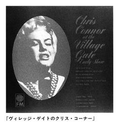
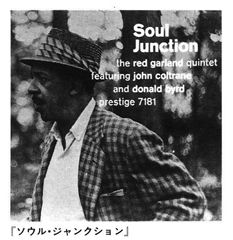
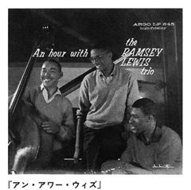
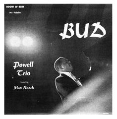
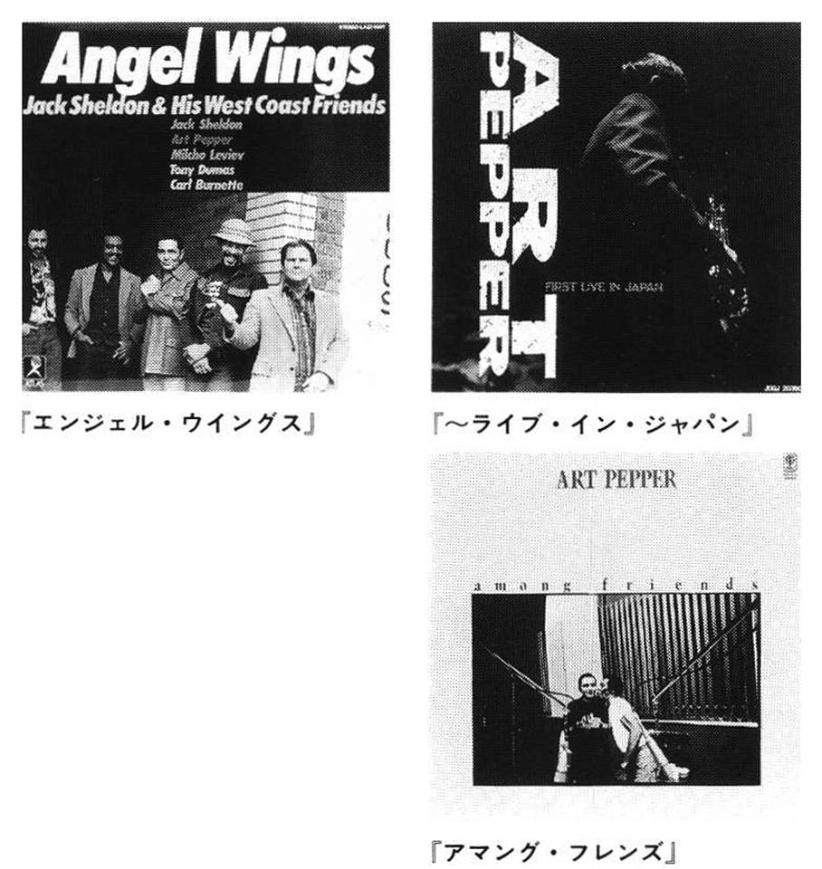
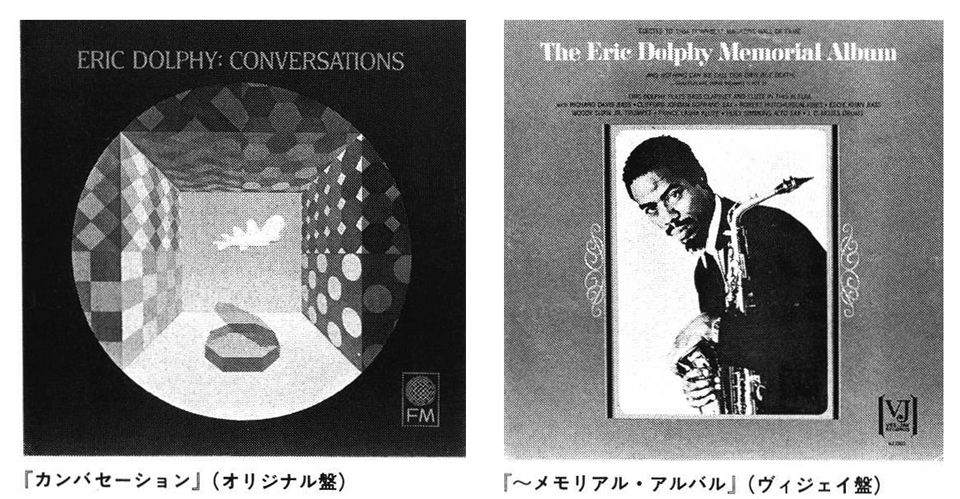

| JAZZなんだかんだ | |
| 大木俊之助 | |
| (1992) | |
ＪＡＺＺなんだかんだ
大木俊之助
目次
本書で紹介するＬＰ及びＣＤのレーベル・番号は、すべて《響》所蔵の表記による。契約会社の移行・価格の改訂により現行のものと異なる場合もある。
なお、本文中のイラストは著者自身が画いたものである。
ＪＡＺＺなんだかんだＶＯ １
歩き疲れて幻視行
帝王の味、カラヤンコーヒー
１
「《響》は、キャラバンの豆を使っているんですか」
コーヒーを一口飲んだ彼が〝訊く〟というより断定する口調で話しかけてきたので、とっさに、「ええ」と返事はしたけれど、マスターは内心で「エエッ」と驚いていた（ようくわかったもんだ）。
「僕はキャラバン・コーヒーが好きなんですよ、信用できますからねえ」
相槌を求めるように、続けて言うものだから......相当な通だぞ、この人は。
で、気持ちはすっかり及び腰になっていった。
ジャズ仲間には、話の途中で――いま演奏 っているレコードの、曲名と演奏者名を言え――と、不意に脅かす人がいる。
普通にジャズを聴くとき、記憶の音楽庫には、実際のレコード棚と同じように、アルバム単位で納まっている。
たとえば、ソニー・クラーク（ｐ）を聴きたいと思ったら、記憶の音楽庫のほうで〝気取った歩き方〟のモノクロ・ジャケットが（どうぞ、これを、と）独りでに、出してくれる。
ＬＰジャケットを見ただけで、明色なイントロが耳の奥で先に鳴ってしまうぐらい、聴き込んだつもりで......（アレッ）、Ａ面の一曲目は「クール・ストラッティン」だったかな、「ブルー・マイナー」だったかなと、曲名の記憶が危なっかしくなることがある。
曲名を思い出せなくて、後頭部に〈しこり〉をぶら下げたまま半日経って、結局、諦めるときもある。
聴くだけなら曲名を知らなくても、あまり不自由を感じないので、これはＡ面が○、こっちはＢ面△ と大雑把に区別して記憶の名盤コーナーに振り分けているからだろう。
だから、『クール・ストラッティン』（五八年録音／ブルーノート１５８８）は、その二曲が入っているＡ面しか聴いていなかったことがよくわかる。裏を返せば、ほとんど聴いたことのないＢ面の曲名は、絶対にわかりっこない。
〔音楽庫ノート〕
☆ ベスト＆ ロング・リクエスト盤なり。
☆ レコード・リストに、これが欠落していたらジャズ喫茶とは言えない。
☆ 聴くたびに「ウン、ウン」頷ける、めったにない「これがモダン・ジャズ」という二管のクインテット。アート・ファーマー（tp ）、ジャッキー・マクリーン（as ）の音は、男たちの視線に乗って街を物色する。クラークのピアノは潔さが身上で、タ、タ、タッと爽快に、そのくせ、気を引くタッチ。こういう歩き方をされちゃたまらない。
☆ ブルーノート盤ジャケット〝気取り足〟の三大名靴デザインの筆頭なり。三大名靴とは、チャーミ ング『クール・ストラッティン』、コケティッシュ『ア・ニュー・コンセプション／サム・リバース』（六六年録音／４２４９）、ユーモラス『グッド・グレイシャス／ルー・ドナルドソン』（六三年録音／４１２５）をいう。ただし筆者自選。
初めに音あり、で、まず実を食べ、舌に良い味を沢山覚えさせる。良い味は共通するものが多いから、「『ブルースエット』はＡ面がよくかかるけれども、Ｂ面の一曲目だっていいよぉ」
「そうだよな、なんて曲だったっけ」
「知らない」
......これで、お互いのジャズ体温は急上昇できるのである。
「俺、『サイドワインダー』はＢ面しか聴かないよ」
もし、Ｂ面の曲名を言われたら、かえって通じなくなるはずで、これだと、〝へえっ、ちょっと変わった奴〟の印象が強く伝わる。
もちろん、曲名は知らなくっていい、というのではない。ヴォーカルに興味のある人や演奏する人にとって、曲名を覚えなくては、どうにもならないだろうが、一般に、アルバム・タイトルは五〇〇〇枚が一万枚に増えたって、へっちゃら、音楽庫に管理できるのに、曲名を検索するのは、その五〇分の一でも難しい、ということである。
２
あの日の俊（響のマスター、大木俊之助のこと）は、彼ほど自信をもってコーヒーを飲んでいたわけではない。初めの一口は舌の上に溜めるように、二口目はなるべくゆっくり、のどを、落ちるように飲んだ。
テーブルの前には男性二人、黙って座っている。奥から若い男性が、同種のカップに別のコーヒーを静かに持ってくる。
クリームも砂糖も入れず、初めの一口を舌の上に溜め、それを飲む。五回か六回か、同じ進行が続く。考えて苦しんで、これほど無感覚にコーヒーを飲んだことがなかった。
「×番目のものが良いように思いますが」
無感覚どころではない。全神経と過去の味覚歴を口の中心に集めて味を験し、俊は、そう言ったのだが、本当のところ、ベストかどうかはわからない。
「それでしたら、私どももアドバイスすることはございません」
前の椅子で、俊に、まるで試験官のように、緊張を強いていた年輩のほうの男性が、保証するような返事をしてくれたので、すごく嬉しくなってしまった。
『喫茶店経営』という雑誌だったか、そのなかの広告からあてずっぽうに、浅草、上野方面を朝から探し回っていた。
あてずっぽうと言ったって、感じの良い文案 を選んで訪ねたのだったが、現地に着くと、とても入る気になれない店構えであったり、妙に忙しそうにして人を胡散臭く扱う店員だったりして（これ！といったコーヒー屋さんて、なかなかないなあ、今日はもう止めにしようか）数時間の無駄足に、ケリをつけたくなっていた。
コーヒー屋さんとわざわざ書いたのは、会社コーヒーは最初から考えに入っていなかったからである。
アッそうそう、このコーヒー屋とは、喫茶店のことではなく、コーヒー豆の焙煎・卸売業者のこと。
喫茶店をやろうとする側からすると、原材料のコーヒー豆を売る店、つまり、コーヒー屋ということになる。赤地にアルファベットの白ヌキ文字、テレビでは缶コーヒーのＣＦで有名なＵ。青に白い鍵マークのＫ。路上看板で会社名やブランドが先に目を刺すようだったら、それは、会社コーヒーじゃないかと思う。
会社だからうまい・まずいとか、良い・悪いとか、そういう問題ではなく、喫茶店というのは、一軒一軒、店毎に味の違い＝腕の違いがわかるから、やりがいがあるわけで、〝会社の名前〟で、客に入ってもらいたくないと、俊は、肩肘張った考えをもっていた。
もう一軒覗いてみよう と入ったのが、その頃、東京駅八重洲口の駅前にあった、キャラバンコーヒー（株）中央営業所である。
決めたコーヒー豆は、後から教えられたことだったが、コロンビアをベースにした酸味・甘味のバランスがマイルドにフラットしたオリジナルブレンドで、キャラバンコーヒーの自信作だった。
ホットコーヒー用はキロ当たりクンロク（九六〇円）と聞いたとき、俊はふとここは、マージャン好きな経営陣なのだろうかと思った。
昭和三九年一〇月末頃のその日、ようやく、《響》の営業開始が近づいたことを、疲れた足が知った。
３
ジャズ仲間が、ジャズ喫茶のオーナーたちだったりすると、その脅しも精度が高くなる。
「いま吹いていたプレイヤー、わかる？」
アドリブが終わったとたん、チャンネルを切り替えてくる。
「えっ？」
眼を白黒、頭のなかではカラーの星形が、ガッツンガッツンぶつかり合っちゃうけれど、同席の連中は毎度のことだから、アアダコウダと返事をする。
「何？この人、誰だかわかんない？」
詰問者は〝そんなことでよくジャズ喫茶やってられるよ〟と言いたそうに、イや実際、そう口に出して、周りを挑発する。
「それは○○○○」
「オツ、いい線だ」
「何某」
「違うね、正解は××××だ」
（ウーン、なるほど）
これにて一件落着......かというと、そうじゃない。
「曲名何だか知っているか、なんというレコードの何曲目に入っているか？」とくる。
（ウーン）
さっきのウーンは尊敬のウンで、これは憎悪のウンである。
ナンダカンダあって曲名がわかると、
「じゃこの曲の、違うバージョンを三つ挙げよ！」
と、たたみ込んでくる。
（ウーンウン）
今度はそれに、苦悩のウンが、のしかかる。
――寺島靖国氏お得意の三段攻撃である。
「キャラバン」というスタンダード曲がある。
スタンダードというのは、最初にその曲を聴いたのはいつだったか、演奏者名も忘れてしまうほど、沢山の名演・名盤がある、ことだろう。
耳には、誰が最初だったか確かな記録は残ってないけれど、目に一番早く焼き付いたものはある。
アート・ブレイキー（ds ）の同名タイトル盤『キャラバン』（六二年録音／リバーサイド４３８）である。
ブレイキーとジャズ・メッセンジャーズは第二期黄金時代、つまり三管編成が人気になり、ジャズ史上最大の輝度を放つ宝塊になっていった。
このアルバムのジャケット写真を見ても知るように、六〇年代のブレイキーは、ネクタイ、スーツ姿で、熱い音を弾き飛ばしていたが、汗臭さを感じさせない。
無論、汗はかくだろう出るだろう。
ほとばしる量だって、他の楽器奏者と比べたらオモチャのジョウロとスプリンクラーぐらい、違いがあるだろう。
なのに、汗臭さを感じさせないというのは、ブレイキーが若い気持ちを失わないから。ジャズばかりじゃなく、どうしても年月の重みがある種の臭みになる、ものだが、ね。
とっくに四〇歳は過ぎていたこの演奏の第一音（第一打）は、腕が擁って肩越しのかなり後方から打ち下ろしたであろう剛毅な〈鳴り〉で、聴く者を瞬間に、別世界へ拉し去ってしまう。
曲はドラムソロが胎動し、ポラロイド写真のように、〝そこが砂漠であるのが〟一打ごとに鮮明になっていく。
「キャラバン」に限らず、スタンダード曲の名演奏には、特定のイメージを彷彿させる〈何か〉の呼びかけがある。
初めて聴いた演奏を〝良い曲だ（あるいは駄目曲だ）〟〝このミュージシャンは素晴らしい（あるいは好みじゃない）〟という好き・嫌いの単純選択にしたって、ある波長の呼びかけをキャッチするか見逃すか、じゃないか？
呼びかけは、具象的になればなるほど、静止画よりはムービーで、モノクロよりカラーで、できればストーリー性があればあるほど、名曲名演であると思う。
●熱線を遮る樹一本・岩一個ない寥々の起伏を、焦げた風が砂の渦を描く。自然（極限）と人間（生物）が制せず屈せずのバランスで、砂漠を往復する。暑い、苦しい。素朴で頑丈な足取りで、先頭のブレイキーが汗を出す。汗は目的地へ到着するための推進力。夕陽の沈む前にオアシスに着かねば。
●ピアノが迎えに出て一挙に妖しい夜が濃くなる。トランペットが燃えさかる炎になって（ハバード）、サックスは激しくうねる踊り子（ショーター）、半円に囲む離子方（フラー）はトロンボーン。アフリカを踏む喜びが、活きて伝わる。眠る間もなく（実際は充分な休息を得て）続くブレイキーのドラムソロの快速で夜が明け、前進！
〈茶色は栗色ほど良い〉かどうか知らないけれど、エマーシー盤のクリフォードは薄茶色のモノトーン・ジャケットを推薦する人が多い。
『スタディ・イン・ブラウン』（五五年録音）『ブラウン＝ローチ』（五四年録音）『ジャム・セッション』（五四年録音）の三枚で、初めの二枚は断トツ人気――そのことにケチをつけるんじゃなくて、『クリフォード・ブラウン・オール・スターズ』（五四年録音）、『ベイジン・ストリートのブラウン＆ ローチ』（五六年録音）のカラフルなジャケットにも着目してくれない？ということ。
特に『オール・スターズ』（エマーシー／３６１０２）のほうを。
Ａ面・Ｂ面一曲ずつだから、なんとなくもったいないとためらっているんだったら、ドラムソロが絶品の「キャラバン」で（ということは片面だけ）とんでもない誤解だったと思い知らされるよ、きっと。
こっちも、ドラムソロのイントロで、隊を曳くが、すぐにサックス、トランペットが追い付き華美な進行になる。
●イースターでも、感謝祭でもジャズ本フェアでもいい。これは大勢の人が集まり楽しむ都市型のフェスティバル。
●メインストリートをデコレートした車が先導し、凝った趣向（主張）の花自動車のハーブ・ゲラー（as ）が、ウォルター・ベントン（ts ）、ジョー・マイニ（as ）が次々に通過。
●車と車と、あいだまわりを鼓笛隊・チアガール（ピアノ、ベース、ドラムス）が、ずっと囲って動く花壇。
●中枢車が三分五秒かけて通るときは、両側のビルの窓は人の顔だけになってしまった。主神のクリフォード・ブラウンのトランペットソロは、言葉は早口だけれどもいつになく切々と語り、全ブラウン語録のなかでも真実に最高！ ケニー・ドリューのピアノソロが続く......まるで石を砕く勢いのタッチ、これがドリューなんだ！五〇・六〇年代の。三人目主神ローチのドラムスで、パレードはクライマックスになる、本当の贅沢が始まる。アスファルトの雑踏を裂くような、モダンな響きである。
●中央広場に勢揃いする。ローチを中心にゲラー、ブラウンとのエキサイトしたショー（四小節交換）になる。機能美・人工美の融合した、カー時代の隊商。
「キャラバン」は、ローチ至極のソロ（と俊は思っている）である。
ドラミングの始まりでも途中でもいい、聴いていてウッ！でもアッ！でもいい、息が止まる思いがしたら、実際にそのまま息を止めてみる。ローチの腕が続くか、呼吸を止めて聴くほうが我慢し切れるか、〝打〟に感電死したつもりで挑戦してみるがいい。
勝ち負けはあっけない。とても三〇秒ともたないのに、ローチのスティックは三分近い連打で、これは都内のＪＲ電車に乗って、次の駅に着くくらいの時間に相当する。
本当のところ、ブレイキーがいいのか、ローチがうまいのか、おそらくあと何十回、何年聴いてもわからない予感がする。
【キャラバン】デューク・エリントンとエリントン楽団のトロンボーン奏者でプエルト・リコ出身、ファン・ティゾールの共作による、１９３７年の作品。
ふつう音楽書や解説文では、こう記述されたものが多い。
野口久光先生はもう少し詳しく『ザ・ミュージック・オブ・デューク・エリントン』（ＣＢＳソニー）のライナーノーツにお書きになっている。
〈......この曲はバーニー・ビガードがリーダーのコンボ演奏が初吹き込み（１９３６年12 月18 日の《ヴァラエティ》盤）だが、これは翌37 年５月14 日、オーケストラによる初吹き込みである......〉
作曲された年が三六年でも三七年でも、たいした違いじゃないから構わないと、言われればそれまでになってしまうが、こうしたところに配慮のある解説は、とても嬉しくなってしまう。ある演奏者のアルバム群を聴くとき、できる限り古い録音順（初リーダー盤からなど）に、その演奏者の足跡をなぞってみたい、というのが俊の基本であるから、〝曲〟の場合もなるべく初出のものに遡りたいと思っている。
もっとも、一般には、楽曲出版年度によるらしいから、この場合は、三七年がそうなのかも知れない。そういう意味で三六年が正しいのか三七年か、にこだわることもないのだけれど、その肝心な三六年吹き込みを聴いたことがないので、少し、すねてみたい気がしたまでである。
『ザ・ミュージック・オブ・デューク・エリントン』はアメリカＣＢＳ原盤から、ジョージ・アヴァキャンがエリントンの演奏を一二曲選曲したもので、二八年一〇月から四九年九月まで「ソフィスティケイテッド・レディ」「ソリテユード」「ザ・ムーチー」などの名演のなかに「キャラバン」も収められている。ＳＰ時代の録音だから『オール・スターズ』のローチのドラムソロより短い演奏に終わっているが、これが《響》のキャラバン隊のなかで一番古いもの、ということになる。
このエリントン・オーケストラの行程は、サウジアラビアで、千夜一夜が浮かんでくるようである。
ソニー・グリーア（ds ）のマレットが幕を開ける。作曲者ティゾール（tb ）、五か月前に初演したというバーニー・ビガード（cl ）、ミュート・トランペットのクーティ・ウイリアムスのソロも揃って、幻想画をめくるように美しい。
エリントンは、三分のときでも組曲ふうの語りに感じられるほど、豊かな演奏をする。〝語り〟が充分なのは、『マネー・ジャングル／デューク・エリントン・トリオ』（六二年録音／ユナイテッド・アーティスツ１４０１７）の「キャラバン」である。
むしろ、こっちのほうが著名盤であるが、今度は、氷原を滑る厳しさと逞しさが伝わってくる。
これはチャールス・ミンガス（ｂ）の参加が、エリントンを沈着にしゃべらせたのかも知れない。クリフォード・ブラウン・オール・スターズのときのローチでさえ能弁を抑えて謹厳な話しぶりになる。
『オール・スターズ』ではもうひとりの好演者、ヶニー・ドリュー（ｐ）が、リバーサイド盤での初リーダー作『ケニー・ドリュー・トリオ』（五六年録音／２２４）の冒頭に「キャラバン」を入れている。
この曲はやはりドラムスのイントロが似合うようだ。
●フィリー・ジョー・ジョーンズ（ds ）のスティックがミステリアスなタイミングで打ち出す。魔術師の指が、コンマ以下の秒速でカードを生き物のように変化させる。
●スピードに乗ってカード手品はパターンを交錯させ......魔術師はドリューで、カードはベースのポール・チェンバース。人と紙は一体で、どこに〝種しかけ〟があるか見破れず、五分足らずの演技（演奏）はドリューのワンマン・ショー。繰り返しでも言うよ、五〇年代の彼はこうなんだ。
こうしたピアノ・トリオの「キャラバン」は、どうも水墨画風の隊商になってしまうが、セロニアス・モンク（ｐ）の『プレイズ・デューク・エリントン』（五五年録音／リバーサイド２０１）では、その上に鳥獣戯画の雰囲気さえある。
例によってドラムスのイントロで、ケニー・クラークがコミカルに南アフリカ（じゃなくってもいいが、ラテン・リズムが合うところへ）を設定する。
●探るよう忍ぶように街を彷徨するモンク。夜通し捜して小さな酒場のカウンターに居る。
●アメリカ人らしい女主人とひとり客のモンクが静かな会話......ポツリポツリと......直感通りに彼女は、ノースカロライナの出で話に弾みがついてきた。
●話題が交換して（ピアノソロからベースのソロになって）心が躍る。モンクが「そうだそうだ」と頷くと「でしょう？でしょう？」というようにオスカー・ペティフォード（バレてしまってはしようがない。彼女というのはペーシストのペティフォードを指す。もちろん男性）が促すので、二人ともすっかり上機嫌。
●カイロ（アルジェでもカサブランカでもいいんだ。勝手に行ってみたい街を想像してくれい）一の美女と夜明け知らずに過ぎ、日の出（後テーマからエンディング）はモンクの二音で、眩しい朝。
４
レジのそばにある電話が鳴っている。
カウンターの奥でコーヒーを淹れているマスターは、いま手が離せない。新人のウェイトレスが、出たようすである......。
「マスターにお電話です」
「どこから？」
「カラヤンとか、言ってましたが」
「カラヤン！」
（冗談だろ？ あのカラヤンがかけてくる道理がない）
「モシモシ、オデンワ、カワリマシタ......」
受話器の向こうでは、
「明日のご注文をどうぞ」ときた。
（なあんだ、カラヤン―キャラバンの間違いじゃ）
キャラバン・コーヒーから週二回、オーダー承りの電話が入る。
たいていその時間は、マスターがレジのそばにいる。そんな仕組みをウェイトレスに、うっかり教えていなかったので、「キャラバンですが」と言ったのに、「カラヤンですが」と聞き違えた、という話。
でも、カラヤン・コーヒーなんてありそうな商号だけど。
もうひとつ、「キャラバンの豆を使っているでしょう」と、焙煎業者を飲み当てた彼も、種明かしを聞くと、なんでもないことであった。
「よくわかりますねえ」と感心するマスターに、
「だってそこの棚に赤缶があるじゃありませんか！」
カウンターの右端にちらりと見える赤缶。
無意識にいつも後ろ向きになっている赤缶。
実は表側、といっても丸い筒だから表裏という区別はないんだけれど、一か所、黄色文字で、ＣＡＲＡＶＡＮ ＣＯＦＦＥＥと記されているのだ。
（なあんだ、手品は後ろから見ると、オット、この場合は真正面からなんだけど、字は後ろ側に隠れて......ア、ア、ヤヤコシ）
ま、そんな訳だったが、それにしても、赤缶＝キャラバン・コーヒーを知っているというのは、あちこち飲み歩いている証拠。
俊もどこかでこの手段を使おうかな。
ＪＡＺＺなんだかんだＶＯ ２
あの一夜――時を超えて
エルビン時計を見ると、贅沢な時間を思い出してしまう
１
開店準備が終わると（何時かな？）必ず時計を見る。だいたい、いつもと同じ時間で。まだシャッターは半下ろしの状態。それは、見ようによっては半分開きかかった、とも言える。
シャッターの下から「まだですかー」という声が上ってくることがある。
常連の語感は「まアだア」。柔らかいけれど、身体がドアを押して〝入っちゃう〟かたち。時間潰しのセールスマン風社会人だと〝何時になったら開けるんだよ〟と言わんばかりに、「ま」に強い苛立ちを乗せてくる。
腰から下の歩行者が視界に入り、ドアの向こう側にピタッ。覗こうともせず回れ右をしてしまうのは、時間がたっぷりある学生のなかでも、気の弱い人かな。
店先を避けて右隣のバーにバイクを置き、煙草を何本も吸うのは、デザイナーの長友さんである。シャッターが半開きのときは決して姿を見せない。待ち続けるのみ。きっと昔気質の人なんだな、そんなに遠慮して......。カワサキＺＸＲの前輪が、店の内から見えるか見えないか、ちょっとだけ出っ張るように置いてある。
そういうのって、深慮遠謀だってことを一度も感じさせたことがなく、音を立てずにひっそりと置く人である。
雨の激しいときや真夏・真冬など、外で待つのは厳しいんじゃないかな、と掃除中でも内に入ってもらうこともある。開店前でアドレナリンが高くなっているから、相手がムスーッとしていれば、こっちもブスーッとした声になってしまうかも知れない。品の良い言動だったらコロッ、笑顔で応対しているんだろうよ。
今日は、昨日と同じでない一日が始まるが、毎日見る時計は同じである。左スピーカー上の壁に掛かっている《エルビン時計》である。エルジン、ロンジンの誤記じゃなくて、一九八六年夏、エルビン・ジョーンズから貰った時計なので、そう呼んでいる。
２
エルビン・ジョーンズが日本のファンの眼前に初めて立ったのは、一九六六年一一月であった。
四か月前に、ジョン・コルトレーン・クインテット最初で最後の来日がある。
その年の春、「エルビンとマッコイ・タイナーが（コルトレーンを）やめたらしいぞ！」という噂で、あちこちが驚き始めていた。
「そういえば、最新盤『メディテイション』（六五年録音／インパルス）で、ドラムスが彼とラシッド・アリの二人になっていたのが、ちょっと気になっていたがなあ」など（何かあったんだ）と憶測したりして、アセンションのときよりも騒ぎが大きくなってしまった。
『アセンション』（六五年／インパルス）は『メディテイション』の前に発表された一一人編成のアルバムで、これまでのコルトレーン像を変えるものであった。
コルトレーンを理解する......と説くほど大それちゃいないけれども、好きになれる聴き方というのは、ある。
彼の大河音楽を、まず水源に遡ってから、その流れを下るとよい。〝川〟は支流を集めて段階的に大きくなり、川面を変える。コルトレーンもレーベル別に区切って鑑賞するとしよう。
●プレスティッジ・リバー（五七年―五八年）は、マイルス・デイビス水系に近い水質（レッド・ガーランド、ポール・チェンバースを擁して）で、ブルースが美しい。
●アトランティック・リバー（五九年―六一年）のジャイアント・ステップス渓谷は、左右の山が紅葉で埋め尽くされた圧巻の景。渓流 下り の絶技は、急流をいくつもかわして（何回も演奏されて）、河口まで衰えることがない。
●インパルス・リバー（六一年―六七年）は最も長く、史上最大のパノラマを魅せる。至上の愛はその中心で、この辺りの川下近くになると、絶好の見晴らし台（ヴィレッジ・ヴァンガード、バードランドなどのライブ盤）があり、仲間に入れてもらい、拍手をしたいぐらいの連繋美があり、とても一日コースで済ませるわけにはいかない。
『至上の愛』（六四年録音）が中心で、と書いたが、コルトレーン音楽の頂点を極めた、と書き直したい。彼の〝愛〟は、宇宙を統べる神に辿り着いたのであるから。
到着してしまったのだったら、じゃあ、空間はそれでお終いか、と言うと、コルトレーンが創造する宇宙は、我々が認識する埒外な、無辺なものに拡がろうとしていたのである。
エルビン、マッコイ、ジミー・ギャリソンを配した最強の手段で最高の音楽を完成してしまった後には、どんな音楽を据えたらいいか、以下は俊の推量する、彼の超宇宙とは、である。
――それが正鵠を得るものであるかどうか、ごくごく一部分を想像するにすぎないだろう――
彼は、オーケストラルな編成とグローバルな思想で、次の空間を睨んだのではないだろうか。
コルトレーンの音楽は、空間に音を敷き詰めることで他を圧してきた。しかし、体力的・技術的にその限界は承知していたに違いない。といって、たとえば、音量を見切ったとしても、彼が電気的な補助に頼ろうとするなんて、とうてい馴染めないことである。
量的には、だからインパルス初録音の『アフリカ／ブラス』（六一年）のように大編成のバンドで、音塊を創造しようとした。
質的には、他国．多民族の宗教、特にインド仏教や日本の禅など東洋哲学に傾倒していくに従って、キリスト教とか仏教とかの枠、言い換えればジャズの諸理論を包んで超えるものを探求したのである。
それがどういう音になるのか、彼にはわかっていたかも知れないが、よく言われる最後期のコルトレーン音楽を、フリー・ジャズと認識するのは誤りで、一番近いと思われるものは前衛ジャズとかニュー・ウエイブ・ジャズと呼ばれる形式である。
もしも、六七年七月一七日を過ぎてなお存命であったなら、明晰なジャンルが確立しただろう。が、太陽を中心とする太陽系の地球人である我々には、いや、俊だけ勉強不足なのかもしれないけれど、他の恒星空間に当たるそのコルトレーンの超宇宙を、はたして掴み切れたかどうか。
「アセンションしよう」
ヘッド．アレンジのできない学生バンドの連中が、レパートリーを使い果たすと、こう言って、訳のわからない音楽をやりだす。聴くほうも聴くほうで「これはアセンだ」とパフォーマンスだけを期待する......六〇年代後半だったよ。フリーと出鱈目、とは違うのに。
無調整音楽、コード進行の解放、ビート・小節の解消などのフリー・ジャズと『アセンション』が一緒くたにされてしまったところに、コルトレーンは難解だという部分が発生してしまった。
オーネット・コールマン、ドン・チェリー、セシル・テイラー、アルバート・アイラーたちの総帥に擬せられるというのも、彼がいかに時代の主音であったかの証明になるのだが。
そんな訳で「エルビンはコルトレーンに付いていけなくなった」だの「マッコイと二人は首になった」だのと、無責任雀が飛び回ってしまった。
エルビンとマッコイは、三大ドラム合戦のメンバーとなって羽田空港に降りた。ドラム合戦とは、ＪＡＴＰコンサートの目玉プログラムにもなっていたという、あれ。
とにかく、見て楽しいジャム・セッションで、日本ではこれで三回目の企画である。
ＪＡＴＰについて少し説明すると、名プロデューサーのノーマン・グランツが四〇・五〇年代に有名プロ・プレイヤーを集めて行なったコンサート、ジャズ・アット・ザ・フィルハーモニックの略。アメリカ国内、ヨーロッパを演奏旅行。日本には第二次世界大戦後、最も早く来日したグループのひとつになり、ライブ盤『ＪＡＴＰ・イン・トーキョー～ライブ・アット・ザ・ニチゲキ１９５３』（パブロ・ライブ）がある。
ニチゲキは『日本劇場』の愛称で、戦前から映画と実演（レヴュー「春の踊り」とか、エノケン・ロッパの喜劇とかロカビリー大会とかとか）の東京名所二大劇場のひとつで、有楽町駅前にあった。現在マリオンの一一階に、その名前だけは残っている。ちなみに他のひとつは浅草の『国際劇場』で松竹少女歌劇の本拠地であったが、今はホテルになってしまった。新宿に『コマ劇場』のできるずっと前の話。
アート・ブレイキー、トニー・ウイリアムスとエルビンのドラムス。ジミー・オーエンス（tp ）、ウェイン．ショーター（ts ）のフロントに、マッコイのピアノ、ベン・タッカーのベース。
一行のなかで、初来日なのは彼ら二人だけだった。
一一月三日、大手町にあったサンケイ・ホールが初日。
ステージは三セットのドラムス。中央にブレイキー、下手（向かって左）エルビン、上手（右）トニーが座ると、いつもよりズーッと狭く見える。ブレイキーはじめ全員のネクタイ、スーツ姿がお祭り気分を締め、拍手の音は、〝これはゴッコじゃないぞ、真剣勝負が始まるんだ〟に変わっていった。
トニーは『イン・ヨーロッパ／マイルス・デイビス』（六三年録音／ＣＢＳ）に......トニー・ウイリアムズ・アラ・バトリ......と紹介するＭ・Ｃがあって、それを聞いた六五年頃は、まだ日本で名前を知っている人もいなく、〝トニー？いったい何者〟。ところが、このアルバムによって、釣りたてピチピチ、ピカピカ初鰹のような音を叩きとばす一八歳の新人とわかって、いっぺんに注耳（注目の変形造語）を集めてしまった。来日の年までに、ブルーノート・レーベルからリーダー・アルバムを二枚も発表して、寵児が約束される、二一歳になるところである。
ショーターは、同じくマイルスのＣＢＳ盤『イン・ベルリン』（六四年録音）で、トニーと共演していた。
マイルスがコルトレーンの後任に熱望した〝鯱〟であり、その前五年ほどブレイキーとジャズ・メッセンジャーズの音楽監督で評判を高め、次の時代の主役を狙う一番手であり、この頃までに、ヴィジェイ、ブルーノートから一二枚のリーダー盤を出していた。
三三歳を過ぎたばかり。
エルビンの前にピアノがあってマッコイがいる。お目当てはこの二人である。エルビン三九歳、マッコイは誕生日が一二月だから、ひと回り年下である。
ここまで書いてきて、三つ巴ドラムバトルとツーホーンのジャム・セッションがどう繰り広げられ、どんなクライマックスがあったか、興味津々の話が続けば言うことなしのはずだった。ところが、曲名も何も思い出せない始末。
恥ずかしいというか、情けないというか、エルビン見たさマッコイ聴きたさに、ぼけとした当時の己を罵るばかり、なり。
ただ、意外な展開になったことだけ覚えている。
① 実力エルビン② 人気トニー③ 名声ブレイキー、あるいは① フレッシュ・トニー② スーパー・エルビン③ ベテラン・ブレイキーの順で聴きごたえあるだろうと予想していたのが、大間違いで、断然の見せ場（聴かせどころ）を演じたのは、アート・ブレイキーだった。
いつでもどこでも、ブレイキーはエンタテイナーなんだ。
そのぶんエルビンは、コルトレーン時代に比べて、やや小さい演奏であった。
アクシデントはその後のツアー、札幌で起きた。
麻薬所持の嫌疑でエルビンとトニーが取り調べを受けた。エルビンのドラムケースに、それがあったという一件である。
当時の新聞を保存していたわけではなく、また報道は事件の初期を伝えるだけで、追跡記事はなかったから、詳しいことはわからない。
ただの所持だけではないはずであるから、一行の誰かが常用していたのだろうか。
係官が、「これは貴殿のか？」と、ケースを指して質問したので、エルビンは「（ケースは自分のものであるという意で）イエス」と答えてしまったそうである。
この二、三年、麻薬にかかわる容疑で直前になって日本に入国できず、コンサートを中止するやらメンバーの代替やらで、招聘元も慎重だったのに、突然と思える発覚で、ファンはがっかりした。プロモーター側のＳ氏、Ｋ氏らの手配、奔走の甲斐もなく法で裁かれることになって、コンサートはヨーロッパ（？）にいたケニー・クラークを急いで呼び、ドラム合戦を続け、エルビンとトニーだけ日本に留めて終了した。
トニーは身柄を拘束されて、エルビンは初め三番町ホテル、後になってフェアモント・ホテルに滞在を余儀なくされていた。
食事宿泊代はプロモーターが負担していたが、半自由・無収入のエルビンは心細く辛い毎日のようだった。
ホテルは千代田区にあって、神保町交差点にある下倉楽器店ヘエルビンが散歩がてらに立ち寄ったことから、《響》へ来るようになった。
それから、エルビンと俊＝常連の応援が始まった。
どちらも微力だったけれども、午後になると九段坂を歩いてやってくる、《響》の一番新しい常連 になったエルビンを待つ、友情は、強くなっていった。
一二月に入ったある日、エルビンは珍しく、夜になってから顔を出した。
彼は、初対面のときはその厳しい表情、圧する体格から〝怖い人〟の印象を与える。しかし、知り合ったとたん、こんな〝優しい人〟は日本人でもなかなかいないことがわかる。
その夜のエルビンは、ふだん見せる優しい顔が消え、怖い輪郭で凍っていた。周りを、たじろがせる憂色を纏っていた。少し酔っているみたい。
いつもより客数が少なくて、中央の席がぽっかり空いていた。とりあえずそこに座って、ウイスキーをストレートで......無言で一杯、二杯。怒っているような悲しんでいるような、睨んでいるような考えているような、無言でまた一杯。
初めて見る彼の硬直に、俊はどうしていいかわからない。
〝そうだ、このレコードをかけたら気が楽になるかもしれないな〟
リクエストを中止して、〝このレコード〟にした。
静かなゆっくりしたイントロ、純なピアノがワン・コーラス。シンバルとスネアが始動をきっしりと支える（このドラムはあなただよ、わかってるだろうけど、さ）。ソプラノサックスが、それらを包むように美しいソロに入る......。
突！ エルビンが立った！ 叫んだ！
「ナット・ギルティ！ ナット・ギルティ！」
絶叫しながら、うおっと泣き出した！
「ドント・クライ！ オー・ドント（クライ！）」
俊もすぐに飛び上がって並ぶ。「泣くなよ、泣かないでくれよ」と、沸き上がった彼を宥めた。英語を話そうとかそんなんじゃなく、単語をぶつけるだけ、なんでもいいから夢中で。
肩を撫でようとするのだったが、大きな身体だから、しがみついているだけ。
その日、彼は有罪の判決を言い渡されたのだろう。どんな内容だったかは、わからない。英語で訊く術もわからない。
彼は「無罪だ」と泣きながら言う。俊にはそれだけで、信じられる。が、どうにもしてあげられないんだ。裁判の経緯すら知らないのに、まして今みたいな興奮状態じゃ、どうしたらいいか、一緒になって泣きたい気持ちだ。居合わせた数人の客も同じだろう。
「送っていくから、今夜は帰ろうよ」
急に崩れるようになったエルビンを、常連のたかし君に手伝ってもらって、タクシーに乗せた。
たかし君は、俊よりもさらに小柄な学生で、ドラムを練習していた。
いつの間にか、レコードは別の盤に代わっていた。
俊がさっきかけたのは、『デューク・エリントン＆ ジョン・コルトレーン』（六二年録音／インパルス）で、最初の曲「イン・ナ・センチメンタル・ムード」のトレーンのソロがエルビンの心を激しく突いてしまったのだった。
３
「もう少し飲みたい、付き合ってくれ」
代わりにフロントマンからルームキーを受け取った俊を、エルビンは引っ張るようにバーに誘った。
まだ八時台だったので、奥の薄暗がりに外人の男女が四、五人いるだけ。カウンター客は我々だけだった。
千鳥ケ淵の真正面に立つフェアモント・ホテルは、初めて入ったのに、モノクロ洋画の主人公になったような、ふんわりした気分になれた。
「おサケ。燗」
ラウンジ・バーで日本酒をオーダーしていいのかな、俊は、注文したエルビンとバーテンダーの顔を往復で見ていたが、「お三人様ですか」、自然な口調が戻ってきた。「いえ、ぼくはオレンジジュース」と、たかし君が小さな声で言った。
さすがにホテル内だから、日本酒はタンブラーで出てきた。グラスが空にならないうちに突！ エルビンが早口で怒鳴り出した。きっかけになるものがなく、急に何か喚くと、拳固をつくってボクシングの構えで今にも殴ろうと......。
「ノー！ ルック・ミー」
通じるかどうか、とっさに〝やめろよ！ 俺だよ〟と言ったつもりである。
じーっと見据える眼に酔いが集中している。
「ホワイ？ イツツ・ミー」
〝一発は来る！〟と思った。怖くはないけれど、悲しかった。
「オーキサン、ソリー」
両頬を囲っていた手を下ろすと、眼光は、ゆっくり甘い焦点になっていった。
「こちらは、ベトナム帰還兵ですか」
バーテンダーが恐る恐る訊く。
「いや違いますよ。有名なジャズマンですよ。エルビン・ジョーンズさんといって、世界一のドラマーです」
「エルビンさんなら、名前は知っています」
「そうでしょ。こんな風に荒れるなんて初めてですよ。もう部屋へ連れていきます」
正体半不明になった大男を、俊とたかし君で両肩に入れる、やあ重い。
それでも同じフロアだったから助かった。三人が廊下をよろけて通るのを、後ろから見たら、まるで、人間松葉杖を二本使ったヘラクレスじゃないか......笑える余裕は二人にはなかったけど。
手前が洗面トイレ浴室、仕切りの奥にシングルベッドがあって、内装が良いだけの、狭いアパートを思わせる部屋だった。
どうにか、歩く松葉杖二本が、エルビンをベッドの上に下ろしたら、また、ボクシングの構えになって眼がとんがってしまった。
どうやら、前に立ち塞がる物体に対して反射的にアタックをかけようとするようだった。
「ソリー。（俊を識別して）暫く帰らないでくれ」
俊をスツールに座らせ、自分のベッドに腰をかけ直すと、ギターを抱えて「曲を作ったんだ」と言って弾きはじめた。
静かな素朴なアコースティックな音。グレイに沈んだ部屋が、黎明のようにほの赤くなっていくようであった。太い指が弦を払う、押さえる。素人耳にも素人演奏っぼく聴こえるのだったが、ケニー・バレルやジム・ホールに劣らぬブルースがダイレクトに伝わる。
たかし君は立ったままで、やはりしんみりして聴いている。
ホテルの一室で、ジャズ・ミュージシャンがソロ・ギターをプレイする。その指先と同じ高さの三〇センチ前に、俊だけが、観客でいる。しかも、自作曲の初演奏とあって、《最高に贅沢な演奏会》じゃないか。
たかし君には、もうひとりの観客というより、その場の立会人・証言者になってもらおう。
この事件は、エルビンにとって結果的には、良い転結を迎える。
約二か月間の滞在延長は、日本で多くのブラザー（友人）を得、ファンをつくった。
とりわけ、長崎の奥 谷 けい子さんは、六八年に単身渡米して、長い道程のパートナーになり、傷心の天才ドラマーの健康を、三〇年も若く取り戻した。
４
『ヘヴィ・サウンズ／エルビン・ジョーンズ＆ リチャード・デイヴィス』（六八年録音、インパルス）、ＬＰだとＢ面二曲目、ＣＤなら五番目に「ギター・ブルース」という曲がある。オリジナル盤では「エルビンズ・ギター・ブルース」だが、牧歌的なイントロのソロは、あの、エルビン・ジョーンズ・オン・ギター・アット・フェアモント・ホテルのものであったのだ。
その後、会うたびに、けい子夫人は「エルビンの前では、ジョン・コルトレーンのジョンもコ......も言わないで下さい。名前を聞いただけで激情がとまらなくなってしまうんですよ」と、やんちゃ坊を見るような眼で言う。

エルビンはコルトレーンと訣別したままになってしまったが、彼にとってトレーンは音楽・人生の上では生涯の師であり兄であった。
敬慕の念が年ごとに高まり、コル......と聞いて錯乱するのもしばしばだったそうである。
けい子夫人は、トレーン追悼コンサートをエルビンの名で開くのが、長い間の願いであった。
彼が平静な心で、マッコイ、リチャード・デイヴィス（ｂ）、ソニー・フォーチュン（ts ）、フレディ・ハバード（tp ）の五重奏団で《至上の愛コンサート》を行なったのは、二〇年以上も経った、八八年六月のことであった。
ＪＡＺＺなんだかんだＶＯ ３
《響》七不思議考
フエルムードの雨傘
１
バッシ......活字でも音声でもいい、こんな言葉の後はどう続くだろうか。
「バッシと、決めました」
卒業、就職、初出勤は、こうありたい。
「バッシ！ 思い切りひっぱたかれた」
こっちも悪かったけれど、少しは手加減すりゃいいのに。
Bashという英単語がある。
このところ何かと目の敵にされる、日本叩きのバッシであるが、「ぶん殴る」という意味。国が違っても変なところで似ていて、おかしい。こんど誰かをバッシとやっつけたとき、英語で喧嘩した気分になれそうである。
２
『バッシン／ジミー・スミス』（六二年録音／ヴァーヴ６―８４７４）というアルバムを知っている人は、そう多くない。
だいいち昔も今も、楽器編成を見てオルガンやコンガが入っているだけで〝ちょっとね〟と、敬遠する傾向がある。
鍵盤楽器であるところや演奏法が似ているために、講堂に設置されているピアノと、各教室に配置してあるオルガンとを、どこか格の貴賎をつけていやしないだろうか。いやいやそういう差別をもってジャズを聰いちゃいけない......でも......身近にあるからハーモニカやリコーダーみたいに、つい有難さが薄味になってしまったのかも知れない。
それとも、日頃、教会に縁のない者にとって深遠に響いて、有難みがありすぎ、気後れするのか。
そもそも（というほどの説ではないが）、ピアノとオルガンでは音の出来具合が違うので、乱暴な分け方をすれば、打楽器ふうのピアノの音と管楽器ようのオルガンの音とは、同じグループで考えないほうがいい。
そういえば《響》のレコード・リストもピアノ／オルガン編でまとめてしまったなあ――。いま頃反省しても遅かったか。
カウント・ベイシーやオスカー・ピーターソンの巨匠も演奏したことがあったオルガンは、その部分だけ聴いたって誰が弾いているのかわかりっこない。
ピアニスト、オルガニスト、キーボード奏者は、ひとりで二役も三役もしないほうが、良いように思う。
ジミー・スミスは、初めからオルガン奏者として活躍してきただけに、ジャズ・オルガンといったらまずジミー・スミスの名が挙げられるほど、彼の音がオルガンに乗っている。「初めから」についてはちょっと説明がいる。
最初は彼も、ピアノ教師だった父親に習ったピアノで一六歳から一〇年間、生地のペンシルヴァニアでプロの仕事をしてきた。二六歳のとき、音楽理論をハルゼイ・ミュージック・スクールで学び、二年後、再び、ピアニストの仕事についたが、二八歳の（たぶん終わり頃だったろう）のある晩、ワイルド・ビル．デイビスの演奏を聴いて即座にオルガンに転向しようと決心した。翌年（五四年）いっぱい、夜はリズム＆ ブルースのバンドでピアノを弾き、日中はオルガンを練習していたという。
というような話が、デビューした頃のアルバムの英文ライナーノーツに書かれてあった。
とにかく五五年頃にはオルガン奏者として、ニューヨークの「スモールズ・パラダイス」「カフェ・ボヘミア」などのクラブに出演していた。
ブルーノート・レーベルの１５００番台といえば、モダン・ジャズファンにとって浮世絵に引きつけられた素晴らしさに似ている。
タンゴ評論家の蟹江丈夫とは、一番地違いの幼友達で、小学校もずっと同級であった。ずっと同じクラスだったと書くと、今の人たちは奇異に思うだろうけれど、担任の先生は三回代わっても、生徒の組み替えはなかったから、一年生のときのいたずら小僧どもがそのままの顔ぶれで、少しずつ年を食って腕白少年団になって、そのせいだろうか、中学―高校―大学―の仲間よりも、友情は厚く結束が固い。
アッ、心配しなくてもいいよ、昔は〝いじめ〟なんか存在しなかったんだ。
東京中の小学校がそういう制度だったかどうかは責任もてない。少なくとも、文京区立誠之小学校は、そうであった。小学生時代の楽しみ＝夏休みにすることと言えば、蜻蛉、蝉とりと田舎へ帰ることである。
〝おっと、ここの文章はゆっくり読んでくれえ〟
トンボ、セミトリとイナカヘカエル、であって......セミトリにイナカへ......ではない。
文京区は、厳密に言うと、まだ本郷区と呼ばれていた頃、昆虫採りだけでひと夏の絵日記がいっぱいになってしまうほど、自然に恵まれていた。
特に緑の濃い区域という印象ではないが、東京大学と小石川植物園に挾まれた細長い部分は、高木樹のある家屋敷が多く、雑草伸び放題の空地もところどころにあって、子供たちにも昆虫さんにも、恰好な遊び場は豊富にあった。本郷通り、春日通り、白山通り、目白通りで囲まれる長方形の南半分のテリトリー争いで、追分小（現六中）、真砂小、根津小にやや分（武）の悪い、我が校ではあった。〝あ、そう〟オボッチャマばっかりだったもんで、なんて言いやしませんよ。春蝉・ニイニイ蝉・ミンミン蝉・つくつく法師・油蝉、鬼ヤンマ・銀ヤンマ・蛇ヤンマ、甲虫・鍬形虫・金ブン・玉虫、ショウリョウバッタ・オンブバッタ・ウマオイ・キリギリス・オオカマキリ、黄揚羽蝶・黒揚羽蝶・青筋揚羽蝶、が小学生に採集できた。
変な話、逆に、田舎に帰ったって森・丘・田畑を駆けずり回って、シオカラトンボ・ムギワラトンボ・イナゴくらいしか獲れなくて、そういう意味では、東京のほうが楽しかった......誰も信じちゃくれないだろう。ほんとは鳥もち使ってセミ・トンボをつかまえる苦心談を書きたくてしようがないんだが、いまどきそんなもの売っているのかどうか。田舎が出てきたので通過してしまう。
父方の田舎が、千葉県東部の九十九里浜から七キロほど内に入ったところにあって、列車で帰る。夏だと、車窓を開けとくものだから窓際の席は、たちまちシャツの襟などに石炭殻の微細粒が積もってしまう。うっかりしていると、目の中に入って「こすっちゃ駄目！ 涙と一緒に外へ出しなさい」。
叱られてもなかなか黒粒を押し出させるほど涙がたまらなくって、二時間以上も泣きながら我慢して降車駅から眼科へ直行したこともあった。蒸気機関車の単線運行で、都内発の列車線では最もローカル臭い「両国」駅から発着する。
一方、蟹江の田舎は、あの富士山を庭の一部みたいに眺められる静岡県にある、らしかった。
〝それだけでも羨望の極、だろう？〟
で、帰るときは日本一の東海道線、電気機関車でさ。〈旅立ち〉っていう喜びがぴったりの「東京」駅からだよ。
こっちは、環状線はみ出し駅から煤煙にむせって〈都落ち〉するのが、口惜しくってしようがなかった。総武本線・成田線・房総西線・房総東線を利用して帰省される方たちよ、これは、俊個人の妄想だからね、勘弁して。
〈旅〉というのは、鉄橋を渡って（これは総武線にもある。荒川と江戸川の）トンネルをくぐり（これも終点近くに一か所あるけれど、俊の田舎のずっと先になる）駅弁を食べ（両国駅と終点銚子駅に、構内食堂があるだけ）車窓から景観（海または山または花畑なく、水田と雑木林と農道が続く）を味わいたいじゃないか。たとえ、何度繰り返すにしても。
だから今でも、東京駅では、乗り換え地下道を通ろうとすると、そのまま列車ホームに行って、どこでもいいから〝旅行したい〟衝動にはまってしまう。上野駅・新宿駅では絶対に感じられない旅愁の誘惑がある＝東海道線の魅力がある。
東海道は、今も昔も日本列島の大動脈で、横浜―小田原―熱海―三島―蟹江の田舎はもう過ぎたかなー沼津......ん、何かを思い出しそうだ。そうそ、広重の東海道五十三次では......三島―沼津―原―吉原―蒲原―由井―興渾―江尻に富士山が描かれてあったっけ。
急に浮世絵が趣味になってしまったわけではなく造詣が深いというのでもない。
今は、マッチを使うことが全くなくなってしまったので、買えるかどうかわからないけど。
一〇〇円ガスライターが、補完関係を確立するまでは、煙草屋でマッチを売っていた。サービスの広告マッチだけでしか知らない人もいるだろうが、平型の普通のマッチが五円ぐらいしていたかな。表面は、各国の国花や風景をシリーズ化したカラー写真が使われていて、デザイン的にはどうってことなかったが、煙草屋市販用マッチの歴史を遡ると、終戦直後（太平洋戦争のこと）のものは、なんと「広重の東海道五十三次」なんだな。
煙草屋市販用という言葉は、本書でしか通用しない――というのは、普通、市販用のマッチとは、発火薬が黒色でサービス用広告マッチの倍ぐらいの厚さで『ハンマー』とか『虎』印のレッテルが貼ってあった。同じブランドで、主に台所や大衆食堂でお目にかかる徳用大型マッチと一緒に、雑貨店で売っていた。従って、広重マッチは煙草屋でしか買えないから、むしろ珍品だとも言えるよなあ。
昭和二〇年代のそれは、外箱マッチ棒が入る引き出しが、経木より少し厚めの木片でできていて、広重の画は、五センチ余×三センチ余の別の薄紙に印刷されていて外側の片面に貼ってある。和紙ではないが並質の紙なので、ちょっと見は、版画のような感じであった。
東京大空襲の後、さすがの父も俊の疎開先へ引き揚げていて、請われて地方自治体の管理職を引き受けていた。
自宅と役所へ通う道筋から外れても、わざわざ老夫婦のやっている小さなところで煙草を買った。まとめ買いすると、広重マッチを二個ぐらい（当時のことだから一個一円じゃないだろうか）サービスしてくれていたようだった。
父は中身ごとワイシャツの空箱にそれをためていた。〈ただ〉で貰った煙草屋のマッチを使わずにとっとくなんて、少年の目には〈けち〉な行為と映って見たくもない一方で、〝なんでだ〟という好奇が、ちょっとだけ覗いてみようと思ったりして、あるときの昼間、どのくらいになったか蓋をとってみた。
きっちり満席に並んだマッチ箱の上に、ハガキ大に切った、文字の書かれた藁半紙が載っていた。父は達筆だったけれど几帳面に書くほうなので、藁半紙の字が、とても厳かに見えた。
日本橋―品川―川崎―神奈川―保土ケ谷......水口―石部―草津―大津―京
東海道の五五宿が連記してあり、ところどころに目印（きっと未入手の意味だろう）が打ってあった。読書以外に、遊びとか趣味らしいものを表明しなかった倹約家（やはり、けちは良い意味で正しかった）な父の密かな挑戦、広重東海道完揃えのゴールは、まだまだ先のことであり、それには、まだまだ煙草の吸える健康体でいなければならないことが前提になるじゃないか、おそらく箱の中の総数量は、東海道を上り下り三往復分ぐらいはあるだろうにそっくり仕舞うというのが、元気を証明していて、いいなあ。
だから俊にとって、東海道線＝東海道五十三次は、あこがれに近い感情がある。
ブルーノート１５００番台収集の道もその通りで、これほどコレクションのしがいある一群は、ない。
ジャケットが断然の人目を引く。
サイズの大小を不問にすれば、八〇パーセント以上は演奏者のポートレートを配したデザインで〈これこそモダン・ジャズのレコードなり〉の魅力をもっていた。
文字だけの『サムシン・エルス１５９５』にしても、鍵盤をデフォルメした『ソニー・クラーク・トリオ１５７９』にしたって、その誘惑が希薄になることがなく、一枚一枚集めていくことは、東海道五十三次を泊まり継いで京へ上る楽しさに似ている。
振り出しは、日本橋（マイルス・デイビス・オールスターズＶＯＬ．１＆ ２、ＢＰＬ１５０１／０２）。以下、品川（ジ・アメイジング・バド・パウエルＶＯＬ．１＆ ２、１５０３／０４）、川崎（ジ・エミネント・Ｊ・Ｊ・ジョンソンＶＯＬ．１＆ ２、１５０５／０６）、神奈川（カフェ・ボヘミアのジャズ・メッセンジャーズＶＯＬ．１＆ ２、１５０７／０８）......。
東海道五十三宿とは、起点日本橋・終点京都の合計で五五。広重は生涯に二〇種以上の東海道五十三次を描いたという。
その代表作が、天明四年（一七八四年）から始まり五年に完結した保永堂・仙鶴堂版（通称、保永堂版東海道）である。他に、通称、狂歌入東海道、行書東海道、隷書東海道、美人東海道、人物東海道、竪絵東海道など、八種四一八枚が現存している。
ブルーノートの１５００番台は、１５０１から１６００番までの一〇〇枚中、１５３３番は未発売で欠番、１５９２番は日本版で発売されたので合計九九。
この九九枚全部を保有したら《モダン・ジャズ初級収集士》になれる。
収集士とは博士、弁護士、楽士の次に権威ある資格で斯界の範となる人に与えられる称号である。ちなみに、中級収集士はそのすべてが輸入盤であること。上級収集士は、世に言う〝幻の名盤〟がその人のコレクションのなかでは全く幻ではないことをいう。
なお、オリジナル・非オリジナルを一瞥で見分ける、原盤鑑定士。古今東西の既発売アルバムのジャケットの推移が即座にわかる、公認ジャケット記憶士などの制度もあるようで、コレクターの世界は広大かつ無辺のものである。
ずうっとずうっと歩き続けねばなるまいなあ。
何故に、五十三次とブルーノートかと疑問をもつ方へ――。
旧ブルーノート１５００番台、４０００番台を合計すると四八四枚（日本版のみ発売、ＬＡ、ＬＴシリーズ他を含む）になる。広重東海道の版木とブルーノート倉庫の原盤がほぼ近い数というのは、思いがけなかったので。
さらに詮索好きな方へ――。
初級収集士以下の諸資格は当分の間、自称で構わない。
ジミー・スミスは、ブルーノート・レコードからデビューした。初リーダー盤は『ア・ニュー・サウンド・ア・ニュー・スター』（五六年録音／１５１２）である。ディスコグラフィーには、その前に一枚、録音年月不明のアルバムが載っている。
テナー・サックス、ギター、ドラムス他全員が姓名不詳であり、知らないレーベルである。
それはともかく、このA New Sound A New Starという広告文案に似たタイトルが三五年経っても、生き生きしている。
ブルーノートのこういった売り出し方は、押し付けがましいところがないからいつまでも新鮮でいる。
ジ・アメイジングとくればバド・パウエルで、ジニアス・オブときたらセロニアス・モンク、ザ・マグニフィセントだったらサド・ジョーンズがぴったりするから、不思議である。
ホーレス・シルバー、ヶニー・ドリュー、ウイントン・ケリー、エルモ・ホープ......大物ピアニストばかり書き出して、どうしたの......レコード棚を眺めていたら、ブルーノート・レコードからスターになった人たちって、多いのにびっくり！
新人ジミー・スミスに、ニュー・スターを冠したアルフレッド・ライオン（ブルーノート・レコードの創立者。八六年八月、山中湖畔のマウント・フジ・ジャズ・フェスティバル・ウイズ・ブルーノートに特別ゲストで初来日した。八八年二月二日死去。七八歳）の予告は、夢の１５００盤台＝九九枚目中でインクレディブルな、一三枚のリーダーアルバムを生み出した。
ブルーノートの寵児と言われた、リー・モーガンやハンク・モブレーでさえ六枚、ソニー・クラークは共演盤を含めて一四枚であるから、スミスには特別な力の入れようである。
浮世絵の譬えをもう一度繰り返すと、４０００番台の大ヒット・アルバム『ミッドナイト・スペシャル』（六〇年録音／４０７８）や『クレイジー・ベイビー』（同／４０３０）では、カラージャケットを観る喜びも加わったぞ。
七年間在籍したスミスは、三〇枚以上のリーダー・アルバムを置いてヴァーヴに移る。最初の一枚が『バッシン』で、くるりっと早変わりをみせて登場した。
ブルーノート・レコードでは、トリオからセクステットぐらいのコンボで演奏してきた彼が、ここでオーケストラを従えてオルガン・ジャズをワイドに変貌させたのである。
質的にどうのこうの言うのではなく、ミュージカルからいきなりオペラに舞台が回ったぐらいの驚きがあった。
しかも、 『バッシン』に続いて『ホボ・フラット』（六三年録音）『エニー・ナンバー・キャン・ウイン』（同）『ヴァージニア・ウルフなんか怖くない』（六四年）がみんなヒットして、遂に、六〇年代後半の超ヒット盤『ザ・キャット』（六四年録音）で人気の頂点に立った。
厳密に記述すれば、『バッシン』については、Ａ面だけオーケストラで、Ｂ面はトリオ演奏であった。〝超〟〝頂〟というのが、どのぐらいの凄さかというと、その頃ジャズ喫茶巡りをした人なら覚えがあるだろうけれども、たとえば、渋谷・百軒店のあるジャズ喫茶で、このアルバムがかかったのをきっかけにその店を出て、新宿なり神保町なり別のジャズ喫茶へ入ったとすると、コーヒー一杯飲み終わらないうちに、またこのアルバムがかかってしまう。という最多リクエスト盤で、東京中どこへ行ってもスミス猫だらけ。
今と違って昔は――と書き出すと、だいたい良かったよの話になってしまうが、ヒット曲・人気盤を例にしても、今よりも多く大きく、そして寿命が長かったものである。
日に数回リクエストがあるという並級のヒットでも三か月は続く。特上級の『ザ・キャット』になったら、最低でも半年、まあ......一年はターンテーブルのそばに置いておくほうがいいだろう。
時間をかけて吟味する頑固さと、反復すれぼするほど鮮度が上がる本物さが、五〇・六〇年代のジャズにはあった。
３
間の悪いときに降る雨――夕方。
急に降り出してちょっと止みそうにもないと、そんな晩は《響》は暇になる。
天気予報外れか、予報不信かを恨むより何よりも、帰宅を焦るアフター・ファイブになってしまうからである。
そんなときこそ『バッシン』を思い出してくれるといいのだけれど。イエ、ナニ、ダブルジャケットだから開いて頭に被せれば、いくらかの役に立つというのでは、ない。
ジャズ・アルバムには〝雨〟〝傘〟など天候に関わるデザインは少ない。
ジョー・サンプル（ｐ）の『ヴォイス・イン・ザ・レイン』（八〇年録音／ＭＣＡ５１７２）など、グランドピアノが雨中におっぽり出されているような、過激であり気の毒なものもあるが、『バッシン』は傘を利用した珍しいデザインで、ジミー・スミスのアルバムのなかでもユーモラスな一枚である。
そういえば、バッシンには「ぶん殴る」のほかに、俗語で「愉快なパーティ」という意味があるようで、Ｂ面二曲目、スミスのオリジナル「バッシン」は後者のほうのイメージかな。
この曲を聴くと、小雨だろうと豪雨だろうとお構いなしに、バシャバシャと歩きたくなってしまう。イヤ、ナニ、ずぶ濡れで帰れ！と言うのではない。そのぐらい元気の出る曲だから、ひょっとして会社・学校から《響》まで走ってきてくれるかなあ、という願望はあるかもしれないよ。
ジャケット写真は、スミスが右手にもう一本、傘を持っている。
「これまだ使えそうだから、キミ、さしていったら？」
と親切に屑籠から〝出して〟いるのか、それとも、彼女に貸そうとしたのだけれども無駄になって、「もう逢うこともない、グッバイ・マイ・×××」と（屑籠に）〝入れよう〟としているのか、全く取捨に迷うデザインを思い出してくれると、「ん？そうだ、確か響に......」となるのではないのか・し・ら。
《響》の入口に、年中満杯の傘立が二個ある。ひとつは四角、他は円筒であるが、常に飽和状態に傘が詰まっているのが、響七不思議のひとつである。
じゃあ他に六不思議があるのかといえば、それはまだ数えていないんだ。
深夜、客・従業員がいなくなって吾れひとり、点・消灯スイッチの下にある、十数本の傘で倒れそうになっている傘立を見ると、〝電気消しちゃっていいのかな、エエッ？ 本当に閉店なんだろうか〟と、ためらう気になる。
雨の日の営業、当日分の傘は傘立に入らないから、その周りに水を滴らせるしかなく、傘立内には常に乾いた傘ばっかりが、永住している。
そして、ひと雨ごとに、また何本かずつ確実に増えていって、傘林が形成される。
昔と違うのは、高級（？）そうな傘が多くなっている。ビニール傘ですら無色透明タイプのものなど、置いていく人はいない。
来たとき雨で帰りは止み......ならわかる。
一日中降り続きで......忘れ傘が増えるということを、どう解釈していいのだろう。
地下鉄・神保町駅を出た交差点付近には、ディスカウント・ショップでも、煙草・履物店、書店でも傘は売っているけれど、その途中までアーケードになっていて実質濡れる距離はそれほどないから、《響》に傘の忘れ物をした覚えのあるお客さん、急な降雨のときは〝そういえば響に傘を置いてあった〟ことを思い出してもよさそうなのに、そうならないのが、七不思議のふしぎなところで、
――置き傘、取りに来ず。なんだ。
で、深夜、かなりの雨足で、走って帰るには難儀なとき、半年前以前と思われる忘れ物のなかから、持ち主に無断で、といっても誰が正当の権利者か連絡しようにもできないが、困っている客に貸す場合もある。
「いつでも、おついでのときお持ち下さい」と言うと、それも七不思議の所以で、
――貸し傘、返しに来ず。だよ。
置き・貸し、だけでなく《響》の傘には換え傘の不運は常連の掟という、もうひとつの生態がある。
――換え傘は、常連の始まり。
長時間、必ずしも時間の長短とは限らない場合もあるが、店にいて、いざ帰ろう。あれ、俺の（一〇〇パーセント、男性が対象）傘が無い。
無い、というのは盗られたという意味ではない。類似のもの（とばかり言えないケースもある）と間違えられ、取り換えられてしまうのである。愛用の高品質のものが消え、柄・色・形が似ている粗品種のものが残るのは、不運。
骨の折れたビニール傘を持ってきたのに、同新品があるときは、運が良い。
〈とりかえばや〉の勝ち・負けは、あまりにも似たものばっかりという男物の傘に原因する。
いまどき銀行・大ホテル以外に、簡易鍵付きの傘立を置くスペースがない飲食店では、最近、「傘のお間違えは各自でご注意下さい。当店では責任を負いません」と貼紙してあるところが多くなってきたから、この傾向は、全東京的なんだろうと少し気が楽になってしまったが、そんなことで少しも安心できないのはお客の立場であろうから、「どうぞ身近なところにお運び下さい」とボタボタ垂れてもシャーナイ、店内自在に水溜りができるのは目をつぶるとしよう。
換え傘不運話は、これからが重大で、一、二年の間に三回も間違えられる人が出てくると、それだけ、しょっちゅう来て長時間留まっている方という証拠であるから、〝常連の資格条件その一、三回以上、傘を間違えられし者〟ということになる。
入口に二個あって、ひとつは四角状の傘立と書いた。
もともとは、円筒のほう一個だけしかなかった。あとは、はみ出し放題だったのだけれど、三年前（八九年）の梅雨入り直前に、見るに見かねたか、度重なる被害に業を煮やしたのか、常連さんのあるグループが、入口の隅の余地をちゃんと計測してぴったり収まる寸法の手造り傘立を、寄贈してくれたもの。
いけない！ この常連さんたち、総計何本の傘を取り違えられたか聞き損じてしまった。
最初は、当日限りの傘たちでゆったりしていた四角い空間が、空間でなくなるのに、その年の梅雨明けまでかからなかったように思う。
ジミー・スミスの右手の動作は、響の場合をあてはめると、入・入・入・出・入・入・入だろうなあ。
４
大人だと逃げるように歩く〝水溜り〟に、わざわざ突っ込んで長靴で き回しながら通れるのが、子供である。
映画『雨に唄えば』（五二年／米ＭＧＭ）で、歌い踊る雨中のジーン・ケリーには、傘は、雨よけのためのものではなくなった。道具でなく相手としてもてなしている。
だから、観ているほうでも、服や靴がびしょ濡れになった気持ちで――本当は、子供みたいに汚れることなんか全然気にしないで、思う存分、泥水を撥ね上げたいね――蘇る幸せを一緒になって喜び合えるのである。
戯曲『ウォータールー橋』は、あの数寄屋橋の『君の名は』の原典で、映画は『哀愁』（四〇年／米ＭＧＭ）が有名である。
「螢の光」を演奏する楽団員たちが自分の前のろうそくを消してゆき、ひとつひとつ暗くなって無言で踊る主人公二人の静的な愛慕を、心にしまっているファンは、多いだろう。が、俊は、
窓から外を何気なく覗くと、出陣してしまったはずのクローン大尉（ロバート・テイラー）が豪雨のなかにレインコートだけで立っている。靴を帽子と取り違えるなどあわてる踊り子マイラ（ヴィヴィアン・リー）、傘を持って飛び出し彼にさしかけたが強く抱きしめられたとたん、傘が背にのけぞって、しの突く雨は直に二人に降りかかり、そして......
という動的な情景が忘れられない。
『雨の朝巴里に死す』（五四年／米）では、傘を得られなかったために、ヘレン（エリザベス・テイラー）は病気が再発して不帰の人に。
雨のシーンに始まり雪のシーンで終わる『シェルブールの雨傘』（六四年／仏独）は全編のセリフがシャンソンでという異色のミュージカル映画であったが、自動車修理工場のシーンでは、スイング・ジャズが思う存分バックに使われて、ジャズ映画みたいに好い感じ。
雨の日は、雨の映画でも観よう。
そして、《響》はまた、フエルムードの雨傘に、どうしよう。
参考文献
『広重 東海道五十三次』（小学館）
『広重（太陽浮世絵シリーズ）』（平凡社）
『完全ブルーノート・ブック』（ジャズ批評社）
ＪＡＺＺなんだかんだＶＯ ４
「思い」はせて、晴・雨・嵐・霧・雨・虹・快晴
ピーターソンは、曲目探しのバロメーター
１
高校で低気圧というあだ名の先生がいた。
その由来は知らないが、たぶん......普通に使う......すぐ機嫌が悪くなるの意が、ことの始まりだろう。
当時、校長―教頭―の次―の次？ぐらいに偉かったので「低気圧来る」と聞いただけで、充分恐れられていて、実際に暴風雨に発達する、ということにはならなかった。
第二次世界大戦の始まる前から、その高校（旧制中学）で教壇に立たれていたから、とっくに、そのことは承知のふしもある――越川清先生という。
俊は高三のとき、越川先生の日本史を選択した。
今でもＮＨＫ日曜夜の大河ドラマなど、原作を離れて史実（？）を、かなりの先まで、家人に解説ができるほど、歴史物が好きだから、授業が、まだるっこくてたまらない。その一方では大学受験の進捗度は、ままにならない。俊のほうがよっぽど熱帯低気圧（台風）に近かった。
二学期に入ったところで、このまま学校で授業をこなすのが、時間の無駄のように思えて、内職しようと考えた。
俊の内職とは、授業中に教師の目を盗んで他の教科を勉強する、という、しみったれたものではなく、学校に行かず家で気兼ねなく勉強したい、しかも出席扱いにしろ、という計画である。
〝そういうことだから〟とＨＲの先生に、「これからずっと欠席しますけれど、学期末試験には必ずちゃんと点を取りますから、授業には出たことにしといて下さい」と談じこんだ。
たいした物差しではないが、俊は、イチオー優等生の枠内に入っている。しかし、学期末の判定には、出席日数が成績に含まれることぐらいわかっている。その実質部分は、いらない。出席点を引かれてなお、卒業に必要な点数が余ればいいじゃないか。
入ったときトップでも（推定）、出るのはすれすれになっちゃうが、やりたい放題学生最後のしたい放題、自主トレ作戦である。
「うーん、お前が、そのほうが良いと言うんなら、先生は黙認するが、他の先生方はなんと言うかな？」
「僕が他の先生全部、くどきます」
野球部の監督もしているＨＲ担任の、ガンチャンは、くどくど言わず話を受けてくれた。ガンチャンとは、鵜殿巌の巌からついた愛称に近い国語教師である。
もちろん在校生が面と向かってガンチャンとは呼べないから、やはりあだ名ということになる。
さてさて、それから選択科目の先生方をぐるり回って直接交渉、非公式な（そりゃそうだ）許可を貰ってしまった。「その代わりＢしかやらんぞ」と値切られるケースもあった。Ｂとは五段階評価の第二ランクである。
一番先に頼みに行ったのが、得意科目の低気圧のところで、生まれつき理科系が苦手だからこういうときでも最後が、化学の〝鶴〟芦野孝一先生だった。
新明解国語辞典で『渾名』をひくと、その人の性行・特徴をつかまえて他人が批評的につけた呼び名、とある。鶴と書くだけで、納得できるあだ名であった。
二学期の大部分と三学期いっぱいを休んで、自宅で受験勉強だけをしていたという高校生は、四〇回を超す卒業生をもつこの高校で、俊ひとりだけだろう――千葉県東部の県立なんだけど、名前は秘しておこう。
三学期も終わり頃になって、事務上のことで学校へ行ったついでに（御免なさい）日本史に顔を出した。
「おー、珍しい。大木が来たから今日は、休講にしようかな」
縁なし眼鏡に丸顔の越川先生は、俊をからかって雑談をして、職員室に帰ってしまった。蔦のからんだ本館校舎のその教室だけ〝高気圧〟に覆われたようだった。
「なんでジャズ喫茶に、こんなものがあるんだい」とまだ誰も言わないが、洗面台の右上に《アネロイド気圧計》が掛けてある。
いささか迷惑そうな表現をすれば、常連客のひとりがくれていったんだ。こんなもので、マスターの顔色を計ってどうしようってんだろう、わかんないなあ。
２
降っても晴れても、ここは（寒々と）雨の日。
九月の雨は荒れ模様に、霧深い日が
黄金の雨となり、虹の彼方に、晴れた日は永遠が見える。
―――雨に唄えば
呪文のような詩のような、訳わからん文章は、ジャズのスタンダード・ナンバーから天候に縁のある曲名を選んで、意味ありげにつなげたまでの話で、元に戻せば、
●「カム・レイン・オア・カム・シャイン」（ハロルド・アーレン曲／ジョニー・マーサー詞）
●「ヒアズ・ザット・レイニー・デイ」（ジェイムス・Ｖ・ヒューゼン曲／ジョニー・パーク詞）
●「セプテンバー・イン・ザ・レイン」（ハリー・ウォーレン曲／アル・デュービン詞）
●「ストーミー・ウェザー」（ハロルド・アーレン曲／テッド・ケーラー詞）
●「ア・フォギー・デイ」（ジョージ・ガーシュイン曲／アイラ・ガーシュイン詞）
●「ペニーズ・フロム・ヘブン」（アーサー・ジョンストン曲／ジョニー・バーク詞）
●「オーバー・ザ・レインボウ」（ハロルド・アーレン曲／エドガー・Ｙ・ハーバーグ詞）
●「オン・ア・クリア・デイ」（バートン・レーン曲／アラン・Ｊ・ラーナー詞）
●「シンギン・イン・ザ・レイン」（Ｎ・ハーブ・ブラウン曲／アーサー・フリード詞）
このほかにも「小春 日和 」とかまだあるだろう。それにしても意外に少なかった。このうち「ペニーズ・フロム・ヘブン」は〝棚からぼた餅〟という感じで、お天気に関係ないぜと言われそうだが、映画の邦題が『黄金の雨』だったから、ネ、ネ。
スタンダード・ナンバーとは、時代を超えた名曲で、多くのミュージシャンから愛唱・演奏され続けるもの。レヴュー、ミュージカル、映画の主題歌曲のヒットナンバーが多い......二、三の音楽書をまとめると、そうなる。
ピアニスト・平田ふみと、の話では、ミュージシャンにとって必須な曲。いつどこでリクエストされても（それだけリスナーにとっても周知の曲）対応できるベーシックなものでプロの基準となるもの。だからその時代その時代で、スタンダード・ナンバーは、たとえばセンイチに入っているような曲のように、少しずつ変わっているように思う。
センイチというのは、ポピュラー・ソングのメロディー譜集でプロ・ミュージシャンとそれを志す演奏者に愛用されてきた。一九六〇年代の日本では、楽譜出版物がほとんどなかったので、オリジナルのアメリカ版を地下出版したものですら、数千円していた。実際には一〇〇一曲より少ないけれど、ヒット・ナンバーを網羅したというニュアンスで、そう呼ばれている。
野外のジャズ・フェスティバルが、日本の夏を采配するようになったのは嬉しいが、いつも上天気とは限らない。
驚天動地とはこのこと、雷雨アンダー・ザ・スカイと恐れられつつ好かれていた、田園コロシアム・コンサートの五回目（？八一年）だったか、電光豪雨を跳ね返すソニー・ロリンズ（ts ）の激奏伝説もあったけれど、野外演奏で雨が気になって仕方がないのは、年齢のせいだろうか。
昔はそれでも、小雨決行と書いてあった。そうすると小雨の具合がどこまでだか、これまた気になるところなんだが、もうこの頃では〈雨天決行〉の四文字じゃ！
ミュージシャンは、あんまりお天気に拘泥しないらしい。クイズを一問進呈する。
晴雨を問わず、一番多く演奏する曲は何か？
答え「カム・レイン・オア・カム・シャイン」、そう、降っても晴れても。
さて、「カム・レイン・オア・カム・シャイン」を演奏するいろいろなミュージシャンが、雨の演奏なのか、晴の演奏なのか、響流気圧計で聴いてみることにする。
『ペン・オブ・クインシー』（五五年録音／ルーレット２２０４）
ソニー・スティットのワンマン・プレイで肌も心も焦げてしまいそうになる。
一発目の音から、これは真夏の海を直感させ、続くソロで気温をぐんぐん上げていく。アンサンブルが悠揚な〝沖〟を担当しているよう。ウイズ・オーケストラと断わってはいないが、クインシー・ジョーンズ編曲集を演奏するということで、二トランペット、一トロンボーン、三サックス、四リズムの豪華な支援。スティットは意企まず、しかし意気を込めて間断なく変化するソロで、波頭のようにおおいかぶって寄る。録音日によって交代があるのと、バックはあくまでもアンサンブルだけなんだが、ジミー・ノッティンガム、アーニー・ロイヤル、サド・ジョーンズ、ジョー・ニューマン（以上tp ）、Ｊ・Ｊ・ジョンソン、ジミー・クリーブランド（tb ）、アンソニー・オルテガ、セルデン・パウエル、セシル・ペイン（sax）たちがとても自然な風を送ってスティットのひとり遊び（四分二七秒全曲のソロ）を有名にした。
気分は快男児の恋で......快晴。
金管楽器群を少しずつ減らした編成で引き続き「カム・レイン・オア・カム・シャイン」の名演を探る。
『ソニーズ・クリブ／ソニー・クラーク』（五七年録音／ブルーノート１５７６）のバラードが、レコード棚から自力で、出てきそうである。
これは三管（tp 、tb 、ts ）三リズム。
やや暗くクラーク（ｐ）のイントロで夜明け前の山頂。ゆっくり慎重にカーティス・フラー（tb ）がソロをつなぐ。少し明るくなってピアノ・ソロ再び、やっぱり重々しく粘着に弾く。この部分はなるべくボリュームを落として聴きたいソロ。やや静かなジョン・コルトレーン（ts ）が呟くような思慮熟考な音。待ったドナルド・バード（tp ）が粋で徐々に気炎なソロ。アルコ・ベースのポール・チェンバース、アート・テイラーのシンバルで謹んで締める、日の出の瞬間......曇りのち晴。
モダン・ジャズ最大のヒット・アルバムがもう一管減らして、好演を披露した。
『モーニン／アート・ブレイキーとジャズ・メッセンジャーズ』（五八年録音／ブルーノート４００３）のリー・モーガン（tp ）とベニー・ゴルソン（ts ）のミディアム・テンポのユニゾンが朗々としている。
少しずつ少しずつ風が強くなってきたぞ、というボビー・ティモンズのピアノ、あ......ブレイキーがブレイクしてもポツポツときてts とtp が、ザァーッとまっくら本降り、にした勢いの演奏。ジミー・メリットのベースがシトシト、トットッとそのまんま夜になっていった......夕方から強風雨。
もう一管減らして今度は、『フル・ハウス／ウエス・モンゴメリー』（六二年録音／リバーサイド９４３４）のジョニー・グリフィン（ts ）だけの「カム・レイン・オア・カム・シャイン」。
明るいウエス（ｇ）の語りにつられて思わずニコッとしたようなグリフィンである。ブルーノート盤時代と比べて少し元気のないこの頃の彼で、温和に受けているのが気がかりだけれども、ウイントン・ケリー（ｐ）でさえおとなしいのだから、ここは真打落語家ウエスの出囃子役って感じが、良い......晴。
ちなみに、このアルバムでは次の曲、皮肉なタイトル「Ｓ・Ｏ・Ｓ」のグリフィンは元気、元気。
こういう曲は女性ヴォーカルも競っていて、ジョー・スタッフォード、クリス・コナー、ダイアン・シュアーの艶声な天気情報も聴かせてあげたいのだけれども、自習してもらっちゃおう。さらにワン・ホーン減らし......て......アラッそれは、ピアノ・トリオというんだった。が、名演奏が多い。
『ポートレイト・イン・ジャズ』（五九年録音／リバーサイド１１６２）
多いうちでも一番人気は、この盤だろう。
ピアノ・トリオを聴くときの注意！
ベース奏者に気を遣ったほうがいい。旦那以上に良い女房じゃないと、他人も羨むホームはつくれない。ま、隣のおかずは常においしそうに見えることもあるけれど。
タッタッタロンとスローテンポでテーマからアドリブ、ピアノ・ソロだけの曲なのに、表エバンス裏スコット．ラファロ、どちらも主役に聴こえる、一人二役、二役一人の名人コンビ。蛇の目でお迎えうれしいな......雨。
『枯葉／ウイントン・ケリー』（六一年録音／ヴィジェイ３０２２）は、タッタッタッタ、チロリとケリーのイントロからアドリブの加速、ぴちっと合わせてベースが併走、二台並んでちょっと先になったり後になったりするサイクリング。週末ぐずついた空が、今朝は期待通りに......晴。
話は過激に脱線してしまうけれども、このアルバムには不満がある。
いえなに、音楽的な欠陥じゃなく、① 録音のバランス、② ライナーノーツに関して――なんだが、① ② は補完の関係にあるので、まとめて書いてしまうと、ここに八曲収録されていて、演奏者はウイントン・ケリー（ｐ）とジミー・コブ（ds ）、ペーシストが二人いてポール・チェンバースとサム・ジョーンズである。
しかし、誰がどの曲を担当したのか、について英文ライナーにも日本語解説にも全く記述がない。
タッタッチロリのところで、ベースが併走......と書いたのはそのためである。くどいようだが、ピアノとベースは、いい夫婦関係を聴きたいと思っている。
じや、ドラムスは？と突っ込まれれば、そうだな、スネアやタムタムなどいっぱい叩くから〝子供たち〟に相当するのかなあ。
ディスコグラフィーによると、二〇日・二一日（六一年七月）の二日にわたって一四曲の演奏があり、「カム・レイン・オア・カム・シャイン」「ジョーズ・アベニュー」「枯葉」「飾りのついた四輪馬車」には別テイクがある。録音日によってメンバーを代えたのかもしれないし、テイク別で交代したかもしれないが、ディスコグラフィーでは確かめられない。
そうなると「カム・レイン・オア・カム・シャイン」でケリーの恋人役は、チェンバースかジョーンズか、大いに気になるところではないだろうか。日本盤は契約会社が転々としたからいろいろ出ていたが、誰もその点には、触れていない。「しからば、アルバムを聴いて二人のうちのどっちか、自分で判断せねばなるまい」とスピーカーと睨めっこ二度三度......五度六度。
何度も聴き返したのは、耳の清濁のせいもあるが、アナログ盤は、ピアノ、ドラムスの音に比してベースの録音レンジが、とても低い。絶対音を一〇〇として、右スピーカーからピアノ六〇、その後ろに一五前後で隠れるドラムス。だから左スピーカーのベースは、あっても二五。
パワーアンプのボリュームをこわごわ二時の時計方向に上げてそうだから、ふだんはベースの音はほとんど聴きとれない。
〈オリジナル盤だからというだけで有難がることはない〉の適例である。ところがＣＤは、滅法はっきり音が出ている。《響》にあるのはＲＶＣ盤だけれども、ピアノ、ベースとも四〇ずつ、ドラムスはやはりピアノの奥で二〇、というところか。ファンハウス盤でもたぶん、同じ感激が得られるだろうから〈ＣＤは音が良い〉の判例にしたっていい盤である。
睨めっこアップップ......じゃなくアップアップした結論を言うと、この曲は、ポール・チェンバースがお相手している。
俊の研究結果は『枯葉』収録全八曲のうち二曲目の「メイク・ザ・マン・ラブ・ミー」と六曲目「サッシー」だけサム・ジョーンズ。七曲目の「ラブ・アイ・ファウンド・ユー」は危なっかしいが、チェンバースとしておこう。
と見得を切ってしまったが、俊の耳はいい加減だワイ、正解は......と教えていただければ幸いである。
『ザ・ハロルド・アーレン・ソング・ブック』（五九年録音／ヴァーヴ６２０６０）
やっぱりやってた、オスカー・ピーターソンも。
いろいろ試行してきたピーターソンが、この年五月の録音から、レイ・ブラウン（ｂ）、エド・シグペン（ds ）を両翼に天馬の疾走期に入る。
後に、ザ・トリオと称されヴァーヴで黄金時代を築くのであるけれども、アルバム全体がピーターソンのひとり歩きみたいな進行で、「カム・レイン・オア・カム・シャイン」はエバンス、ケリーより一段と短い曲だけに、タッタッロロロと、夜が更けても帰ってこない行動型亭主を、ひたすら待つ古風女房型のブラウンである。シグペン坊やの寝息が柔らかく......いつの間にか雨が上がって星の見える夜。
３
オスカー・ピーターソンのアメリカでのデビュー盤は、五〇年録音の『テンダリー』（ヴァーヴ２０４６）である。
Ａ面トップが自作曲の「デビュー」であるから、真面目な顔をして冗談言われたみたい。でも覚えやすくて便利。
これは一〇インチ（二五センチ）盤ＬＰの『オスカー・ピーターソン・ピアノ・ソロズ 』（マーキュリーＭＧＣ１０６）が原盤になっている。
おやっ、キース・ジャレット（ｐ）もおよばないソロ ・ピアノで、デビューだったんだ！と新発見したつもりで喜んだところが、傍点の使い分けで、気づかれたと思うけれど、かなり小さい音でベースがバックに入った二重奏であった。
そう、最初からレイ・ブラウンとは、いい仲だったわけである。
少し説明させてもらうと、ピーターソンは無名時代のカナダでＲＣＡから、リーダー・アルバム『若き日のオスカー・ピーターソン』（四五年―四九年録音）を出しているが、ここでは、アメリカでのデビュー盤を指す。
ピアノソロのアルバムで空前のヒット盤になった『ケルン・コンサート』（七五年録音／ＥＣＭ）のジャレットのファースト・リーダー・アルバムがチャーリー・ヘイデン（ｂ）、ポール・モチアン（ds ）との『ライク・ビトウィン・エグジット・シングス』（六七年録音／ヴォルテックス２００６）ピアノ・トリオ盤だったので、そういう意味でもピーターソンのほうが、大先輩だったと早合点してしまったが、少々残念なこった。
それから『テンダリー』のベーシストに関しては、一二曲中三曲をメジャー・ホーリーが担当している。けれども、ブラウンとの二重奏が二か月ほど前の録音になるから、ピーターソンの初の女房役は彼で、アルバムの上では七七年の夏まで続く。
ノーマン・グランツ率いるＪＡＴＰ（ジャズ・アット・ザ・フィルハーモニック）が四〇年代の終わりにカナダに楽旅した際、ピーターソンを見出したエピソードは有名であるが、この一〇インチ盤にも、グランツ自身、モントリオールで聴いたこの若いピアニストは、我々全員が驚きかつ大喜びした、と書いている。
ところで今、さすがのＪＡＴＰ一行も予見できなかった〈ある事実〉に俊は驚愕しているのである。
４
晴／雨、雨、雨、嵐、霧、雨、虹、快晴―雨。
降っても晴れても、ここは（寒々と）雨の日......の呪文的詩（２の冒頭部分）を、天気化すると、こういうふうに並ぶ。
「カム・レイン・オア・カム・シャイン」を晴ときどき雨、とするのは気に入らないという人は、晴でも雨でも天気不明でも、好きにしてもらっていいが、それにしても、かなり激しい気象の変化だな。
〝ある事〟とは、これらすべてをクリアできるのは、すなわち、演奏したレコードがあるのは、オスカー・ピーターソンだけじゃないかな、ということ。つまり、全天候型の演奏家だというのがわかって、びっくりかつなるほど、と思ったのである。
ピアニストでピーターソンに次ぐ者は、たぶんレッド・ガーランドだろう――雨、雨、嵐、霧、虹、快晴だから、春秋にみられる北高型気圧配置である。雨・嵐が二回ずつあって快晴が四回と釣り合っているし、男性的でけじめがはっきりした〝のり〟がたまんない。
女性に最も人気のあるケニー・ドリューは、晴／雨、雨、嵐、虹、で南高北低型気圧という夏の感じなのは思いがけなかった。華やかでセクシーで、嵐を除いてそれぞれ二回ずつなのは、贅沢に夏休みを過ごしたくなる。
ビル・エバンス、ウイントン・ケリーは二人とも気圧の谷型で、晴／雨が五回もあるから空梅雨かな。ケリーは晴／雨、快晴パターンでそれぞれ二回ずつなので長梅雨だろう。どっちも、じっくり構えて聴き比べのチャンス。
「誰の演奏でもいいんですが、×××の曲をマスターのおすすめでお願いします」というリクエストが結構多い。
もちろんその×××が「テイク・ファイブ」だったらデイブ・ブルーペックは外せないけど、「ワルツ・フォー・デビー」ならビル・エバンスじゃなく、たまにはピーターソンでいこうかなという気になってしまう。
「枯葉」なんて言われたら、どのピーターソンにしたらいいか、少し時間をもらわないと決められないぐらい、ある。
ある曲について調べたいと思うときは、ひとまずピーターソンのレコード・リクエストから当たることにしている。たいていの曲だったら、何かの盤に入っているからである。
ＪＡＺＺなんだかんだＶＯ ５
俊のヴォーカル夢想
音も味もテンダリーに
１
日本物のテレビドラマは、どうしてああ頻繁に食卓の場面が登場するのか、不可解なところだが、さらに不思議なのは〝おいしそー〟と羨むほどの献立と食べ方にお目にかかったためしがないことである。
〈お茶〉のカットなんか無神経な演出で、明らかに小道具ですといった置き方のポットから（それだけでぬるそうな感じ）急須にドボドボと注ぎ、湯呑み茶碗にダダッとつぐ。
......いつ、お茶っ葉を入れたの？
〈コーヒー〉のシーンは、たいてい凝った造りの喫茶店でその割にはたいてい無愛想なウェイトレスが注文を訊き、たいてい二人連れでつまらない顔で飲んで「この店はこのあたりで一番おいしいのよ」なんて台詞は一回もなくって、たいていは喧嘩別れになり、だからたいてい他に客は誰ひとりとしていないドひま......そんな喫茶店つぶれちゃうよ......いけない、ついストーリーをほったらかして店のほうを心配しちゃった。
演技につられて無意識に鮨屋へ出前を頼みたくなるような画面があってもよさそうなものなのに。
アメリカ映画で、題名も主演俳優も物語もすべて覚えがなく、全く説得力のない話で申し訳ないが、ワンシーンだけ忘れられない西部劇がある。
保安官（たぶん）ひとりで犯人（たぶん）を追跡する。
山中で夜になり野宿の前に食事をする。コーヒーを淹れベーコンをかじるシーンがある。
普通のシチュエーションなら、すでに焚火にかけてある金属ポットのコーヒーを、大きめの錫製（たぶん）のカップに注いで畷るところなんだが、これは違う。
鞍につけた雑嚢から、コーヒー豆を出し（たぶん煎ってある）ネルの小袋に入れ岩の上に置き、左手で（たぶん）押さえ右手（たぶん......ちょっとくどいかな）の拳銃の銃把でコツコツとそれを叩き潰す。小袋を錫カップの縁にかけ焚火の薬罐の湯を少しずつ落として、コーヒーを点てていた。
煎ってある豆を仕入れ、それを点てる直前に挽き、ドリップ式で抽出する《響》と同じやり方じゃないか。
なんという余裕の演出だろう。
スクリーンは褐色の香りがまつわりついて〝うまそうー〟なコーヒーを楽しむ西部男がいた。ブラック・コーヒーである。
Black coffee――この刺激あるひびきが、いろいろに唄われ、演奏されている。作曲されたその年（四八年）に、最初に録音したサラ・ヴォーンがいいと言う人もいるだろうし、ペギー・リーを極め付きと思う人も多いだろうが、ヴォーカル物はインスト物よりずっと、生理的な好き嫌いの区別がはっきりしているので、〈誰が〉〈どの盤が〉良いとか悪いとか言ったって始まらない。
だいいち、ヴォーカルを〈ジャズ〉のどの部分に置いていいのか難しいところ、である。
ジャズ．コーナーのあるレコード店の陳列順を見てごらん。人名別か楽器別に、ジャズ・ディスクがずっと並んでいて、終いのほうにオムニバス物があって、その次が、ヴォーカルである。ヴォーカルは女性・男性・グループと区分されている場合もある。
人名別でも、ミュージシャンの棚で〝エッ？〟と思うのは、いくらかフュージョンと跨がって仕事をする演奏者の名前がまざっているときぐらいで――ジャズ純度は高い。そこへゆくとシンガー棚では〝アラッ？どうして〟と考えちゃうほど多岐で多彩な顔ぶれで――ポピュラー構成度が広くなってしまう。
ブルース、ゴスペルとの接点、スタンダード曲・ヒットナンバーとの差異、ポップス、ラテン音楽との境界、ヴォーカリストの資質、範囲は広がる一方でジャズ・ヴォーカルという領分を、曖昧にしている。
だから、インスト物は従来のモダン・ジャズ中心の狭い意味で使われるジャズ、または、スモール・ジャズとし。ヴォーカル物は英語で歌ってさえいればＯＫというぐらいな広い意味でのジャズ、または、ラージ・ジャズとすればいいんだ。
前にも書いたようにヴォーカルは恣意的なものだから、《響》ではコレクションも少なく偏重している。
ビリー・ホリデイ、エラ・フィッツジェラルドは比較的多く、サラ・ヴォーン、カーメン・マクレーはそれなりに見栄で揃っている。内緒には、アニタ・オディやクリス・コナーのようにハスキーでねっとりする歌い手が好き。スタイルが群を抜くのも良い（本質を外れた言語道断な視点だけれども）――ニーナ・シモンとか。
女性歌手ばかり挙げて本性を暴露するようなものだが、そう、男性歌手には限定曲しか魅力がない。
たとえば、「アイム・ア・フール・トゥ・ウォント・ユー」のフランク・シナトラとか、コルトレーンと共演のジョニー・ハートマンの「マイ・ワン・アンド・オンリー・ラブ」などネ。やはりよく聴くのは〝恋〃の歌だろう。
「ブラック・コーヒー」は失恋の歌（トーチ・ソング）である。
２
サラ・ヴォーンの味――。
一八歳でプロの歌手になったサラは、マイナー・レーベル数社を経て、一九四九年から、メジャー会社ＣＢＳと契約するぐらいの人気と実力を蓄えてきた。
ＳＰ盤の名唱を集めた『アフター・アワーズ』（四九年―五二年録音／ＣＢＳ）の「ブラック・コーヒー」は彼女二度目の録音になるけれども、《響》のなかでは一番古い物だから、俊も一番よく聴いている。
しっとり、歌っている。
二四歳とは思えない大人のムードがある。
彼女の歌いぶりを、もし映画にするとしたらこんなイメージが......泣きたい、叫びたい。あなたのことを思って居ても立ってもいられない。なのに泣くまい叫ぶまいと抑える。サラは、顔にも指先にもそれを隠して読書に耽る、静かに。
忘れられないあの日々が、開いたページの上をセピア調にオーバーラップする。
血液型Ａの才女タイプの情感。
ペギー・リーの味――。
録音の古い順からいくと、次は、ペギー。
『ブラック．コーヒー』（五四年録音／デッカ）の名画のようなジャケットが、インテリアとしてどれだけ役に立ったか。
カップに入った、たっぷりめのコーヒーは、キリマンだろうか、ブルマンだろうか。
『サムシング．クール／ジューン・クリスティ』（六〇年録音／キャピトル）と並べたら、そりゃもう喫茶店へ直行するしかないよ。
ジンライム・ソーダでもレモンスカッシュでも飲もう、び、び、び。
ペギーは、四一年、ベニー・グッドマンに見出され専属歌手を振り出しにスター階段を上って、五四年、アメリカ映画『大砂塵』の主題歌、あの「ジョニー・ギター」でひとつの頂点に立った。あのという訳は、俊の音楽遍歴が、南米大陸を徐々に北上してカリブ海を遊覧、ようやっとニューオーリンズに辿り着く大学生の頃に、流行った、哀愁の詞とメロディだったからである。
映画音楽＝ヒットナンバー＝ポピュラー曲という軽音楽の大きなレンズで、全方位に投影できる、大スターになったからである。
いま、あの頃のペギーを知りたいと二、三のジャズ本にあたってみて驚くのは、この曲がインデックスにない、ことである。
ジャズ・スタンダード１００１、ポップス名曲名盤、ジャズ名画名曲、にはジョニー・ギターも大砂塵も、その埃すら消えている。
広い意味での〈ジャズ〉はどこへいったのだよ、やっぱりこんなところが、ジャズ・ヴォーカルって曖昧なんだと独り言を言いながら原稿を書いている。
『ブラック・コーヒー』はジャケット・デザインが、そのままスクリーンに投影されても溜息が出るぐらい秀逸で......少し酔ったようね、とソファに身体を委ねるペギーが、スローに愛を語り出す。飲み頃に冷めたブラック・コーヒーが、それほど苦く感じられない。大都会の夜の虹が窓に映って、変幻する。
大胆な恋のできる０型女性に――参るだろう。
ジュリー・ロンドンの味――。
『新・世界ジャズ人名辞典』（一九八八年版／スイングジャーナル社）に、彼女の名前は、ない――ないからジャズ歌手ではない――という論法にはならない――厄介なことである。
レコード等のライナーノーツに、芸能一家に生まれ、二・三歳児でラジオに出演し、一〇代半ばにスカウトされる美貌のジュリーは、映画女優で、デビューした、とある。
出演映画の題名の書き順が一致していたり、似たり寄ったりのバイオグラフィーであったりするから、出典は案外、ひとつかも知れない。
たいして参考にならなくって、じゃあそれなら、四〇年代後半の映画を観てみたいと思っても、未だにビデオ等のソフト化はされておらず駄目。しかし話題になった題名ではなさそうだし、主演じゃないことで、映画女優としての彼女の美貌を知るのは、諦めて、と。
五〇年代に入って一時引退しかけ、五三年には歌手として芸能界に復帰、人気上昇する。五五年の大ヒット曲「クライ・ミー・ア・リバー」でスターダムに。に迫ろう。
ある解説によると、『彼女の場合、ジャズ歌手ではないが』と断わり書きがあって〝さあて弱った〟、またまたジャズ・ヴォーカルとは何ぞ！に戻ってしまったぞ。
音楽単語の解説・事典などを調べても【ジャズ・ヴォーカル】ほど不明瞭な項目はない。
歴史的に歌手名を挙げ、次に『その特徴は、ほかのジャンルの歌手と異なり、決して美声である必要はなく、声を楽器のように使うこと、またときによってはフレーズをくずし、アド・リブ（あるいはフェイクやスキャット）で歌われることにある』という書があったり、別の本では『ジャズっぽい歌唱、ジャズ的な雰囲気を感じさせる「うた」』という語義だったが、具体的に歌手（奇妙なことに女性歌手だけ）の名を挙げて説明すればするほど、ジャズ・ヴォーカルの定義は〈模糊〉となり、『要するに、実際に音楽を演奏する／鑑賞する場合でもジャズ・ヴォーカルという認識を持って聴いている人は少ない』で結ばれている。
だからさ、これ（ジャズ・ヴォーカル）ばっかりは誰にもよくわかんないんだから、個人主義でいこうよ。自分の好きな歌を歌ってくれる歌手、すなわち、ジャズ・ヴォーカリスト、だってこと。
〈おしゃれ30 ・30 〉の美人歌手のこと言ってるんだって、わかってくれたかなあ。
ところで、曲目といい、バラードの巧みさといい、ジュリーはジャズ歌手だと認識するアルバムを紹介する。
『アラウンド・ミッドナイト』（六〇年録音／リバティ）である。
そうだ、せっかく推薦したのだから一曲目からいく。
「ラウンド・ミッドナイト」が、切々と思慮深い、ややうつむいて一歩一歩ゆっくり迫る声。「ロンリー・ナイト・イン・パリ」では、少しいたずらっぼく、気を引くように。オーケストラが、いいよいいよとけしかけるのでますます色っぽくなっちゃって。見てよ、この服・この髪、綺麗と言ってちょうだいと「ミスティ」が甘美な唱法。テナーサックスがどうもいいムードにしすぎだよ。
いよいよ「ブラック・コーヒー」。ボリュームをしぼって、できればスピーカーを直視せず彼女に噸かれるように向き、聴いてみたい......過ぎたことはもういいのよ、シャドウ・ダンスのジュリーに官能的なアルトサックスがまとわりつく、撫でるように歌う、明るくて面倒みの良いＢ型の女。
アナログ・レコードのジャケットが、単なる本体を収納する容器ではないことは、創始期にもうわかっていた。
ＳＰレコードからＬＰ盤に、時代がぜん動ずる昭和二五、二六年頃、ＥＰレコードと二五センチＬＰが厚紙ジャケット（輸入盤）に保護されて登場したときは、音もそうだが、美術品として収集の対象になるだろうという鮮やかな刺激を受けた。
ヴギウギ、シャンソン、タンゴをはじめポピュラー音楽、クラシック、流行歌、邦楽など一律一様に、ハトロン紙製のレコード袋（現在の中袋紙を想像してもらう）に入っているだけのＳＰ盤からは、音以外の価値は何も伝わってこない。
いま（といっても四〇年ぐらいは逆進ずるので充分、昔ではあるけれど）音と同時に、ドリス・デイ、イヴェット・ジロー、フランシスコ・カナロなどの写真を見。曲目、共演者名、解説を読み。声を演奏を聴く。
袋からジャケットへ移行した一番最初のレコード会社の開発関係者......どこのどなたか存じませんが......その文化功労は、〈表紙カバー付文庫本〉の比じゃありませんぞ。
特に、女性ヴォーカルのレコード・ジャケットなんか、映画に次いでアメリカ、ヨーロッパのモードに強くなる。
しかし、鑑賞の点からいくと、同一デザインを使用していても、ＣＤカバーは審美眼にいま一つも百も馴染まない。
『アラウンド・ミッドナイト／ジュリー・ロンドン』の日本盤ＣＤ（東芝ＥＭＩ）に、オリジナル・レコードのジャケットを約二五パーセント縮小した、モノクロだけどもコピーが添付されているのは、大変で非常に良いこと。
ジュリーの全身時計が七時を指すデザインで、短針の先が頭で「ミスティ」のところ。長針は当然＝脚、爪先は「ラウンド・ミッドナイト」十二時に重なる。
というふうに文字盤に曲名がダブって印刷されている。〈九時・あなたと夜と音楽と〉、〈一〇時・サムシング・クール〉、〈夜中の二時・ベッドで煙草は良くないわ〉となってって、ふんふん、その調子だったらこの「ブラック・コーヒー」は何時がピッタリだか？当ててごらん（答は、章末に）。
どういうわけか、玉をころがすような声というのには昔から苦手で、ダイナ・ワシントンのコレクションは二枚しかない。のなかの一枚はクリフォード・ブラウン絡みだから、よくよく性に合わないのかもしんないな。
少し脱線させてもらうと、自分の声にはひどくがっかりしている。
たまにラジオ局から電話を使ったコメントを求められて、つっかえたらどうしようとか、「やっぱり」「やっぱり」を連発しないだろうか、変な口癖が出ちゃったらどうしようなど枝葉にこだわって、何を言ったんだかわからないままに時間がきてしまい『どうも有難うございました。神田神保町の大木さんでした」。たった数分間持っていただけの受話器が、鉄のような重さに感じ手首から先が硬直したままのとき、もう一方の手で同時録音していたカセットを巻き戻し......ここから先はいつものことながら、あんまり愉快な気ではいられなくなる。
〈声が上ずっていてひどいんだ〉自分の声には思えない厭な音だ。
普段しゃべっている音よりオクターブ高いような気がする。電話線を通して放送局のアンテナから送り返されカセットにとらえた大木俊之助の音は、カン高くいくらか早口。

常連に聞かせて「この声、本当？」と尋ねると「そうだ」と言う。
もう少しましな声だと自惚れていたのが、二度と話したくないやと、大嫌悪に陥る。
話は長くなってしまったが、だから、美しすぎるほどの声は、男のも女のも耳が敬遠するのかも知れない。
女性ヴォーカルは、ハスキーぎみの甘ったるいぐらいのシャンソンで言えば、リーヌ・ルノーかジャクリーヌ・フランソワ（どっちも御存知ないだろうけど）がお気に入り。
クリス・コナーの味――。
最後はクリス、四人のなかでは一番若い。若いと言ったって『ヴィレッジ・ゲイトのクリス・コナー』（六三年録音／ルーレット）は三六歳のアルバムである。
ハイスクールまでクラリネット、大学から歌い手になり、五〇年初めジューン・クリスティの推薦でスタン・ケントン楽団入りして人気が高くなっていった。
クリスはアニタ・オディと両天秤にかけて好きな歌手であるが、アニタのほうは広く広く何でも式のコレクションになって、反対にクリスの場合は狭く狭く限って聴く傾向がある。

ベツレヘム盤の二枚『バードランドの子守唄』『ジス・イズ・クリス』だけあれぼ満足できた時代もあった。
ヴィレッジ・ゲイトのクリスは、ライブ盤ということで少し観客に気を遣いすぎたみたい。Ａ面はそれでも、丁寧に歌っていて聴きよいが、この曲「ブラック・コーヒー」では突如（珍しく）絶叫型になって、観客の笑い声まで誘って（何かオーバーな演技をサービスしたのか、どうか）、歌詞まで変えている。
後半かなり冷静に、言葉を選ぶように、確かめるように唱法が変わる。
神経質で突拍子もないAB 型の二重人格性が、ライブで観て聴いている者には、シャーマニズムな演出になって魅力になったのかも。
そうだ、お断わりしておかなきゃいけないことがある。
彼女たちの血液型云々は、〈でたらめ〉である。歌を聴いた感じから、俊が想像した遊びの一種なんだけれども、もし当たっていたら、どうしよう。
歴史小説なんか読んでいるときでも、性格・行動などからシミュレーションして血液型を当てっこすると面白い。たとえば、織田信長（Ａ型）、明智光秀（AB 型）、豊臣秀吉（Ｂ型）、徳川家康（Ｏ型）のように、チャーリー・パーカー、ジョン・コルトレーン、セロニアス・モンクははたして何型だったろう、と思うと、興奮してこない？
３
「うはっまずい！」
週刊ヤングジャンプＮＯ９（九一年二月二一号）に連載中の漫画の一コマの台詞である。
はた万次郎のおもしろ図鑑から『これがジャズ喫茶だ！』の巻。
ジャズ喫茶で、コーヒー以外のものを注文するのは、「邪道である!! 」と言って、一分も経たないうちに出てきたコーヒーを飲んで冒頭の部分（ちなみに、この作者は!! が多い）。
「うはっまずい！」のコマになる。
そんなに、ジャズ喫茶のコーヒーってまずいんか？
六〇年代中頃までのジャズ喫茶は、黒ミサの妖しい雰囲気の店が多かった。
妖しさは暗いほど魅力があって、ちょうどコーヒー・カップのあたりだけ、ぼっと照明があたり、相席の女性の容貌は見えなかった。見えないのに対面が女性とわかるのは変じゃないかと言うだろうけれども、真っ暗な中でなんだか人の気配がするな（できれば女性の客であってほしい）と思っていると、なんとなく輪郭が、ぼうっと女っぽく見える。
闇の中の美女という神秘が、コーヒーの味を忘れさせてしまうのである。
もし、ひとりでテーブルに向かうとき、不運にしてシルエットが肩肘張って見えたとき......それは旨いコーヒーもまずく感じるだろう。
確かに、「テネシー」「アシベ」など、ライブ喫茶の元祖みたいなところをはじめ、音楽喫茶の一部は、味より音を商品にしていて、泥水を溶いたような液体をカップに入れて、結構高い料金を取っていた。コーラは、リットル瓶からグラスに量り売りが当たり前の世界では、あった。
それはそれで、ジャズ喫茶とは妖しい（怪しい）ムードの店であったわけである。
俊は、《響》を、ジャズ喫茶である前に喫茶店であれ、喫茶店である前にサービス業であれ、を念頭に開店した。
大学時代、学友の伝 で銀座にあった「ニュー美松」という大資本の音楽喫茶でバイトをし、珈琲道（こういう場合はコーヒーより珈琲のほうが貫禄あり）を学んだことが役に立っている。
少し道草すると、当時（昭和二八、二九年頃）「ニュー美松」には、先年亡くなった渡辺晋が「シックス・ジョーズ」というバンドのリーダーで、ベースを弾いていてレギュラー出演していた。
上野の「金馬車」には鈴木章治とリズム・エースがよく出ていたし、新宿では歌舞伎町に名前は忘れたが、原孝太郎と東京六重奏団（コンチネンタル・タンゴで日本一のバンド）のフランチャイズ店があるなど、コーヒー一杯（たぶん一五〇円ぐらいはしていた）でトップバンドの生演奏が聴ける音楽喫茶の黄金時代であった。
有楽町にあった日本劇場で、ロカビリー・ブームの興る少し前の話である。
開店準備期に、改めて都内、京都・大阪のジャズ喫茶・コーヒー探訪などしたりして〝喫茶店の味〟を客に提供するべく、コーヒー豆の仕入先にも、こだわってスタートしたつもりであった。数年前、情報雑誌で、「ダグ」の中平穂積氏、「いーぐる」後藤雅洋氏と鼎談があった。
中平さんが「ディグ」の店をオープンしたとき、既成のジャズ喫茶のコーヒー等が、ひどいという評判を打破しようと、カップの選定から気を遣ったと発言して（内心は、俊が言うつもりだったのに......口惜しい）、同じ時代にジャズ喫茶を始めようとした者は、みな同じ心意気だったんだと、すごく嬉しかった。
というのが実情なのに、ねえ、はた万次郎さん。
４
三十数年前は純喫茶が全盛のようであった。
銀座から日比谷にかけて並ぶ喫茶店は、威厳と憧憬の殿堂で、女優・山根寿子経営の「田園」が最も人気があったみたいである。
有楽町のガード下に、入ると自然に背が丸くなるような、二坪そこそこの店があった。喫茶店というより個室といった感じである。
「ニュー美松」の先輩カウンターに連れていってもらったのが始まりで、行き帰りに寄るようになっていた。Ｌ字型カウンターに六脚ぐらいのストールで、銀座一、小さい純喫茶であったろう。
コーヒー、紅茶、オレンジ・ジュースしか出さないから、純・純喫茶である。
ＷＶＴＲ（進駐軍放送＝ＦＥＮの前身）をつけっぱなしのポータブル・ラジオが唯一のインテリア。ひょっとしたら表も、曇り硝子の格子戸が二枚の普通の家の入口だったかも知れない......どうしても店の名前が思い出せないから。
年輩のマスター（というよりその頃の俊から見てお爺さん）とママさん（同、お婆さん）と話をするのが楽しみな客で、いつも半混みだった。
「私は四〇年もコーヒーだけ点ててきて、未だに満足できるコーヒーがつくれません」と嘆いていたマスターのそれは、口伝えでしか知られていかないだろう。たぶん、東京でも一番か二番の（カステラは付かないよ）お点前だったと信じている。
俊も、いま年季だけはお爺さんマスターと同じだけ重ねてきた。違うって、顔も本当にお爺さんだよんと遠慮ない声が聞こえて仕方がない歳になった。
コーヒーは生きている。コーヒーは、点てる人の心が敏感に抽出される。いらいらしているときは、荒れた味になり、平穏な日は、おおらかにまとまる。
飲む人も、一番おいしいと感じるのは、テンダリーなときではないだろうか。
ＪＡＺＺなんだかんだＶＯ ６
〝あれこれブツブツ〟ジャズ無添加漬物論
眼を瞑って聴きたいソニー・スティツト
１
地下鉄の始発駅で、改札を入って右へ行くべきか左に行くべきか、次の一歩をためらうことがある。
先発と後発電車ホームが、向かい側に離れている場合、先発ランプが点灯している側の階段を下りて間に合うかどうか、その場所からは電車が見えないだけに、発車しちまったら、と心配したことはないか。
ヘッ、ぜーんぜん！ ベルが鳴ってる間に駆け下りればいいさ――そう言うだろうけど、駆けてってドアにタッチアウト食ったら、また階段を上り直してから反対の階段を下りる。で、つい、無難な次の次を選ぶようになる。
それは、老化現象というんじゃなく、〝見えないもの〟に対する不安からくる行動ではないかと思うのだ......けれど。
演奏中のレコードが〝見えない〟ときは、不安というより焦躁に近くなる。
〝なんという曲だ、誰が演奏しているのだろ〟
〝どんな盤に入ってるんだろ。旧譜か、それとも新譜か。もしかしてオリジナル盤の音では？〟
〝アナログ？ ＣＤ？〟
聴いたことのある曲 なら、その曲名を思い出せないと、イライラ。聴いたことのないものならタイトルやパーソネルを知りたいと、ジリジリする。
２
カウンターの上から、アクリル樹脂製〈演奏レコード掲示板〉が吊ってある。ＬＰジャケット二枚が横に並べられるサイズで、右がＮＯＷ、左がＮＥＸＴである。不安プラス焦躁予防のために、俊がデザインしたオリジナル板であり、いくらか苦心したつもりである。
① レコード棚のほぼ中央の位置にあるから、客席のどこからでも見通せる。
② 店側からも客側からも着脱容易な高さにある。
③ 裏ジャケの解説書を読みたい人は、自由に客席へ持っていけるよう簡単な差込式になっている。
ついでに、ＪＢＬ４３５０左右スピーカーの中央上部にある のランプも説明してしまおう。
ランプが点いていると、それは演奏レコードのＡ面がかかっているというサインで、Ｂ面のときは ランプが代わって点く。 は、乳白色の に見えるが、電気が点くと赤色の になる。めったに利用されないが、どういう仕組かと言うと、二枚組セットの場合、これが点くと二枚目の......という意味になり、さらに か が点いて、それはＣ面かＤ面に相当する。
じゃあ三枚組以上はどうすんだい、と突っ込まれそうだが、そのときは御免してしまう。二枚組ですら結構処理に困るわけだから、三枚以上なんて、全くジャズ喫茶泣かせもんだ。誰かさんは一三枚組なんか出しちゃって、アッ、《響》じゃそんなの置かないけど。
なるべく少ないスイッチ（回線）で表示できるように考え、 としたんだけれども、今から思えば、そうしなくて素直に としておけばよかったと後悔しているんだ。
そうすりゃ、コンパクトーディスク全盛時代にも対応できたのに。そう、ＣＤを両方点ければ〝只今の音源はＣＤなり〟と。
次のレコードがかかる。ＮＥＸＴジャケットがＮＯＷの位置に、演奏面表示ランプが点く。〝誰それのレコードで、どっち面がかかっている〟を確かめたら、また安心してお休みになるなり、雑誌の続きを追うなりしていただいていいのです、当店は、ハイ。
ときどき？・しばしば？ ランプを点けるのを忘れるから、多少の不安と焦躁を残して。
演奏中のレコード表示法には、いろいろな流儀がある。
主流は、紙芝居流。
一種の額縁で、ガラスなし三〇センチ強四方の木枠に、ジャケットを差し込んで使う。良い意味での紙芝居に似ている。木枠は、新宿西口にあったオザワ・レコードで六〇〇円くらいで売っていた（六〇年代後半頃）。
東京のジャズ喫茶店の草分けで、一徹頑固さは吉祥寺党も及ぶまいという「ママ」のマスターが、紙芝居流の宗家にふさわしい。客席が、教室風にみな前方に向いていて、黒板の代わりにアルバム・スタンドが置いてあり、レコードがチェンジすると、しばらくして当該レコードのジャケットを持ってきて、そこに設置する。そして、レクチャーが始まるのである。「このレコードは××の×××時代の名盤で、都内じゃうちだけしか置いてないよ......」とか、一枚一枚に説明をつける。たとえ自慢話だったとしても、前掛け姿で手を拭き拭きといった仕草でアルバムの素晴らしさを語るマスターの真似は、誰もできなかったもの。
同じ頃、東京駅前を東にずっと行った左側にも「ママ」というジャズ喫茶があった。
どっちも有名だったから、紙芝居流のほうを「有楽町のママ」または「スバル街のママ」、東京駅は「八重洲のママ」と区別していた。今は二軒ともない。
紙芝居流展示派。
最も多い形態だろう。
どちらかと言うと、硬質な雰囲気の、コックピットのようなオーディオ機器群の横に、茶褐色の木枠と中に入った紙ジャケットの軟質な感じが不思議に似合うところが、ジャズらしい。メタルフレームだったら、ロックかクラシックが合いそうな気がする。ただし、不便なところは、木枠から無断でジャケットを引き出せない威厳のようなものがこもっていて、インテリアとして落ち着いてしまうことである。その点を徹底させた、反主流的な、初めからジャケットは見せるだけという博物館流もある。
なかでも多いのは、御物派。
Ｋ市にある、あるジャズ喫茶では、名跡古刹の街に因むわけではないが、演奏中のレコードジャケットは、オーディオルームの内側に、こっち向きに立て掛けられていて、客はガラス越しに拝観させていただくことになる。ジャズ雑誌等も、そのガラス張りのうちに陳列してあるから、見たいときは、店員に頼んで取り出してもらうことになるんだろうなあ。
アルバムや書物を大切にしようとする気持ちはわかるけれども、ちと仰々しいところが博物館に似ている。御物派の上をいくのは、白無垢派である。ブランクジャケット、と呼ぶ両面白無地のレコードジャケットがある。当時（六五―六七年頃）一枚一〇〇円はしていたが、今ＣＤの空ケースが一個一〇〇円だから、そういう付属品の値段って変わらないかもしれないけれど、レコードのビニール袋一枚一〇円に比べるとえらく高い感じがしていた。
前面ガラス張りのレコード室の内側に、御物と同様に掲示するのだが、それは、黒マジックでアルバム・タイトルだけ大書きした白ジャケット、なのである。
ジャケットには、写真であれイラストであれ、レコード会社の主張が盛り込まれているものであるから、そもそも......ときたよ......聴く前の礼儀として、色・デザインなどを鑑賞したい。
タイトルを思い出せなくても、色でアルバムを記憶している場合だってある。たとえば、グラント・グリーン の『グリーン・ストリート』（六一年録音／ブルーノート）はまぎれもなくグリーン色のジャケットであり、ホーレス・シルバー の、ピストル形とグーチョッキのチョキ形もどきの指を顔の横にかざしたブルーノート盤は二枚あるから、水色と榿色で区別したほうが、タイトルを言うより早わかりする。第一、コレクション全部を白ジャケットにしてしまったら、特定の一枚を取り出すのにどうやって見当をつけるのか、他人事だけれど心配になってしまうが、それはまあ、どうでもいい。
この派で、ちゃんと理由のはっきりした店があった。もったいなくて御物を白無垢にしたのではなくて、御本体のジャケット全部、店の天井にぎっちりとタイルのように張り詰めてあった......そりゃ壮絶だった。今は、宇田川町のタワーレコード前に移転して、ジャズ映像喫茶で有名な「スイング」がまだ同じ渋谷の百軒店にあった頃の話である。
テクノロジー流というアイデア派もあった。
旧「デュエット」は今の東急本店（渋谷）のそばに移る前は、もう少し「１０９」寄りにあった。割と細長い造りで、階段の一部が天井まで吹き抜けになっていて、レコードが代わると、みんなその空間を凝視して待つ。しばらく経つと、リフトに載ったレコード・ジャケットが視界をゆっくり昇ってくる。くるぞ、さあ昇ってくるぞ、と日の出を待つような気分である。音楽は数十秒前に先行しているけれど実体を見ないうちは落ち着けなくて、昇ってきたジャケットを眺めて〝ああ、やっぱりあの盤だったか〟と、しみじみする。たぶん、中地下一階から操作されるのだろうが、そこは、カウンターになっており、常連の指定席ムードが濃くて一度も下りたことがなかったので、発射のマニュアルを見ていない。上はたぶん（また、たぶんで申し訳ない）、三階まであるのかしら......リフトは昇っていったきりになる。二階などの途中階では、この四角い太陽が通過する瞬間を見逃すと、ラストまで待って、交代のために同じ速度で下降するリフトをキャッチしなければならないから真剣である。キャッチと言ったって、手を伸ばしても届かない構造になっているから、やはり博物館流の範疇に入れてもいいけれど、サンライズ・サンセットの緊張感は、それとはまた別の味わい。
六五年、創業時の《響》も、奇抜なことをやっちゃった。
ジャケットを一枚一枚、カラー・スライドに撮って、一メートル半くらいのスクリーンに、レコードがかかるごとに投影したのだった。レコード棚の上のちょっと見えにくい場所に、プロジェクターを二基置いといて、レコードにピックアップを下ろす......予めマウントを挿入してあるほうのプロジェクターを入にする...過熱が怖いので二〇秒くらいで切に戻す。
ただそれだけの仕掛けだったが、音がスピーカーから出るのとほぼ同時に、横のスクリーンにパッと極大なレコード・ジャケットがカラーで映写されるものだから、みんなはびっくりしたらしいよ。背がジャケットの大きさにぴったりな、東京電気製のレジスターにさりげなく立て掛けてあるジャケットが、どうして幻灯になるのか、どっちからも光が当たっているようすがないのにと不思議がる人もいて面白かった。ただし、一年くらいしか続かなかった。
レコードは、最初は個人的なコレクション・プラスそこそこの二三六枚でスタート。これじゃ足りない足りないで、毎月、倍・倍買いの補充が凄かったが、いや、スライドのほうはレコードを買うとすぐ撮影するから数日遅れで間に合うのだったが、その整備に誤算が生じてきた。
レコードは、楽器別に大きく、人名別に小さく分けてレコード棚に収納する。その棚だって、工事前に相当余裕あるスペースをとってあったのに、どんどん手狭になってどうにもならなくなる。まあ、棚は増設・増設でなんとかなるけれど、スライドのほうは、一〇〇枚入る木製の手提げケースが増える一方で、重ねて置くと探し出しにくく、三五ミリフィルムをいちいち光にかざして選別もできないので、そっちの分類は、レコード会社別の番号順に並べて置いた。
だから、リクエストが入る。ソニー・クラークのクール・ストラッティンだったとすると、レコード棚のピアノの部～『クール・ストラッティン』を引き出してターンテーブルに載せる。スライド・ケースのブルーノートの部～ＮＯ１５８８のスライドを探しプロジェクターに設置する。フウッ、準備完了。二〇秒投影してまた同じ動作に入る、フウッ。
それはそれでいいいんだ。手の込んだアイデアを考えちまったんだからそのくらいの苦労は、フウッ。
困ったのは、大手カメラのＣ社製プロジェクターの電球が一週間もたずに切れてしまうことであった。一個五〇〇円以上していたと思う電球を、そんなに消耗したのではとてもたまらなくなって、販売店に相談したら「そういう使用例は初めてですからメーカーに相談してみます」。メーカーの人は「そんなにすぐに切れるはずはないんですがね」と、電球を半ダースほど置いて帰る始末。そしたら、その無料の球は普通に長持ちしたようだった。なんとも変な話だ。
そんなこともあって、その後、Ｅ社製にした。今度は、単片のマウントをその都度、差し替える方式ではなく、マガジンに三〇枚収納でき、リモコン操作ができるので便利だ、と思った。がまた、誤算が起きた。三〇枚先を予約してセットできるのはいいが、急にリクエストが変わると、マガジンごと外さなくちゃならない。予備マガジンを別に買って、映写関係だけだって部品やら何やらと道具が増えちまって、フウッ。ＬＰ片面一枚分かけるときはいいが、リクエストが一曲だけ、それレコードだ、やれスライドだ、やっぱり大変だよ。
で、段々、何枚かおきにチラッと映すようになって、自然に、やめてしまった。だけど、女性ヴォーカルのジャケットなんか大きく映すと、そりゃ、いいもんだよ。
３
〈演奏レコード掲示板〉のＮＯＷに『ナウ／ソニー・スティット』が、ＮＥＸＴには偶然『ネクスト・アルバム／ソニー・ロリンズ』が、並んだと書くと、すぐ嘘だとばれてしまうから、ここでは、スティットのほうだけ書こう。それにしても二人とも偶然（？）ソニーさんだ。
『ナウ／ソニー・スティット』（六三年録音／インパルス）は、こういうときでもないとほとんど気づかれないアルバムだけに、徽のつかないうまさは旬の味であり〝今〟のタイトル通り。たまに聴くからおいしい気がするの......とは違う。たまにもめったにもリクエストには全く縁がなくて、じゃ自主番組のとっておき盤かと言うと、そうでもない。ざっくばらんに言うと、どうしてこのレコードが忘却されてしまったのか、〝考えられないな〟という疑問さえある。
インパルス・レコードの輸入盤は、すべてダブルジャケット仕様で〝背〟が約一センチ、シングルの二倍の厚さがある。普通は棚のどこに差し込まれようと目立つ存在である。どこにと言っても、専属アーテイストの関係でテナーサックスの棚に、上半分赤、下半分黒の〈幅広縞〉が点在する。
バーコードを最初に考案した人は、インパルス交じりのレコード棚でも眺めてヒントにしたな――冗談だよ。
アルバート・アイラー四枚、ユーゼフ・ラティーフ三枚、アーチ・シェップ八枚、ファラオ・サンダース五枚、ソニー・ロリンズ三枚。ジョン・コルトレーンなんか、半分はインパルス・スペース。といった分布のなかで、ソニー・スティットの『ナウ』は一枚だけだったので、テナーの中段右隅に押し込んであった。言い訳にならないだろうが。
ピアノのハンク・ジョーンズが、名盤『サムシン・エルス／キャノンボール・アダレイ』（五八年録音／ブルーノート）に劣らない丁寧なタッチで淡い色をつける。
明るいトーンでぐいぐい色を重ねて前景を仕上げるスティットは、いつものようでいつもではない。聴き慣れているようでそのたびに初めて、というマジックが冴えている。
コルトレーンのように一枚ごとに絵が変貌する作風じゃなく、ソニー・ロリンズのように五〇・六〇・七〇年代を転生して熟奏するのでもなく、彼のマジックとは、まるで映画の〝寅さんシリーズ〟を観るようで、同じような展開を予期していても予想外の何かがあって、即妙の刺激がいつも新鮮に保たれ、たとえ繰り返し観ても同じ場面で笑える楽しさがある。
オリジナル盤ライナーノーツの最後の部分に、こうある。
「初めてソニーを聴こうとする人たちによって、彼は絶えずチャーリー・パーカーと比較され続けている」
そうら、やっぱり出たぞ。
スティットの記事になるときまって、チャーリー・パーカーの名が出る。パーカー語らずして、アルトサックスの話もパップの解説も始まらないのはもっともだとしても、〝パーカーに似ているためアルトでは到底敵わないと、彼はパーカーの存命中は諦めてテナーだけを吹いていた〟といった類の論評が跡を絶たないので、俊は、うんざりしているんだ。そして、もっと嫌いな言葉は、スティットをアナザー・バード＝もうひとりのチャーリー・パーカーと記述することである。誰だか知りたくもないが、この世界で初めてその語句を使用した人にのみなるほどと思わせる感情があったにしろ、他人がそれを引き写して用いるのは、恥ずかしい気がする。
それは、表現の薄弱さと、実はスティットもパーカーも双方ともよく聴いていないことを露呈しているようなものじゃないだろうか。
クロード・ウイリアムソン（ｐ）を〈ホワイト・パウエル〉などと差別語まがいな言い方をするのも、ついでにやめてもらいたいものである。
なんだか指先がちいと汗ばんでしまったけれども、スティットに限らず、キャノンボールでもジャッキー・マクリーン、ルー・ドナルドソン、バド・シャンク、チャールズ・マクファーソンでも、初めて聴いて〝誰かに似ている〟と感じたら、それが、アルトサックスの音なんだと認識することである。
なぜなら、パーカーの偉大なところは、アルトサックスの魅力音を半分以上も創奏してしまったように思えるからで、もっと言うと、演奏者というよりも作曲家として考えれば、ほとんどの音は、パーカーの音になり、それはアルトの音であり、レコード等に残っているパーカーの音楽ということになる。
スティットは、三歳半年上のパーカーを知る以前から、パーカーと同じような音を出していたと自分自身で言っていたそうであるが、それは、アルトサックスの音であり、その意味ではパーカーのアルトの音と同一である。しかし、音楽はスティットそのもので、パーカーを知る知らないにかかわりなく、明るく艶やかである。
キャノンボールもマクリーンもシャンク、マクファーソンもアルトの音＝パーカーの音を使ってキャノンボール、マクリーン......の音楽を演奏していたのである。
たとえ似たようなフレーズが出てきたとしても、「音を」ではなく「音楽を」享受しようと聴くのであったら、パーカーの豪放さとスティットの洒落が、パーカーの深刻さとキャノンボールの陽気が、パーカーの雅気とマクリーンの冗談が――などなど、一音としてまざり合うものでないことがわかるはずである。
もし幅広くジャズを知りたいと思うなり、心広くジャズを楽しみたいと思うなら、スティットたちを、パーカー・イミテーター視する記述の逆をいって、スティット、キャノンボール、マクリーン、シャンク、マクファーソンを徹底して聴きまくるんだよ。とことん好きになるくらい（その可能性は非常に大きい）絞ってから、パーカーを聴きはじめる。だからといって、パーカーの音楽の素晴らしさが曖昧になってしまうことは絶対にない。
かえって、両者の関係「音と音楽」が、なるほどパーカーの場合はそれが同一なんだなと、その大きさの無限に気がつくと思う。
アルトサックスの音は、いわゆるパーカー派のミュージシャンだけではない。
ここでは、アート・ペッパー、ポール・デスモンド、ジョニー・ホッジス、エリック・ドルフィー、リー・コニッツたちの魅力音には触れないけれども、同様にして、ミュージシャン個々の音楽からアルトの音を帰納的に鑑賞するようにするとよい。
４
〈演奏レコード〉を、わざと見ない人もいる。
カウンターを１／３ぐらい右に寄って斜に構える（面舵半分かな）。
要するに、レコードジャケットが視角に入らないように座る。次、次にかかるレコードを左耳だけそばだてるような態度で聴く。右耳が不自由という理由ではなく、その位置だとスピーカーは左後方にあるので。だから、左肩付近は、全神経がギュウギュウして、そんなとき声をかけようものならスパークしてしまいそうな姿勢で、聴く。アルバムの出だし曲を途中まで聴くと、でもだいたいはイントロかテーマ部分で、左肩緊張が解けて、読みかけのジャズ誌に神経がかえる。
ブラインドホールド・テストというゲームがある。レコードをノン・ヒントでかけて、聴き手に演奏者を当てさせたり、その演奏に率直な意見を述べてもらうテストのことで、雑誌「スイングジャーナル」の〝Ｉ ＪＡＺＺ ＴＥＳＴ〟という企画は、参加者と一緒になって、読み物としても秀抜な面白さがある。
本来はそうなのだが、「ブラインドしよう」などと、ジャズ喫茶で突然、相手から言われたら〝いっちょう、こ奴の耳を試してやっか＝ジャズ歴を量ってやれ〟と喧嘩を売られたと思うがよい。
〝なあんだ、こ奴はコルトレーンもわからないで、本当にジャズ本の編集者か〟と、相手は勝ち誇る。〝いいじゃないか、リー・モーガン、カーティス・フラー、ケニー・ドリュー、ポール・チェンバース、フィリー・ジョー・ジョーンズ。ほかの全部を当てたんだし〟と、当人は難易度の高い、このアルバムではサイドメンを的中させた耳を自慢する。が、コルトレーンをミスッた話が後々まで尾を引くことになる。
【ブラインドホールドペーパー・テスト】
問 この六人が揃ったアルバム名を当てよ。
ヒント、 レーベルはブルーノート。ただし、ジャズ本編集者の名誉回復のために真相はこうだ......彼が聴かされたのは、かの有名アルバム『×××・××××』の未発表別テイクであった。
〝ブラインド〟は、遊びのうちならいいけれど、戦い になっちゃったらお終いである。戦争は、一にも二にも物量と策略が物をいうから、勝っても負けても虚しいんじゃない。
〈斜に構える〉なんて恰好の良さがぴったりの彼、Ｓ。
Ｓは、ジャズ愛聴二〇年以上のサラリーマンで、どこのジャズ喫茶へ行っても、常に、ブラインドのセルフ・テストをしているのである。だから、イントロかテーマを聴いただけで、誰の演奏かわかってしまう。アルバム名も曲名もサイドメンも。たまに首を取舵にして演奏レコードの方を見ることもある。そして、もっとたまには、ジャケットを手にしたりライナーノーツを読むこともある。すると急に、大笑いすることがある。
そういうＳを苦々しく感じる人もいる。
それは、ライナーノーツでもジャズ雑誌でも、ある任意のページを開いただけで、ざーと読み下しただけで、単純誤植じゃない明々白々の誤りを指摘したときに出る高らかな大笑い、だからである。
「参っちゃうなあ、この世のものとは思われないよ、こんな間違い......」と言うのが癖である。
「別にアラ探ししようと読んでるんじゃないのに、もうやめようと思っているのに、間違いが眼についちゃうんだものしようがないな......」
苦々しく思っている人たち有志で金を集めて、レコード会社なり雑誌社なりに代わって原稿料を負担し、Ｓに何か書かせよう。そして、今度は、みんなでＳの文章の間違い探しをしようじゃないか、と本心まじりの冗談が計画されるほど、ライター諸氏にとって、恐怖のＳである。
見えないものへの不安と焦燥とは、音を聴くだけではなく、音楽が見えなければ、つまり、スティットとパーカーを聴き分けられないところからくるのだろうか。
音楽を見るとは、ライブやコンサートで生の演奏を見ることでもあるし、映像ソフト、ジャケット・デザイン、写真を見ることでもあるし、ライナーノーツ、ジャズ誌の文章を見ることなどから、スティット、パーカーの魅力が、人によってそれぞれ異なっても、具象できること、または、そういうところまで聴き込むことを言い、無添加のジャズで漬物になることである。
ＪＡＺＺなんだかんだＶＯ ７
入門喫茶道
イチカギニノミサンシュガー
１
昔 アラブの偉いお坊さんが......
かつてヒットしたラテン・ナンバーの出だしだけれど、中沢清二の日本語歌詞がコーヒー発見の伝説を暗示しているので、ちょっと分析してみよう。
（いつどこで）昔 アラブの
（誰が） 偉いお坊さんが／
（誰に） 恋を忘れた あわれな男に／
（何を） しびれるような 香りいっぱいの／コハク色した 飲みものを
（どうした） 教えてあげました／
コーヒー・ルンバ
（ホセ・マンソー作詞・作曲 中沢清二 日本語詞）
歌詞は／のところで改行されているが５Ｗ１Ｈ式に分解してある。
伝説のほうも同じように並べてみよう。
（いつどこで）昔、オウサバの山中で
（誰が） アラビアを追放された回教僧シェーク・オマールが、
（誰に） 偶然、一羽の小鳥に
（何を） コーヒーの実を
（どうした） 教えられて、初めて飲んだ。
ね、こっちもアラブのお坊さんが登場するだろ。
昔むかしあるところで、というコーヒー発見伝説は、文献によると一二五八年、イエーメンにあるオウサバ山中で小鳥のついばむ樹の実を見て、その実の煮汁で飢えを凌いだとき、覚醒的な薬効があるコーヒーを発見した。
オマール師は、アラビアを追放され山中をさまよっていたというから、「コーラン」に反する大きな罪を犯していたのかも知れないな。
たいして偉いお坊さんじゃないんだろうと思っちまったけれど、別の本を読んでいたら、後に許されてモカに帰り、これを人々に伝えて聖者と言われるようになったそうで、（誰が）は、やっぱり偉い お坊さん、てことになる......めでたし。
これが、アラビアをコーヒー発見の地とする〝回教説〟である。
それに対して、レバノンの言語学者ファスト・ナイロニの書による、エチオピア高原での発見伝説〝キリスト教説〟（エチオピアは黒人キリスト教国）というのがある。
高原の農夫カルディが、一五世紀中頃のある日、キリスト教の修道院に不思議なことを訴えた。
飼っている山羊が、野生の樹の実を食べて興奮して騒ぎ回り手がつけられない。こんなこと初めて、という。修道士たちが行ってみると、その通りで自生の樹木は見知らぬものであった。修道士は実を持ち帰り、果皮をはぎとり煎じた汁を飲むと、全身に精気が漲って疲れがとれたような気がした。
エチオピアには他にも、修道院僧、山羊、農夫の設定で似たような話があり、三世紀の終わり頃に遡るものさえあって、キリスト教説のほうが（コーヒー発見が）古いと説く人たちもいる。
どっちにしてもコーヒーには、〝お坊さん〟が関わりをもっているようだ。
中央アジアとアフリカ大陸の結び目みたいな形で、アラビア半島がある。
北にイラク、東はペルシャ湾を隔ててイラン。南、アラビア海。西が紅海を挾んでエチオピアのある北アフリカ。
コーヒーは、一〇世紀頃までこのアラビア半島とトルコなど回教国でだけしか飲まれていなかった。
植物学で分類するコーヒーの樹は、アカネ科コーヒー属の常緑樹木。「属」はさらに四〇ぐらいの「種」に分けられ、一番古く世界で最も多く栽培されているものは、〈モカ〉で知られる「アラビカ種」で、エチオピアが原産である。
ではなぜ長い間コーヒー喫飲が、原産地のエチオピア、すなわちキリスト教国ではなく回教圏内に留まっていたのだろう。
アート．ブレイキーとジャズ・メッセンジャーズの『モザイク』（六一年録音／ブルーノート）のなかにカーティス．フラーの作で「アラビア」という曲があるから、それを聴きながらもう少しこの続きを追ってみたい。
――――――――
これは、ジャズ・メッセンジャーズ不倒人気のシンボルとなった三管編成のもので、フレディ・ハバード（tp ）、カーティス．フラー（tb ）、ウエイン・ショーター（ts ）組は、三年余と一番長く、その核になっている。
『モザイク』はその最初の作品で、フロントの三人、シダー・ウォルトン（ｐ）たちのオリジナルで構成されている。
裏ジャケットを見て、普通は一曲ぐらい熟知の曲、スタンダード・ナンバーとかヒット曲でもいいし、十八番 が入っていると〝あ、はん〟と思いながら期待の片隅で〝安心〟がある。全曲オリジナルの場合には、（どうかな・どうかな）というプラス・マイナスの〝不安〟が、常に引っ張りっこしているが、さすがブレイキーだよ、これは違う。
初めて聴いても何十回聴き返しても、一秒と退屈させないから、こういうのを名盤と言うのだろう。
例によって冒頭曲の「モザイク」から――〝む、例によって？〟、本書では初出の語句なのに不用意に書いてしまって、ごめん。
俊の、新譜レコード購入の基本的判断は、
① レーベルを信頼すること
ジャズでは〈誰が演奏するか〉を聴くことであるから、普通は、御贔屓ミュージシャンで探していると思う。
新人とかあまりよく知らない演奏者のときはそれが効かないので、レーベルで、選んでいこう......その極致は、ブルーノートの１５００番台パーフェクト狙いに結びつくかもしれない。
ブルーノート、プレスティッジ、リバーサイドを、モダン・ジャズの三大レーベルというのだそうだが、ハードバップ・ファンには眼が逸らせない盤構え（つらがまえのように存在感があること、本書の新造語）。まあそれだけじゃ足りないだろうから、自選三大レーベルを加えて、たとえばヴァーヴ、アトランティック、インパルスとか、さらにもうひとつサヴォイを仲間にして、ジャズ・レーベルＧ７にしたっていいんだ。とにかく、その会社の制作なら眼つぶって買っても〝聴く価値あり〟と思い込むこった。
逆に言えば、いろいろ聴いた挙げ句、自分の収集範囲を限定するということになる。
② 収録曲はオリジナルを優先すること
ジャズは常に新しい音が 、聴きたい。
できれば全曲オリジナルが望ましい。しかし、たぶん多くのファンが体験するように（買って損したな）一回聴くか聴かないでサヨナラ盤の危険も常であるから、期待保険という気持ちでオリジナル・非オリジナルが七・三ぐらいまでは許容する。
その代わり非オリジナルには常に新しい音で 、聴かせてもらいたい。
今日の二四時間が、過去のいかなる一日にも合致しない毎日であるために。
例によって、の話に戻る――新しく入手したレコードにアルバム・タイトルと同じ「曲」があれば、その面を最初に聴く。 この場合は「モザイク」（シダー・ウォルトン作曲）でＡ面一曲目に入っているので迷いようもなくＡ面から、ＧＯ。
ＣＤだと当該曲から、いきなり始める。
この曲は、ブレイキーが主演。
凄いスピードとスリル。右手と左手が、どっちが早いか強いか本気になって喧嘩しているみたい。喧嘩ったって、左右がバラバラにエキサイトしているのではなく、それは本能で瞬発力の競り合いになってしまうのだろう。
腕なら負けないペットとサックスが交互にその喧嘩を買おうとするのだが、ちょっと相手にならない。
レフェリー役のピアノまで熱くなっちゃって一対五の派手な立回りになる。
終始、トップシンバルとスネアドラムが、他の音を制圧して、続くドラムソロで二分五〇秒のクライマックスにもってってしまう。
ブレイキーにかかると、モザイク模様も、きっと興奮して跳ね回りたいだろうなあ。
二曲とばして（聴きたくないのではなく、話の都合上）次は「アラビア」。
今度は、ハバードが主役。全員の音を牽引して疾走する勢いが、ある。
彼のフレーズは、遊び人の殺し文句みたいな甘美で浮き浮き弾むものばっかりと思っていたのに、ここではほんとマジ、「進め！ 進め！」。
逆に堅気人間のショーターが「折角アラビアへ来たんだぜ、ちょっと羽根伸ばそうよ」。どっか見物したがっている。ピアノが「いいねえ、この町で見どころといったら......」と乗り気を出して細かなアドバイスを始める。が、フットシンバルとタムタム、スネアドラムのブレイキー御大は「駄目だめ！ そういうのは半島全部踏破してから」と許さない。
「オッケー、おたのしみはあとで」と言ったかどうか全員前進姿勢でアクセルふかしたというのに、曲がＦ・Ｏするのは、やっぱりショーターの誘惑に心残りがあったのかね。
回教国でも最初は、眠気を覚まし胃に特効のある薬として用いられていたらしく、徐々に徐々に飲用となっていった。
それは、生豆を煎じて飲んでいたのを、炒って挽き砕いたものを煎じるようになっていった数百年の間隔と一致するかもしれない。
一二～一三世紀頃から、東方に進出してきたヨーロッパ人たちによって西欧でも飲まれるようになっていったが（一説には一六世紀中期以後）、エチオピア、アラビア以外の土地にコーヒーの樹を移植して計画栽培するようになったのは、一七世紀の終わり頃からである。
一九世紀に入ってアフリカ各地に自生する新種の発見もあって、以後、北回帰線と南回帰線のベルト内の中南米、アフリカ、アジア各地で、それぞれ特徴のあるコーヒーが生産されている。
というような知識は、百科事典等を開けば、わかる。
コーヒー文化研究者の井上誠先生の書を読むと、伝説以前 の古代コーヒーが、既に旧約聖書のなかに認められる、と記述されている。
とすると、紀元前一三〇〇年から一〇〇〇年にもう、ダビデやモーセが愛飲（？）していたのだろうかと想像すると、現在、眼の前にあるコハク色した液体が、急に、威厳を備えて見えてくる。
基督教と回教とは、同じ旧約聖書から出た兄弟であった。創世紀にたった一粒だけあったコーヒーの種は、いつの間にか地中に深く埋没していた。後の世に、基督教徒の手ではなく、回教徒がそれを発掘し、培養した。そして基督教徒がそれを受け継ぎ、世界に伝播し、繁殖させたのである。
〈井上誠者『第三の珈琲』（昭和三一年、近代社刊）〉より
２
コーヒーのマナー・伝統編
一〇月の終わりから一一月の初めにかかる一週間は神田神保町が、最も神保町に感じる、ときである。
岩波ホールのある交差点西南の角は、青空古本市の会場になる。
読書の秋、文化の日にぴったりはまるアングルを新聞・テレビのカメラマンが狙う――大勢、人が集まる。
その頃だろう。顔・姿態をよく覚えていないのに、存在は、しっかり焼き付いてしまった客が、《響》に初めてきたのは。
老年という区切りにはまだ早いかも知れない。動作がピッとしていたから壮年と書いてもいいんだが、そうするとなんとなく脂っぼくなってしまうので、初老の紳士としておこう。
ホットコーヒーを持っていって形通りに
「クリームお入れしますか？」
「あ、いや。あとで自分で入れるから、そこに置いといて」
《響》は、コーヒー．紅茶のクリームは一人用のピッチャーでめいめいに提供するのではなく、数人用のクリームポットから、ウェイトレスが客の意向を訊いて、注ぐ方式になっている。
〈入れる・入れない〉の択一応対に馴れている彼女は一瞬、「......」、だが、テーブルに置いてきた。
今までも、偶然、運んでいったとき客が新聞とかを取りに席を立ってしまっている場合などは、置いてくることはあった。でもそれは、一、二分後にはポットが御用済みになって戻ることがわかっているから、困らない。
「あとで」という不確実時間の滞留に（......どうしようか）と困った。実は通常は一個を回転して使っているので、次の客のために可及的すみやかに返してもらわなければならないからである。
紳士は当店の事情を御存知なく反可及的に悠然としていらっしゃる。しばらくの時が流れる。
そうチラチラと気配を窺うわけにもいかず、スピーカーから発射される音響を断って、カップに注がれるクリームの音（そんなの聞こえるわけないんだっけ）のみ注意しながら、しばらくの時が流れる。
やっと超神経が解放された。運良く次の客に用意する前に。
イチカギニノミサンシュガー
彼の動作こそ、伝統的・古典的なマナーに則したコーヒーの飲み方である。
イチカギ（一、嗅ぎ）
一番目にすることは、香りをかぐこと......アッ駄目、くんくんという仕草は。おもむろにしとやかに。
ニノミ（二、飲み）
二番目にすることは、ブラックのまま飲む......ウン、甘口好きの人も一 口 だけ我慢して。〝ウーン、いい味〟の思い入れたつぷりと。
サンシュガー（三、砂糖を入れ 回す）
三番目にすることは、好みにより砂糖を加え、静かにかきまわす......エッ、カップをぐるぐるゆすって中身を回して溶かすのは静かには違いないけどさ。
ヨン（四、......）
一富士二鷹三茄子調の言い伝えだからヨンもシも続かない。が、最も重要なことは、コーヒーは微妙で繊細な飲み物であるから、物理的な刺激は禁物。抽出中に容器のどこかに、コツンしようものなら、味が泣き出してしまうぐらい。だから、砂糖を入れスプーンで 回すのも静......かに、頼むよ。で、四番目にすることは、まだ三段階目の、 混ぜた際の円運動が静止する以前に、そっとクリームを滑り込ませること。ソウ、浮かべるようにするの。
そして、クリームは自然の融合に任せる。
再びスプーンで攪拌してはいけない。
そして、熱いうちに飲むのが礼儀とされている。
そして、（ええ加減にせんかい）最後の一滴まで飲む。飲み残しは、よくもこんなまずいしろものを、という抗議を表わす。ま、それも時には。
３
コーヒーのマナー・現実編
喫茶店側にも、コーヒーに対するエチケットがある。
客から見て、カップの手は左、スプーンはその前に柄を右にして置く。《響》では上向きスプーンの上にペットシュガーを添える。
またまた飲む側にばっかしマナーを押しつけちゃうけど、 回したスプーンはカップの向こう側へ伏せずに置く。右手で左側にあるカップの〝手〟を時計方向の逆に回して右側へ、そうすると〈店名入りカップ〉の場合、初めてマーク、デザインが自分のほうを向くようになる。
今まで不審に感じなかったが、ここまで書いてきて、左利きの人は、たぶん初めの位置で左手で持ち上げ口へ近づけるのだろうと思う。
それだと、最後まで、ロゴ、マーク等は見られないなあ。《響》では名入りカップではないから、その点は平等だい......偉張れる話じゃないな。
――マナー、マナーと何 様 だい。どう飲もうと勝手でしょ。
大音響とは言わないけれどジャズ喫茶的音量の店内で、〝その人が来ている〟とすぐわかる、コーヒーの飲み方をする客がいる。
砂糖を 混ぜるスプーンの音で、対抗するのである。
チャッチャカ、チャッチャカ。
（オッ、いつもの席にいる）
見なくても音は、定番のあたりから聞こえる。
チャッチャカ、チャッチャカ。パーカッションのように響く。無表情でチャッチャカ、無心にチャッチャカ思い切り回す。
フィニッシュが凄い！ チャッチャカ、チャッチャカのチャッ！ チャッ！
最後のチャッ、チャッは八分音符の〝のり〟でカップの縁 をスプーンで叩く音。
気楽に飲むところに、本当の味わいがある。（中略）しかしマナーの本当の意味は、おいしさを味わう手だてとしての必然性と合理性に根ざしている。
〈伊藤博著『珈琲探究』（昭和五九年、柴田書店刊）〉より
薄め・軽めはともかく、甘さを抑える最近の傾向は悪くない。
七三年のオイル・ショックで、店頭からあらゆるものが不足したとき、《響》で一番困ったのは、砂糖がサッと姿を消したことであった。似て非なるものは塩で、塩は豊富にあったところでどうシオもない。親戚に食料品店がいなかったら、コーヒー売ります、但し砂糖は持参のこと、になり兼ねなかったっけ。
東海林さだおが、コーヒー・紅茶用のペットシュガーの一包一〇グラムは多すぎる。量を減らしその分いくらかでも値段を下げてくれれば良いのに。と提言しているのを読んで、物不足解消と引き換えにインフレになった石油危機後を、これほど平易に説得した話は他になかったのを覚えている。
当時は一〇グラムが標準で、少し前までの一二グラム袋が長かったような気がする。一〇グラムでも足りない客もいて、まだまだ趣向はより甘くにあった。で、東海林さんのアイデアは、とても実現すまいと予想していた。
一年も経たないうちに、どこの製糖メーカーだったか、八グラム用を市販したとき〝やったね東海林さん〟と喝采。現在は〝六グラム〟が主流で、いずれ四グラム時代が来るかもしれない。
しかし、俊は、ブラック・コーヒーが最善・最上の飲み方だと言うのではない。むしろ、砂糖やクリームを入れてみて、まずくなるようなものなら、正しく抽出したコーヒー ではない、と常に自戒して点 てているつもりである。
飲む人が、年齢や職業など健康を考えてその人に合った飲み方をしてくれれば、最良だと思う。
４
コーヒーのマナー・応用編
八六年頃だったかな、の初夏。
吉祥寺の「Ａ＆ Ｆ」で、メグ寺島、いーぐる後藤両氏と俊、オーナー大西氏の四人で会合したことがあった。
〝ある対策〟のために集まった。その内容は公開できない――隠すと余計知りたくなるだろうけど、口を割れない。死活に関わる大問題だったよ、ヒ、ヒ、ヒ。まあこの項とは関係ないことは確かである。
聴覚専門のリスニング・ルームと、おしゃべり専門の（そうじゃないって）小声なら会話ＯＫのトーキング・ルームを設置された大西氏の慧眼に......そういえば鋭い目をしておられる......こういう場合にうってつけ。
お店の女性に耳打ちされて中座した大西氏が、我々のところへ戻ってきて、
「ちょっと（お客に）コーヒーをこぼしちゃったんだけど、クリーニング代いくらぐらい......だろう」
誰かが「○○○でいいんじゃない」
「そうか、有難う」
さっき鋭い目と書いてしまったけれど、大西氏のは、険のある鋭さではなく、優しさのある鋭さ......なんだいそりゃ、支離滅裂だぞ。あ、そうだ、大きい目で見られると畏怖を感じるけれど、ほんとうは、情の深い瞳をお持ちなんだっけ......ここからは彼の様子が見えないが、我々には他人事じゃない気がした。
喫茶店でだったら、どこでも炭酸は常備してあるはずだから、すぐ白タオルにたっぷり炭酸を吸わせて、被害個所の、コーヒー液の分子を叩き出すようにして拭くと、飛沫程度ならうまく治る。脱げるものなら手早く石鹸で洗い流せば、しみにならない。
大量に被ったらどうなるか、経験したことがないけど、そばつゆ、よりは始末がいいはず。ただし火傷の危険はあるかも知れないぜ。
就職試験に奔走する学生たちに、まことしやかに伝えられる〝怖い話〟があるそうな。
「どこそこの会社に、内定を断わりに行ったら、いきなりコーヒーを、ぶっかけられた」
どこそこ、が具体的な名前である場合には、会社にとっても、怖い話になるだろうよ。
中島潔の描く純真な女の子に似たＹが、内定を断わりに行ったとき。
疑心暗鬼（あり得る）と神経過敏。心配で心配でしようがなかったに違いない。
友達のように電話で断わったりするのはできなかったし、親にも直接お話してきなさいと忠告され、ある会社に行った。
その会社は最初から求人に熱心だったので、彼女は事情を打ち明けているうちに、申し訳ない・済まない、という心が激して止まらなくなって最後は、泣きじゃくってしまった。
「いいよ、いいよ。君が希望するところで働けるのが、一番いいことなんだよ」と慰められて帰ってきた。
アート・ファーマーのＥＷ盤『イエスタデイズ・ソウツ』（七五年録音）のジャケット・デザインは、半分うれしく半分かなしいものである。
ＥＷ盤？
一般には、そう呼ばれていないかも知れないので、説明しなければならないな。
七〇～八〇年代に日本制作の洋盤ジャズ（国内企画・制作で外人ミュージシャンが主体になって演奏するジャズ・アルバムのこと。本書の新造語）でＥＷと略記できるものが二種類ある。
ひとつは、日本フォノグラムの「ＥＡＳＴ ＷＩＮＤ」。グレート・ジャズ・トリオのシリーズで知られている。
東風 吹かば......という感じでＷの下は風をデザインしているのだろうが、俊は秘かに〝ひげ〟じゃないかと思っている。
他は、東芝ＥＭＩの「ＥＡＳＴ ＷＯＲＬＤ」。
オーレックス・ジャズ・フェスティバルの記録は貴重である。
日出ずる国の......がイメージなのに、俊には海上に沈みゆく太陽に見えてしまう。
この盤は、ひげのＥＷのほうである。
ジャズではめったにコーヒーや酒を配したジャケットがなくって、その意味で、うれしいアルバム。でも〝何故〟こぼれているのだろうと考えていると、あることが想い出されてきて、かなしくなってしまうのである。
あることを書くと、また長話になってしまうから単にコーヒーをこぼしてしまって、これではとても炭酸どころじゃ足りない、弱ったな、かなしいな、で止めておこう。
ファーマーのＥＷ盤は、四枚ほどあるが、一番の人気盤は、これの翌年に録音した『サマー・ノウズ』である。
シダー・ウォルトン（ｐ）、サム・ジョーンズ（ｂ）、ビリー・ヒギンズ（ds ）にフリューゲルホーンの同じ編成で、演奏は大変な相違がある。
ファーマーのワン・ホーンは、思想の深さを聴きとらねばならないだろう。『サマー......』はそれが遠心的に作動し、『イエスタデイズ......』は求心的に作用している。
〈聴きとる〉以外に〈考えとる〉必要がある音楽なんて書くと、ここから先を読んでもらえなくなりそうなので、弁解しておこう。
音楽の〝楽〟は、愉しい、であって学ではないと思っている。ただし、音〝学〟を否定する意味ではなく、ジャズ理論を研究する、オーディオ機器を探究する、ロダンのモデルになる学の音楽は、存在する。ただ俊はハッピーエンドにジャズを聴こうとしているだけのこと。
実際には、ファーマーの音楽を〈考えとる〉ように聴いている人は少ないかも知れない。
ベニー・ゴルソン（ts ）と双頭リーダーのジャズテットでは、映画で言うと騎士道物のような活力横溢の演。ジム・ホールをフィーチャーしたアトランティック・レーベルの連作には、文芸物らしい淡泊で円熟の技。
少なくとも六〇年代の聴き方スタイルである、頭を抱えこんでしまうほどの難解さは、ないが、ドナルド・バードやリー・モーガンのような明朗さとは違って、かなり心理描写のクローズアップが多用されて、大人っぽい作品だなというところは、ある。
バックの三リズムはどっちの盤も、ファーマーを押しのけるのではなし隠れるのではない。壼を押さえ気が入ったいいプレイである。
ウォルトン、ジョーンズ、ヒギンズは、ハッピーな演奏には欠かせない援護をするけれども、こうした生真面目さは、発見である。
ファーマーの推考にとても良い刺激を与えている。
遠心的に作動する『サマー・ノウズ』では、各人の科白 となってドラマが展開していくみたいで、「カーニヴァルの朝」のヒギンズの正確とウォルトンの強勢、ジョーンズの純色は風車の三枚羽根になって、空間を切って急速回転する。
ここでの心理描写は、ファーマーの〝祭り〟。祭りは祀るであり、善と悪の揉み洗いが感じられると、上辺は楽しくみえ中身はファーマーでしか表現できない、この曲の凄愴さに、ブルッとくる。
求心的に作用した『イエスタデイズ・ソウツ』は、ファーマーの独白 で進行する。
バックのウォルトンたちは文字通り背景。
たとえばカルロス・ジョビンの曲、「ハウ・インセンシティブ」は、丘の上か広場でひとりヨガを鍛錬する厳粛さがある。オスカー・ピーターソンのロマンチックな仕上げ方（『ソウル・エスパニョール』の同曲より）と正反対にセンシティブな心情〈清涼〉を発散させている。
清涼という文字が出たついでに、このアルバムの曲想は、Ａ面一曲目から順に、懐旧．清涼．明朗．潤滑・深刻・号泣の漢字が並ぶように思える。
結局〈考えさせられる〉音楽ってことになるのかなあ――Yesterday's Thoughtsを、俊は、「昨日の反省」と訳したいので。
ＪＡＺＺなんだかんだＶＯ ８
猫・猫いろいろ講釈
キャットは仲間と同義語なんだって
１
野良猫を飼っている。
何を訳わかんないことを、と奇異に感じるだろう。
野良猫とは飼い主のないねこ、宿なしのことで、飼うは動物にえさと場所を与えて養い育てる。と国語辞典に書かれている。
小金井にある俊の自宅に、いま、サイレンという野良猫がいる。
ほらまた、変な文章と思うだろ、名前のある野良猫なんて。
実は一〇年以上も前に雌の原始野良猫が、産んだばかりの子野良猫を庭に〝捨て猫〟をしていった。
それまでに、犬は飼ったことがあったが、付き合いのない野良猫に見込まれるほどの、動物愛護家ではない。
窮鳥懐に......という侠気よりも、子猫たちの顔が聡明かつ美形だったから庭先不法占拠を黙認したことが始まりで、サイレンはその三代目に当たる。
サイレンは三男一女の兄弟の何番目だか知らないが、三年前（八九年）の秋、母親の原始野良猫が、またどこからか連れてきたときは、野性度ナンバー・ワンでキンキン鳴き回ってうるさく〝サイレンのようだ〟が命名のいわれ。
黒白の斑 で雄三匹、灰毛の雌一匹が、猫小屋に入居した。
ほらほらまた、珍話で面食らうだろ。
犬小屋のように本格的な構えじゃなく、庭先の庇 の下に魚屋から貰った箱に小座蒲団を敷き、ビニールで囲った急造のワンルーム猫小箱である。
そうなんだよ、原始母猫は、野良の誇りがあるから生まれたばかりの子野良猫共も畜生ながら（あっ、当たり前だった）警戒心が強く爪を立てて襲ってくる。で、屋外に雨・風を防ぐだけの設備を提供したのである。魚屋で使用済みの箱なら、野生の猫でも親しみを覚えるだろうという配慮であった。
この母親が、頭がいい上に子供を育てるのに懸命で（いまどきの人間よりも献身的なことは確か）、乳離れした後も、しばしば、子供を心配して猫小屋を訪ねてくる。
《響》で、今日は普段より客が混んで、むしろ異常を感じたとき、あとで訊くと、その日・その時間に必ず母親が来ているというのだ。
子供の養育費は、ちゃんと御返しする魔力を備えているらしい。
原始野良猫、変じて《響》の招き猫となる。
２
《王子様と六匹の猫》って知っている？
「何？ それ」
「まさかマスター、今度は童話を書くんじゃないだろうね」
そうか、童話ふうに、母子で読める三歳からのジャズ、てのもいいな（考えとこう）......そうじゃないって。
バック・クレイトン（tp ）の曲に「Six Cats And A Prince」というのがあって『プレス・オン・キイノート／レスター・ヤング』（四三、四四年録音／日本フォノグラムＬＰ・ＢＴ２０１１Ｍ）に入っている。
プレスというのは大統領 の略で、レスター・ヤングのニックネーム。オン・キイノートはキイノート盤の。キイノート盤とは、四〇年代中頃に創られたマイナー・レーベルで、ハリー・リムのコレクションをもとに、スイングの貴重な音が残されている。
七三年になって、初めて、日本で、ＬＰ化されたときは、版画調のイラストで音に負けない美術品のジャケットだった。オリジナル志向からいけば、現行のＣＤでも、それは踏襲してもらいたかったよ。
これは、レスターのリーダーでまとめられているけれども、Ｂ面五曲は、カンサス・シティ・セブンというグループの演奏で、カウント・ベイシーのコンボ楽団である。
ちょうど、アルゼンチン・タンゴの大御所フランシスコ・カナロが、オルケスタ・ティビィカ（オーケストラ）とコンフント（コンボ）の二編成で、どちらも最高の人気を得ていたのと同じである。
そう言えば、カナロはベイシーに雰囲気が似ていたっけ。
ベイシー・オーケストラの初期のスターであったバック・クレイトン（tp ）、ディッキー・ウェルズ（tb ）、レスター・ヤング（ts ）。リズム・セクションは、フレディ・グリーン（ｇ）、ロドニー・リチャードソン（ｂ）、ジョー・ジョーンズ（ds ）とピアノにベイシーが座って七名。
ビッグバンド選抜メンバーといったサウンドの蒸溜ではなく、ソロ・プレイヤーの煮沸したジャイブが素晴らしい。奇計を用いるようでホーン奏者に申し訳ないが、リズム隊、特にピアノとギターを聴きたいな。それだけで、カンサス・シティ・ジャズを身体で感じ取れる。
初出のときも同じ効果だったのだろうか、オリジナル盤には、ベイシーのことを〈プリンス・チャーミング〉と形容してあったらしい。
《王子様と六匹の猫》
もうわかっちゃったね......蛇足を付けさせてもらえれば。王子様はプリンス・チャーミングのベイシーで、六匹の猫とは、クレイトンたち六人のミュージシャン。つまり自分らのことを指しているんだ。きっと。
というわけで、辞書をひくと〈キャット〉は、〔米俗 〕でジャズ・ミュージシャン、ジャズ狂。とある。
曲のほうは、童話よりも青春小説の出来じゃないだろうか。さっきも書いてしまったように、ピアノとギターが楽しくて転げ回っちゃう。
どうだろう、ホーンを三人娘に譬えていいかな。
トランペットは明るくはきはきスポーツ娘、テナーサックスは余情なめらかな文学少女、トロンボーンはコケットリーに振る舞う演劇女優。いけない！
辞書には、続いて、意地悪女、噂好きの女の意と出ていたっけ。でも、ここじゃ......それはないな。
みんなみんな、朗らかで優しくて色っぽくて。
《ガトー》って知っている？
「知ってる。去年の夏（九一年）、ブルーノート東京に出演していた」（近いよ加藤君、でもそれは、アルゼンチンのテナー奏者ガトー・バルビエリだ）
ベイシーを聴いたからにはエリントンを袖にするわけにはいかない。
デューク・エリントン・オーケストラがニューヨークのホテルでライブ録音した『ジャズ・アット・ザ・プラザＶＯＬ．２』（五八年録音／ＣＢＳ ＬＰ・Ｃ３２４７１）に「エル・ガトー」という曲がある。
エルはスペイン語の定冠詞、ガトーは猫。だから英語に訳せば（と言うほどの偉そうなこっちゃない）「ザ・キャット」になる。
作曲者の名前を......聞いて驚くなよ。
エリントニアンのなかでも一番の人気者、ウィリアム・アロンゾ・アンダーソン――通称キャット・アンダーソン。
『ミンガス・プレゼンツ・ミンガス』という有名なアルバムがあるけれども、さしずめこれは、キャット・コンポーズ・キャットだあね。
キャット．アンダーソンもトランペッターで、ベイシー・オーケストラのクレイトンと張り合うようになっちゃって、そんな偶然のほうが、びっくりしてしまう。
しかし、本当に力で張り合っちゃったのは当日の演奏であった。
五八年九月九日のこの日は、マイルス・デイビスの後で出演したらしいが、何しろその頃のマイルスは、ジョン．コルトレーン、キャノンボール、ビル・エバンス、ポール・チェンバース、フィリー・ジョー・ジョーンズを擁 した最強の、それこそ血統証付きの猫 六重奏団だったから、『ジャズ・アット・ザ・プラザＶＯＬ．１／マイルス・デイビス』（五八年録音／ＣＢＳ Ｃ・３２４７６）に入っている曲「オレオ」なんか、ミュート．トランペットのソロから入って、会場内の隅々までマイルス・マジックの気体を充満させてしまう勢い。コルトレーンもキャノンボールも、その気体を浄化しながら自分の呼気を添加していく。
アクセント強く、しかも順転なフィリーとチェンバースがさらに気圧を加えるものだから、後テーマをコルトレーンで締めると、大拍手が起こった。
どのぐらいのインターバルを貰ったのか知らないが、エリントンは「エル・ガトー」でその余韻を払拭しようとしたのではないだろうか、レイ・ナンス、クラーク・テリー、キャット・アンダーソンのトランペット三本が唇を揃えて、音を追い出している。ドラマチックに四分ちょうどの短い曲のなかで、キャット・アンダーソンのハイノートな呪力がマイルスの結界をぶち破る。
このアルバムを聴いたり、公演を聴いて、エリントンとベイシーの違いを、俊流に解説すると、エリントンは、ソロ・プレイヤーをフィーチャーしたイーストコースト風で、ベイシーは、サウンドハーモニーを重視してウエストコースト風だろう。
「エル・ガトー」ではキャット・アンダーソン、クラーク・テリーをフィーチャーし、次の曲では、ジョニー・ホッジスをソリストにするなど、ソロ・プレイヤーのアドリブを重用している。
オーケストラでありビッグコンボであるダイナミックな展開が、エリントンの特徴である。
ベイシーはリズム・セクションのスイングのなかで顕在するソロプレイ。
もちろん芯は、サド・ジョーンズでありフランク・ウエスであるわけだけれども、なお鮮麗なアレンジでコーディネイトされたビンテージなサウンドを重視する。
だからと言っては語弊があるが、ベイシーに類似のサウンドは学生バンドで模倣できても、エリントン・ミュージックは、誰にも真似できない。
それは、〈現在の〉〈現実の〉音を聴いてみれば納得できるはずである。
フレディ・グリーン、ベイシー亡きあとのカウント・ベイシー・オーケストラ。ジョニー・ホッジス、エリントンの没後のデューク・エリントン・オーケストラを襲名し喧伝するのはジャズの本質を否定するばかりである。
〈ついに実現した待望のドリーム・コンビネーション〉と鳴り物入りで九一年六月に公演された、ジョージ・ベンソン＆ カウント・ベイシー楽団についても、もし、ベンソン＆ フランク・フォスター・オーケストラであったら、これほど斬新で英断な企画であり、進取で栄進の演奏はなかったろうと思う。
たとえ、生前ベイシーが望んでいたとしても、ああした進行と編成・スタイルで提示したかったのであろうか？と、いささかの怒りと不審をもったのは、俊、ひとりだったのだろうか。
《ザ・キャット・ウォーク》って知っている？
「ミッドナイト・ウォークなら知ってる」
（うーん、猫は夜行動物だからなあ）
〔原盤〕『ミッドナイト・ウォーク／エルビン・ジョーンズ』（六六年録音／アトランティック）』Ａ面一曲目。
「ブルース・ウォークも知ってる」
（クイック、クイック・スロー......ラストは盛り上がるぞ）
〔原盤〕『ブルース・ウォーク／ルー・ドナルドソン』（五八年録音／ブルーノート）Ａ面一曲目で、ラストは盛り上がるというのは、Ｂ面最後の曲名が「Callin' All Cats」のため。
「モンロー・ウォークを知ってるわい」
（へ、へええーッ恐れ入りやす）
「ザ・キャット・ウォーク」は同名タイトル『ザ・キャット・ウォーク／ドナルド・バード』（六一年録音／ブルーノートＬＰ・ＢＳＴ８４０７５）の超人気ナンバーである。
ひょっとするとだなあ、の予感があったけれども作曲は、リーダーのドン（ドナルド）・バード。彼も、クレイトン、アンダーソンと同じくトランペット奏者である。
この曲はＬＰ盤だと、Ｂ面の一曲目にあるから、人気度を知っていないとリクエストのあったとき、失敗する。
ダッ・タラララッ、ダ・タラララッ、ダッ・タラララッ、ダッ・ダッ・ダッ......イントロから猫のステップが見えるようである。
猫足といって、猫は音を立てて歩かぬものだから聞こえるではなく、見えると書いたのだけれども、実は絢 爛 で躍動する音が、ズンズン響いてくるのである。
テリトリー内で対 峙 するトランペットとバリトンサックスは威嚇ではなく誇示であり、ピアノのチャーミングな転位と、最後は身づくろい良いギャザリングで、すっかり猫の行動通 になれるだろう。
ジャケットがまた、ダンディ、だい。
ジャガー（車）のボンネットにドン・バードが身体を預けて昂然としているのが、すごく頼もしい。
だってさ、ジャガーっていったら、北米南部から南米の大部分に分布し鰐も捕食してしまうネコ科の動物だよ。それを馴致してしまう（？）とは。
彼はファースト・リーダー・アルバムの『バード・ジャズ』（五五年録音／トランジション原盤ＬＰ・ノーマＮＬＰ５００）を、二二歳のときに発表してからは、専ら共演者として注目すべき足跡を残してきた。特に五六、五七年は縦横の大活躍で、五六年に二二枚、五七年は三二枚のアルバムにドン・バードの名前が見られる。
それがどのぐらい凄いことかというと、五六年五月、自己の六重奏団でトランジション・レーベルに七曲、同じ日にエルモ・ホープ（ｐ）がリーダーのプレスティッジ盤の吹き込みに四曲参加している。
録音の場所は同じニューヨークになっているが、スタジオまで同じだったかどうか、また、どっちのグループが先だったとか、日中か深夜か、どれぐらい時間がかかったのかは知らない。にしても記録の上では五月七日になっている。
また、七月なんか、後半だけで同日別録音も含め五人のセッションに、中二日のローテーションで登場している。
五七年には、一〇日に一回はアルバムの収録があった計算になって、少なくとも一二人以上のリーダーと共演している。
この二年間の記録だけで、ドン・バードの魅力の右半分が堪能できるはずである。
推薦盤
『ソウル・ジャンクション／レッド・ガーランド』（プレスティッジＬＰ・７１８１）
『オール・デイ・ロング／ケニー・バレル』（プレスティッジＬＰ・７０８１）
『４、５＆ ６／ジャッキー・マクリーン』（プレスティッジＬＰ・７０４８）
『ザ・ニューヨーク・シーン／ジョージ・ウォーリントン』（ニュージャズＬＰ・８２０７）
『ジス・イズ・ニュウ／ケニー・ドリュー』（リバーサイドＬＰ・ＲＬＰ２３６）
『ソニーズ・クリブ／ソニー・クラーク』（ブルーノートＬＰ・ＢＬＰ１５７６）
『ハンク／ハンク・モブレー』（ブルーノートＬＰ・ＢＬＰ１５６０）
『ソニー・ロリンズＶＯＬ．１／ソニー・ロリンズ』（ブルーノートＬＰ・ＢＬＰ１５４２）
『ポール・チェンバース・クインテット』（ブルーノートＬＰ・ＢＬＰ１５６４）
『６ピース・オブ・シルバー／ホーレス・シルバー』（ブルーノートＬＰ・ＢＬＰ１５３９）
「そんなに多くては聴き切れない」と言うものではない。これでも控えめにしたつもりであるが、ズバッと、一曲だけ。『ソウル・ジャンクション』のＢ面ラスト、ガーランド、コルトレーン、バードとの巴戦に珍しくアート・テイラーが爆奏する「ハレルヤ」を体験したら〈仮免〉をあげよう。
五八年末にブルーノートの初リーダー盤『オフ・トゥ・ザ・レイシス』を発表してからがドン・バードは、左半分を見せ始める。
右だ左だというのは、保守的・革新的という意味じゃなく、いままでと違った〝美〟を得るということで、別な半面と言っても良いが合わせて両面といった簡単な図形に収まらないところを理解しないと、本当の良さを見失い（聴き損じ）がちになると思う。

右半分ドン・バードは、真面目で緻密な秀才型の演奏を聴かせてくれた。
おそらくテナーサックス奏者、あるいはアルトサックス奏者から、最も頼り甲斐のあるパートナーであっただろう。
左半分のドン・バードとは、二五枚のリーダー盤を含め四〇枚近くも、ライナーノーツのパーソネル欄のトップ（トランペット奏者がだいたい一番目に記載される）に座すブルーノート盤時代を言う。
風流で豪放な創業型のプレイを高騰させていった、ペッパー・アダムス（bs ）と相乗演奏の『オフ・トゥ・ザ・レイシス』を初めに、『バード・イン・ハンド』『アット・ザ・ハーフノート・カフェＶＯＬ．１／２』『ザ・キャット・ウォーク』『ロイヤル・フラッシュ』に続く三年間が、完全燃焼である。
しかし、レコード番号４２００番台以降は、輝度が急に衰えてしまうのは、リー・モーガン、グラント・グリーンも同じで、制作会社の酸欠か時流がモダンを塞き止めたのか、演奏者にもファンにも不幸な、後半一四枚は煤煙にまみれた作品が続いてしまった。
現役のアーティストに、ここまで、と線引きするのは心苦しいが、ブルーノート盤の六二年までの、バリトンサックスと、かなりファンキーに渡り合うドン・バードを、称美したいのである。
クリフォード・ブラウンの誠実さに近い右半分、リー・モーガンの真実に似た左半分を、どっちが良いか、ではなく、両眼で両耳でキャッチしたいのが猫歩き のドナルド・バードなのである。
３
正月明けは、誰もが新しさを見せる。
やるッ！気が顔や動作に表われる。
「おみやげです」
バッグから小さい紙包を、カウンターの上にそっと置いた。
「食べられる物？」
「いいええ（尻上りの口調で）」
ふだん静かな中山陽 永 くんが悪戯 っぼく否定した。
喫茶伝票の下部に客人数を記すとき、常連や元従業員は名前がわかっているから苗 字 （ときには綽 名 ）を書く。
帰郷や出張で、おみやげを届けてくれるのは、そういう人たちで、地方色を自慢できる食べ物か飲み物が多い。
もっとも最近は〝白いナントカ〟とか、〝ナントカの恋人〟とか異包同型のクッキーが全国どこでも同じ味で、あちこちから貰うので、つい製造元 が一緒かと勘繰りたくなるものもあるけど。
開けてびっくりしたね。
高さが五センチくらい、幅と言おうか後肢・下腹部の大きさが三センチほどの、白い〝招き猫〟だった。
（猫たあ、思いも寄らなかったぜ）
明大生のとき《響》でバイトしていた彼は、社会人三年目の新年を郷里で祝って、帰りしな大阪に寄り道したそうである。
《響》のためにという気持ちもあるだろうがそれ以上に、自分自身に決意することがあって買ったのか、眼が煌 していた。
それまでカウンターには、沖縄の浜辺で採った大きな貝殻（シッタカ貝の一種か？ 拾った本人は、まだ浪の音が聞こえるようだろうって気障 なセリフも、一緒に置いてったっけ）とか。
ジャズと大リーグを娯しんできたよと、アメリカみやげの、セサミ・ストリートのビッグバードとクッキーモンスターの玩具を飾ってってくれた人がいて、するとまた別の人がニューヨークでオスカーとアーニーも探してきてくれてキャラクターが四個にふえちゃったら、「それどこで買ったんですか？」ってエリート風サラリーマンに尋ねられて「さあ、ニューヨークだそうですよ。常連さんに貰ったのです」「じゃあ今度、聞いといて下さい」（へえー、この人ちょいちょいニューヨークへ行ってるんだあ）。
またある日、学生が「それ池袋で売ってますね」と言うの（チガワイ！アメリカだワイ）とか。
話の種、になる小物 が、ないわけでもなかったが......。
赤い小 布 にお座りした〝招き猫〟が加わって、カウンターはトーイのジャム・セッションが始まろうとしていた。八九年一月のことである。
五〇センチ以上もあるだろう巨大な招き猫が、飲食店の入口によく居る。
一対で足りなくて、お酉 様の大熊手を背負わせている根性の蕎麦屋もある。
無機質な大きな眼は、決して愛想のいいものではない。物の怪 に脅かされているような。
ところが、この中山猫が我がカウンターに鎮座するようになってから、無心に見られるようになった――消しゴムぐらいの大きさ、だからかも知れない。
（何故、左前肢を上げているのだろう？）
サイレンも手 水 を使うときは、左からだよ。
一対にするには、右手を上げたのと組み合わせにするのだから、猫にも左利き・右利きがあるのかなあ、招き猫に関するもう少し詳しい知識が欲しいと思って、大手書店に本を探しにいった。
（それが大問題）
動物関係、宗教関係、民間信仰・民俗関係の書架には、招きの〝ま〟すら見当たらない。果ては、児童書、昔話といろんな階を昇降したが駄目。そうそ、ペット関連の棚には、猫・犬のカレンダーが数種類もあったよ。
もちろん、店員に版元在庫を検索してもらい客注取り寄せ、という手段はあるけれども、内容未確認のまま無条件で購入することになってしまうのは、厭だよねえ。
中身より体裁が先行する場合だってある（アッ、それ言っちゃいけなかった）。
本は、実際に手に取って、題字、表紙、サイズ、装丁、紙質、活字の大小、本文レイアウトと、内容の総合判定で買いたい。
――――――――
仏教では左手は不浄とされているので本来は右手で招くのが、正しいという説もあるが、一般には、右手は雄でお金を、左手は雌で人を、招くと言われている。また黒猫は魔除けで病を防ぎ、金猫・銀猫も商売繁昌を意味している。
まだ実物を見る機会がないけれども、輸出用には、眼が青く、てのひらを肩に向けて上げているのもあるという。猫に小判とは、高価な物を与えても何も効果のない譬えだけれど、大型の招き猫になると小判を抱えている。百万両、千万両と大変に気前が良く。海外用のはちゃんと、弗 を握っている......円高になっても売れ行きが変わらないといいけど。
中山猫が、もう一匹増えた――右手を上げた黒猫である。
わざわざこんども大阪で途中下車し同じ店で買ってきてくれたので同型・同種である。
白と黒を並べて一対にしても効き目があるのだろうか？ そんなこと心配したってしようがないや。
それより、一匹だけでは淋しいだろうという彼の思いやりが何を意味しているのか！（早く恋人つくりなよ）
同じ年の、お盆帰省だからたっぷり陽に焼け、黒猫が気に入ったのかな。
「本が売れますように」といって萩原三和子さんから、ひと回り大きい招き猫を頂いたのはそれから一年以上経ってからであった。本というのは、九〇年一二月初旬に上梓した俊の初めてのソロ・ブック『ジャズ・ジョイフル・ストリート』（ＪＩＣＣ出版）のこと。
「神田明神のですわ」
神田神社は、京橋・神田・下谷の総鎮守で、明神下の銭形平次と言うように、俗に神田明神と呼ばれている。創立の年代ははっきりしないが、徳川将軍家から朱印三〇石を寄進され、祭礼は将軍上覧に供される天下祭である。
萩原猫は、左手を上げた白猫で中山猫によく似ている。
一か所だけ位置が違っているけれども黒斑の数は四つ。顔・口元そっくり。ただし尻尾の巻きが逆なのが面白い。
この二匹だけで即断するのもなんだけれど、どうやらこの容貌・スタイルが招き猫の主流のようだ。
しかし、招き猫の起原・由来は謎で、一般には江戸時代に江戸から始まったとされている。が、江戸時代ったって三〇〇年の幅があって八百八町のあちこちに伝説があったり、また農村で鼠害を護る猫信仰も盛んだったことから発祥は明確ではない。なにしろ忍び足で行動する猫のことだから。
東京都世田谷区豪徳寺二丁目所在の豪徳寺は幕末の大老井伊掃部頭直弼公の墓所として世に名高く寺域広く老樹鬱蒼として堂宇荘厳を極め賽者日に多く誠に東京西部の名刹なり、（後略）
これは東京じゃ有名な〈豪徳寺の招き猫〉の寺で配布する由来の書き出しなのだが、七九字目で読点「、」が初めて出る長文なので要約すると、
昔は、いたって貧乏寺で、自分の食を割いて猫を可愛がっていた和尚がいて、ある日猫に向って、「恩を知ったら何か果報を示してくれよ」と言いきかせた。月日が過ぎある夏の午後、鷹狩り姿の武士が五、六騎、寺に入り和尚に言うには「いまこの寺の前を通り過ぎようとしたら門前に猫がうずくまって我等を見て手をあげ、しきりに招くので不審に思って入ってきたので暫らく休ませてくれい」一天、俄に曇り豪雨雷鳴になり武士達は助かった。「われこそ江州彦根の城主井伊掃部頭直孝なり。猫に招き入れられ貴僧の法話にもあずかれた。これも仏の因縁だろう。今後とも心安く頼む」といって立去った。これが豪徳寺が吉運を開く基になり、和尚はこの猫の墓を建て、後世この猫の姿形をつくり招福猫 児と称えて崇め祀ったという。
ふっくらした姿形の豪徳寺招き猫を買ってきてくれたのは、やはり元従業員で、ケーキ造りはプロの腕をもつ、宮本貴子さんである。
彼女はいま、幼稚園の先生をしている。
去年（九一年）の夏は猛暑が続いたけれども、豪徳寺詣でをしてくれたらしい。それだけじゃないよ。休みを利用して大阪の住吉大社まで行っちゃうんだから、きゃっとだねえ。
官幣大社住吉神社は、初辰まいりで知られている。
初辰まいりとは、境内で売る土製の猫を毎月初の辰の日に参拝し人知れず祈願するもので四年間に四八体を無事納め終われば満願成就で大きな幸福を受けられるという。その四年間に家内に不祥事などがあると初めからやり直しという厳しいものであった。
それを、初辰の招き猫という。
中山猫一対、萩原猫一体、宮本猫は、豪徳寺が一体、住吉神社一対プラス・ワンで《響》のカウンターも〈カンサス・シティ・セブン〉と同じく、猫の七重奏団になってしまった。ラッキー！
４
朝、七時五〇分ぴったりに枕元のサッシを外から、トン、トン。トン、トン。とやる。
（うーむ。雨じゃないな今日は）
天気のいい日は、南向きのベランダでうちのサイレンが、やっ、ごく自然にうちの猫みたいに書いちゃったあ。
相変わらず庭先の猫小屋暮しのサイレンが、餌をねだって尻尾で雨戸を叩いて俊を起こすのである。
生まれたてのときは、余りうるさいのでサイレンと名付けたけれども、夜中に餌が欲しいとわめくのは近所に迷惑かけるので「静かにおし、静かに......」と家人が、しつけたら、さすが頭の良い母猫の血筋だあね、それから尻尾か頭で、静かにトン、トンか、コト、コト、とやる。
「わかったよ、サイレン」と小さく声をかけてやると、口だけ開けてニャアと、表情だけで返事をする。全く無音だから《サイレン》じゃなく《サイレント》よ、と家人が洒落を言う。
日曜・祝日でもいつも通り七時五〇分にトン、トン。
休みの日なんだから、ゆっくり寝かしてくれって。
参考文献
『招き猫の文化誌』（宮崎良子・青弓社）
『東京の歴史』（樋口清之・彌生書房）
『猫の用語辞典』（小島正記・誠文堂新光社）
『江戸東京地名事典』（菊地秀夫・雪華社）
ＪＡＺＺなんだかんだＶＯ ９
乾坤一擲ジャズ聖書聴読術
《響》のジェリコにゃ脚がある
１
ジャズと映画の興奮はよく似ている。
ジャズ一本道を趣味にしている人にとっても、両側の景色＝映画やテレビを観ながら歩いているものである――俊が担当した『カウントダウン／ルー・レヴィ』（インタープレイ原盤ＣＤ・ＣＥＣＣ００２５３）のライナーノーツの書き出しである。
アルバムを手に入れて、最初にそれをプレイヤーに載せるまでの時間。
新譜ならファクトリーシールを破るときの、
中古盤であってもジャケットの表裏をじっくり見つくしてから中袋に手を滑り込ませるときの、
ブザーが鳴り館内のざわめきがすーっと引いて暗転し、スクリーンに映画会社 マークが投影される瞬間の、
無限大の期待と微量の緊張は、一致する。
映画やテレビドラマでは、ストーリーの展開に〝音楽〟が重要なモチーフとして使われるから、たとえディスクを聴くだけで、この道を歩こうとしても、可視角度内の両側の景色は、否でも応でも入ってしまう。
もちろん眼に入るものはそれだけではなく、知識・教養、経験・交際など、結局、生活のあらゆるものと連動してしまうわけだが、映画やテレビの興奮が耳には一番近く、それがジャズであったら、いつまでも残る。
ミュージカルの主題歌が、やがてジャズのスタンダードナンバーになって別行動をとってからでも、逆に（じゃあ）その映画を観てみたいと思わずにはいられなくなってくる。
最も興奮してしまうのは、映画等のなかで、不意にジャズ、または、ジャズに関わりのある事象がキーワードになっているのを、知ったときで、何気なく聴いていて突然、妙音なフレーズが耳にこびりつく快感と、共通する。
という気持ちを包んで、書き出したのだと思う。
映画『或る夜の 出来事 』の出来事とは、観る人によって少しずつ違うかもしれない。
男が失敗したヒッチハイクを、スカートを持ち上げて見せるだけで成功させる女、とか、踏切ですれ違う車と車群のスリル、とか、結婚式で花嫁の父が娘に贈るアドバイス、とかも、忘れられない出来事だろうが、俊の場合は、一本のロープと毛布が、大、大、出来事であった。
映画は、発端から結末まで未知未見でなくてはつまらなくなってしまうから関連するところだけを紹介する。
ニューヨーク行きの深夜バスに乗り合わせた見知らぬ女と男が、バスの故障でモーテルに一泊する。二人とも財布の中が心細いので同室することになり、警戒する女を納得させるシーン。
――俺は覗かれるのが嫌いでね（と持参したロープを眼の高さに張り部屋を二分して、毛布を掛け視界を遮 る）。
――ジス・イズ・ウォールズ・オブ・ジェリコ。ヨシュアが角笛 で崩したあの壁よりも安全だよ。
――アイ・ハブ・ノウ・トランペット（手振りで何も持ってないことを示す）。
女は、銀行家で大富豪の娘を演じるクローデット・コルベールで恋の逃避行中。
男は、クラーク・ゲーブル扮する新聞記者で、最初は、この特種をものにしようとするのだったが......。
ゲーブルは二枚目と三枚目の中間を厭味ない演技。令嬢から恋する女へ幻想的な美しさを変貌させるコルベール。洗練されたテンポの速いコメディタッチな物語。
第七回アカデミー賞を、作品、監督、主演男優、主演女優、脚本の五部門で獲得した一九三四年のアメリカ映画である。
だが、最後のシーンで再び、ロープと毛布とトランペットが他人の会話を借りて登場する。
その真の意味に、俊は、疑惑をもってしまったのである。
（ストーリーは、そんな面倒に考える必要はなく、自然な流れでとりあえずは理解できる）
――――――――
〔第一の疑問〕ジェリコの城壁とは？ トランペットとは？
映画『ヒット・パレード（原題ア・ソング・イズ・ボーン）』は大物ミュージシャンが、やんや、と出演するので観た人、多いだろうなあ。そういう人たちには、なぜここでこれが出てきたかわかっちゃうかも知れない。
ホバート・フリズビー教授（ダニー・ヶイ）は、六人の謹厳教授たちと、音楽史編纂 の事業に携わっている。
七人ともクラシック音楽では権威者だが、ジャズは聴いたこともない。フリズビー教授は、ある夜、ニューヨークのクラブを梯子 してヴギウギ、ジャイブ、ジャンプ、ブルース、リバップを体験する。
――ちょっと待てリバップってなんだね、と言われても困る。これはみな映画の台詞で、音楽クイズ狂の黒人がそう発音している。
音楽単語としては、バップと書く場合が多いようだけれども、四〇年代当時は、ビ・パップまたはリバップと言っていたようである。耳で受けるにはそのほうが快いと思わないか？
メル・パウエル、トミー・ドーシー、ゴールデン・ゲイト・カルテット、チャーリー・バーネット、ルイ・アームストロング、ライオネル・ハンプトン、ジーン・クルーパの演奏シーンだけでも、必見の映画だよ。
ナイトクラブの美人歌手ハニー・スワンソン（ヴァージニア・メイヨー）が、女人禁制のトットン音楽財団の邸（編纂室のある建物）に居候することになって大騒ぎ。
実は、彼女はギャングの情婦で、事件参考人として検察庁の召喚を逃れるため、フリズビー教授を騙す......が、嘘が真 の二人は恋仲に。
――ザッツ・トルース・セブン・トランペッツ・タンブル・ダウン・ウォールズ・オブ・ジェリコ。
スーパーインポーズだと、「昔、角笛で城壁が崩れた」となる。
部屋の扉の上にある棚から、装飾品（丸くぶ厚い楯みたいなもの、たぶん金属製）が落ちて、危うく助かった教授が「落下は共振のせいだ」と話し合うシーンがある。
それが伏線になっていて、ラストのクライマックス――教授たちやミュージシャンが、ギャングの手下にピストルで脅かされて、部屋に監禁されてしまう。
教授「音楽が力を発揮した〝ジェリコの戦い〟の曲を歌ってみてくれ」
ゴールデン・ゲイト・カルテット歌いだす。
手下「やめろ！ なぜ続けている？」
教授「共鳴と共振の効果を実演している」
手下「なんのことだ！」
教授「お見せする」
曲はアップテンポな「フライング・ホーム」になって、四トランペット、三トロンボーン、サックス、クラリネット。およそ二〇人くらいで大演奏をぶっ始める。
サッチモがいる、トミー・ドーシーがいる、ペニー・グッドマン（マゲンブルック教授役）もいる。
シンバルが響く、ティンパニーが轟く。
かけ声を合わせて......装飾品を。
一九四八年、ハワード・ホークス監督、サムエル・ゴールドウイン製作のアメリカ映画である。
――――――――
〔第二の疑問〕音楽と戦争とは？ 共鳴と共振とは？
２
ジャズのトラディショナル・ナンバーに「ジェリコの戦い」という溌 刺 たる曲がある。
それを聴いて一番初めに思ったことは、〝ジェリコの戦い〟っていったい、いつ頃のどこでどんな戦 だったのだろうと。
たとえば、「桶狭間の合戦」であったり「四十七士の討入り」であったりする話なんか、その顛 末 はみんなが知っているにもかかわらず、繰り返し劇化されているように、欧米人なら常識とする、信長、内蔵助みたいなヒーローが、いたのだろうか。
とにかく固有名詞が同一だから〝ジェリコの戦い〟と〝ジェリコの城壁〟は、大いに関係がある、ぐらいの見当はつく。
時代劇の主人公の名が出てきたせいで、栄枯盛衰なんて四字熟語が頭に浮かんでしまったけれども、六〇年代モダン・ジャズの英雄で 今もレッキとした現役プレイヤーで、どうしたわけか、リクエストがかからない人たちがいる。
ピアニストで言えば、ホーレス・シルバーとラムゼイ・ルイスが、さっぱり忘れられてしまった。
ジャズピアノで生きのいい啖 呵 ってのは、シルバーのようなテンポを言うのだろうと思うよ。
今みたいに、やたらと口数ばっか早 くたって、聞いてるこっちは、ちっとも怯 みやせんとも。
ラムゼイ・ルイスだって、うまい酒落を連発していたのだった。
ブルーノート・レーベルにおけるザ・スリー・サウンズのように明るい語り口で、アーゴ・レーベルのルイス（ｐ）、エル・ディ・ヤング（ｂ＆ セロ）、レッド・ホルト（ds ）の三師匠 は、六〇年代を充分に沸騰させていた。
『イン・シカゴ』（六〇年録音／ＬＰ６７１）は古典落語 の大ねたを小 咄 風に聴かせ、『ベアフット・サンデイ・ブルース』（六三年録音／ＬＰ７２３）ではルイス、ヤングの新作落語 が大受け。『ポット・ラック』（六三年録音／ＬＰ７１５）なんか人情の隠し味がうまい。有合わせ料理 ですがって謙遜しちゃっているけれど。
ちょっと弾んでちょっとしんみりするラムゼイ・ルイスのブルースを楽しむ余裕までなくなってしまったとしたら、九〇年代ってなんて味気ない時代なんだろう。
●『アン・アワー・ウィズ／ラムゼイ・ルイス』（五九年録音／アーゴＬＰ６４５）

アーゴ・レーベル（後にカデットと改称）には五六年から七一年まで四〇枚近くのリーダー盤がある。結成から最初の九年間がルイス、ヤング、ホルトのトリオで、人気もアルバムも華やかであった。メンバーチェンジのあったカデットとＣＢＳ移籍後は、耳に止める作品に恵まれなかったのは、レイ・ブラウン、エド・シグペンと別れた〝ザ．トリオ〝のオスカー・ピーターソンにも似ている。
このアルバムは、本当にちょうど一時間弱の時間に、ルイスに初めての人にはトリオの一日分の行動のようで、馴れた人には一年分の仕事のような奥行きのある演奏が収められている。
ラス前の曲が、『或る夜の出来事』のクラーク・ゲーブルの言った......ヒット・パレードでダニー・ケイも言った「ウォールズ・オブ・ジェリコ」である。
重厚な音楽がスイングに転じるとき、これがルイスの指かとびっくりするほど、叩く。三分二六秒しか聴かせてくれないが〝力強さ〟というイメージは残るだろう。
●『ホーキンス！アライブ！アット・ザ・ヴィレッジ・ゲイト／コールマン．ホーキンス』（六二年録音／ヴァーヴＣＤ・Ｊ３３Ｊ２５００７）
ジャズ・コンサートのポスター等をデザインする場合、テナーサックスを吹いている構図が、サマになる。
ところが七〇、八〇年くらい前の人たちに描かせたら、ペット（tp ）かクラ（cl ）になってしまうだろうよ。当時はテナー奏者は僅かで、いたとしても花形ではなかったらしい。
ジャズ・シーンで初めて主流楽器としてライムライトを浴びたのは、コールマン・ホーキンスであったことから、彼は、〝ジャズ・テナーの父〟と呼ばれている。
ダイナミックでバイタルな音色は、男性的な熱さがある。
ソニー・ロリンズ、ベン・ウェブスター、バッド・ジョンソンたちは豪放なホーキンス系の音が特徴のスターである。
ほぼ同じ頃、レスター・ヤングが登場して、センシブルでポエティカルな音調でスタイルを確立していった。
スタン・ゲッツ、ズート・シムス、アル・コーンたちはレスター系の吹き方でファンを魅了している。
ホーキンスと対比して書けば、女性的な麗しさとなるところだが、レスターは〝ジャズ・テナーの母〟とは言われず〝（テナーの）大統領 〟の愛称がある。
レコード・リストを作るとき、ピアノ編に次いでスペースを取っておかなくてはならないテナーサックス編ではあるが、人名配列はアルファベット順等であっても、耳の分類では〈ホーキンス系〉と〈レスター系〉の二分冊に整理できるというのは、他の楽器には例のない偉大さを痛感させられる......音色はホーキンスで音調はレスターを踏襲するプレイヤーであっても、二人の重さは変わらない。
『クラシック・テナー／コールマン・ホーキンス＆ レスター・ヤング』（四三年録音／シグネイチュア原盤コンタクトＬＰ・ＳＲ〈Ｍ〉３１３７）は、ホーキンスの代表名盤に必ず挙げられるが、ホーキンスのセッションとレスターのセッションとは別テープであるので、前者の「ザ・マン・アイ・ラブ」、後者の「アイ・ガット・リズム」をはじめそれぞれ得意ナンバーのプレイを耳に蓄えてから、四〇年代のＪＡＴＰで共演のセッションで二人を識別してもらいたい。
ヴァーヴ盤のヨーロッパ・ライセンスは音質も良く、未発表曲も加わってＪＡＴＰコレクションには掘出物であるが......。『ザ・レアレスト・コンサート』（四六年録音）では、バック・クレイトン（tp ）、ウィリー・スミス（as ）、ケニー・カーセイ（ｐ）のソロにも唸ってしまうだろうけれど、〝父〟と〝大統領〟の話を聴き分けられたら、ジャズがますます面白くなってしようがなくなっちゃうよ。
ついでに問題も出しちゃうよ。もしこのアルバムを聴く機会があったら、Ｂ面一曲目「アイ・ファウンド・ア・ニュー・ベイビー」のソロ・オーダーを完結せよ（答は章末に）。
『ホーキンス！アライブ！......』は、邦盤のタイトルがもう『ジェリコの戦い』になっているから二曲目のそれを聴く。
ホーキンスの陣頭指揮で、ベース、ドラムスのリフが気を昂めていく。
最初にソロをとるのがピアノというのも奇襲作戦じゃないだろうか、しかし、ここのトミー・フラナガンの果敢な突進は、気持ちがいい。
つねづね、トミ・フラ三大隠れ名盤のひとつだと思う所以 である。
トミ・フラなんて気やすく略して書いてしまったが、ピアニストのトミー・フラナガンのことでフルネームのときより、ぐんと親愛度が上がる。
『サキソフォン・コロッサス／ソニー・ロリンズ』（五六年録音／プレスティッジＬＰ７０７９）、『ブルースエット／カーティス・フラー』（五九年録音／サヴォイＭＧ１２１４１）とここに出てくる『ホーキンス！アライブ！』（以上、録音年代順による）の三枚は、トミ・フラの好演がなかったら、これほど評判を得られなかった、であろうと、俊は思っている。
それは、彼を名共演者と称賛しただけでは情趣不足で、ちょうどグラスに切子細工が入って本来の機能は変わらないのに、生活用品が美術品に感じるようにきらめく。
うーん、じゃあロリンズやフラー、ホーキンスは生活用品かい、と突っ込まれると弱っちゃうなあ。
『サキ・コロ』や『ブルースエット』は、未だに日常必需のように聴き続けているってこと。
続くメイジャー・ホーリーには（この盤が輸入盤で最初に出回った六〇年代後半のリスナーが）いやあ完全に参ったね。
ここのベース・ソロでは不可分にハモる声音が聴こえて〝誰が？スキャットしてるんだろう〟と、おそらく大部分の聴き手が驚愕したと思う。そういやあ、テナーの音だけは聴こえないから、ホーキンスの声だろう、という憶測がいちばん強かった。
油井正一先生がお読みになったら「学のない奴らだ」と嘲笑なさるかもしれないが、モダン・ジャズ・ファンはホーリーの名を、このアルバムで覚えたはず。ずっと後になって日本盤が出たとき、彼がアルコで弾きながら一オクターブ上を歌うので有名なペーシストであるのを、知った。
〝弦と声の共鳴〟自然に肩と腰がリズムに合わせて揺れてくるんだ。
獅子が咆哮するホーキンスのソロが最後にシンバルを促して、一〇分二八秒の戦いは終わる。
●『フィーリング・ザ・スピリット／グラント・グリーン』（六二年録音／ブルーノートＢＳＴ８４１３２）
ＣＣを頭部にたとえると、向かって 左肩がＢＫで右肩はＫＢになる――これだけでは、なんのこったかわからないだろうけれども、ＢＫとＫＢは文字が逆転しているのがミソ。
ＢＫから左腕が伸びて手首にＴＦ、ＫＢから右腕・右手指先にＧＧ。左半身（西側）はＨＥ、右半身（東側）のボディラインはＷＭ。左の太 股 両サイドＪＨとＪＰあたりまでが、俊好みのギタリスト人体モデルである。
右脚が左脚と交差しているのは、七〇年代以後を意味しているんだけどなあ......。
ＣＣってのは立方センチのことじゃなくって、チャーリー・クリスチャンの頭文字。モダン・ギターの開祖だから〝頭〟にたとえたわけ。悪戯子っぽい眼に描けて結構イケるでしょ。
左肩ＢＫは、自らチャーリー・クリスチャンの後継者を任じているバーニー・ケッセル。となれば右肩は御存知ケニー・バレルのイニシアル。両人ともオスカー・ピーターソンと共演の名盤があるのも嬉しい一致だあね。
おわかりだろうけれど、左だ右だとくどくど書いたのは、左＝西側はウエスト・コースト、右＝東側はイースト・コーストのつもりである。ＴＦはタル・ファーロウ、ＨＥがハーブ・エリスだとしたら、左脚の２Ｊはさあて誰かな、ＷＭも一緒に......クイズにしておこう（答は章末に）。
ＶサインのＧＧが、いい案配だろ、グラント・グリーンじゃよ。
ソニー・クラーク（ｐ）やリー・モーガン（tp ）、ハンク・モブレー（ts ）を、アルフレッド・ライオン氏（ブルーノート・レコードの創始者、プロデューサー）の秘蔵っ子三銃士のように言うけれども、ルー・ドナルドソン（as ）のほうが、彼らよりも一期早くデビューしている。
五二年四月、ミルト・ジャクソン（ＢＬＰ１５０９）、五月セロニアス・モンク（ＢＬＰ１５１１）とブルーノートー５００番台の若い盤で共演の後、六月には三枚目で自己のリーダー盤を貰った。しばらく共演・リーダー盤が入りまじったあと、『ブルース・ウォーク』（五六年録音／ＢＬＰ１５９３）から始まって『グッド・グレイシャス』（六三年録音／ＢＬＰ４１２５）に至る一〇連続リーダー盤は、ドナルドソンのディスコグラフィーを開いたときに、眼が吸い込まれてしまうあたりだが、そのほとんどが今度は耳を引っ張られ放しのロング・ヒットであるのは、大型新人。断然ブルーノート中心のプレイヤーで、ライオン氏に可愛がられていたことがわかる。
グラント・グリーンはそのドナルドソンに紹介されてブルーノート入りをする。
当然のように最初の吹き込みは『ヒア・ティス／ルー・ドナルドソン』（六一年録音／ＢＳＴ８４０６６）になったが、五日後にもう 自分名義の『グランツ・ファースト・スタンド』（ＢＬＰ４０６４）がある。
初リーダー盤『インディード／リー・モーガン』（五六年縁者／ＢＬＰ１５３８）からブルーノートでダッシュをかけたモーガンに次ぐ、特別待遇。
アルバム総数ではモーガンより少なく（六〇対七一）、リーダー盤では逆に多く（二七対二二）、グリーンとモーガンは寵児的な存在だと思う。俊は、ブルーノート育ちの彼らを、〝青獅子五人男〟と呼んでいる。
『ホーキンス！アライブ！......』と偶然に同じな二曲目に「ジェリコの戦い」が、ある。
静かに滑らかに、波のようにギターが近づく。リムショットとひっかくようなシンバルの震えが迫る。シンプルな波形がどんどん変化する。
寄せ返す波は単純のようで複雑である。
青と白の濃淡がだんだん大きくなって、じっと見ている（聴いている）だけでは我慢できなくなって濡れて（踊って）みたくなる。
この曲がかかり出すと突飛な状況が出現するのも、六〇年代後半には随分あった。
〝単純な反復ほど強力なものはない〟
３
中学校の音楽教科書に「ジェリコの戦い」が載っていたと教えてくれたのは、岡山県出身の常連サラリーマンである。
『三学期課題〝物語と音楽〟について、西洋では、新聞もなく、交通も発達していなかった時代には、吟 遊 楽 人 といって、いろいろな物語を歌に作り、歌い伝える人たちがあった......中略......少なくとも一〇〇〇年ぐらい前から歌われていたと考えられる。「ジェリコの戦い」は、もっと新しい時代のもので、物語やできごとを歌った代表的な民謡として広く親しまれている。』〈『中学生の音楽 ２』（教育芸術社・昭和五〇年発行）より〉
われらは遙かな懐かしのジェリコを忘れてはならない。敵に奪われた故郷を、ヨシュアと共に探しに行こう。
もうすぐ間近だ、正義の旗を掲げて、今こそ敵をけ散らし城をわれらの手にしよう。
さあジェリコの町に帰ってきた。今日こそ大地を踏みしめ共に勝利の歌をうたおう高らかに。
という意味の、平井多美子の作詞がついている。
ジェリーコー、ジェリーコーと中学生時代に歌ったその人に思い出してもらったが、「望郷の歌として教わったようだった」と。
はて？
レコードでは、マヘリア・ジャクソンが「ジェリコの戦い」を歌っている。
●『ニューポートのマヘリア・ジャクソン』（ＣＢＳ ＬＰＳＯＰＮ１４８）
これは、映画『真夏の夜 のジャズ 』でも最後の場面 になった五八年七月五日（土）のニューポート・ジャズ・フェスティバルの同時録音盤である。
――皆さん、日曜の夜 にふさわしい世界最高のゴスペルシンガー、マヘリア・ジャクソンです。と字幕が入るように、土曜の真夜中過ぎに始まったコンサートで「雨が降ったよ」は、映画全編を通じてもステージの上下が最高最大の〝ノリ〟。
歌い終わったマヘリアが大拍手に応えて、
――ユー・メイク・フィール・ライク・ア・スター。と少女のように恥ずかしそうに挨拶する。
最後の曲「主の祈り」が、すべての聴衆を、神に仕える者の顔に変えた。
特に若者たちの眼は、ひたむきにひたすらに彼女を見つめている。マヘリアの歌声は、歌であって伝道であった。
映画では三曲だけであったが、レコードのほうは一二曲収録され（興奮と感銘を受けるのは、ゴスペルファンだけではない）、著名なアルバムになった。
ヨシュアがジェリコの戦いを制圧した。ヨシュアがジェリコの城壁を崩壊させた。
人はギデオンの勇士の話を
ソウル王の話をするだろうけれども
ジェリコの戦いの老ヨシュアの名には敵わない。
という歌意で、ヨシュア、ギデオン、ソウル王は旧約聖書に出てくる人物である。ギデオンはイスラエル民族を救った英雄、ソウルはイスラエル初代の王だが、結局は英雄ヨシュア讃美である。はて、さて？
ここまでの〈疑問〉〈曲の感じ〉〈はて？〉をまとめてみると、
〔映画〕
或る夜の出来事 ① ジェリコの城壁とは
② トランペットとは
ヒット・パレード③ 音楽と戦争とは
④ 共鳴と共振とは
〔レコード〕
ラムゼイ・ルイス⑤ 力強さ
コールマン・ホーキンス⑥ 弦と声の共鳴
グラント・グリーン⑦ 単純反復の威力
〔歌詞〕
教科書 ⑧ 望郷
マヘリア・ジャクソン⑨ 英雄讃美
となって、⑨ ヨシュア英雄譚に帰納されてしまう。
そうすると⑧ 望郷とはいったい何を言うのだろう、と新しい疑問が持ち上がった。
作詞者の曲想 からなのだろうか？ ここでは② ④ ⑥ ⑦ が、ジェリコ城壁の鍵になっている。とだけ記しておこう。
（驚いたのなんのって）
とんでもない悠久の物語である。
話は、旧約聖書の創 世 記 に遡る。
エデンの園とかノアの大洪水とかで拙 くも知る〈天地創造〉〈生物の誕生〉の創世記だから、これ以前には、遡りようがない。
宗教や歴史の本じゃないから、関係者だけ聖書のなかから呼び出して〈望郷〉と〈英雄譚〉を結ぶことにする。
大洪水を免れ生きのびたノアの三人の息子の長男セムの八代目がアブラムである。
八代目といったって旧約聖書に記述されているのは、セムが六〇〇歳、セムの子アルバクシャトは四三八歳、というようにアブラムの父テラが七〇歳で長男を持つまで平均三三三歳という長い年月が経っている。
ところが余談になるけれども（聖書の話は余談が多くなりそうだから〝ケイ囲み書き〟にしてしまう。退屈な方は飛ばし読みにしてほしい）。
聖書の不思議、セムが一〇〇歳になったとき、アルバクシャトが生まれた。それは洪水の二年後のことであった。セムは、アルバクシャトが生まれた後五〇〇年生きて、息子や娘をもうけた（創世記11 の10 ～26 ）と、セムの系図の話がある。以下八代目までの長男を生んだときとその後の生存年数を棒グラフにして、セム一〇〇歳の線に並べると、なにしろ六〇〇歳の長寿だから一例を除いて、子孫ことごとく、八代目のアブラムでさえセムより二二五年早く没したことになってしまう。
アブラムが七五歳のとき、主の最初の御告げがある。
「あなたは、生まれ故郷、父の家を離れてわたしの示す地に行きなさい」（創世記12 の１～３）
御告げに従い、それまで住んでいたハランを旅立ちカナンへ向かった。ハランというのはユーフラティス川の上流にありカナンとは今のイスラエルである。
「あなたの子孫にこの土地を与える」と主が言われた。
〈約束の地カナン〉というわけである。紀元前二〇〇〇年から一八〇〇年ぐらいの話。
当時その地方には、カナン人が住んでいた。とだけしか聖書には記述がなく、アブラムはそこに定住できず南下してエジプトに入ったり北上してカナンに戻ったり、戦い等に明け暮れた。
アブラムが九九歳になったとき、主が現われて言われた。
「わたしは全能の神である。あなたはわたしに従って歩み、全き者となりなさい。わたしは、あなたとの間にわたしの契約を立て、あなたをますます増やすであろう......中略......あなたは多くの国民の父となる。あなたは、もはやアブラムではなく、アブラハムと名乗りなさい」（創世記17 の１～６）
話は前後するけれども、アブラハムは夢の中で、主に「よく覚えておくがよい、あなたの子孫は異邦の国で寄留者となり、四〇〇年の間奴隷として仕え、苦しめられるであろう」と言われている。
アブラハムから四代目のヨセブは、兄たちからエジプトに売られた身であったが、後にエジプト王の側近になって、その一族子孫たちイスラエル人はエジプトの一大勢力となった。
アブラハムは、イスラエル人の先祖であり、すべてのアラブ民族の祖と言われている。
また、キリスト教、ユダヤ教、イスラム教の始祖でもあるが、唯一神教であるこれらの宗教の〝共通の祖〟というのも深刻なことである。
この辺で〈創世記〉の次の〈出 エジプト記〉に進まないといけないなあ。
出生と成長は省略して、モーセが、エジプトの重労働に苦しむイスラエル人を率いて脱出する行程が、出エジプト記である。
ヨセブから四三〇年経ってしまった。
ナイル川の支流の河口に近いラメセスから、モーセに従ったイスラエル人は壮年男子だけでも六〇万人、そのほか種々雑多な人々（雑多な人々とは俊が言うのではない、聖書にそう書かれているんだよ）もこれに加わり、羊、牛など家畜もおびただしい数であった（出エジプト記12 の37 ～39 ）。
映画『十戒』のスペクタクル場面、葦 の海（紅海の一部）の奇跡でエジプト軍の追撃を断ち、シナイ半島の荒野を彷徨する。
三か月目にシナイ山の麓に宿営する。
モーセは主に呼ばれ山頂に登り御告げを受ける。
「わたしは主、あなたの神、あなたをエジプトの国、奴隷の家から導き出した神である」（出エジプト記20 の１～23 の33 ）「あなたは、わたしをおいてほかに神があってはならない 」。以下......はならない、という一〇の戒めや、祭壇について以下一六の、神とイスラエル人の契約が結ばれる。
このシナイ契約が旧約聖書の中心になっている。契約という近代的な言葉が出てきた。複数当事者間の合意に基づく約定のことで、旧約聖書では、神と神の選んだ民との間の合意を言う。旧約とは、旧い契約という意味で、キリスト教の新約聖書は、この旧い契約に代わるものとして、キリストの死と復活において神と教会の間に新しい契約を結んだものとして信仰する書である。後述するけれど、ヨシュアがエリコを攻略するとき〝神の箱〟を先頭に進んだという〝箱〟とは、契約の箱のことでアカシヤ材で作られた聖なる箱。イスラエル人はその中に〝律法の板〟を収めたという。この箱は神の現臨の象徴であり、旅をするときも戦場にも伴われた。
いろいろ事件があるのだけれど先を急がにゃ。ほぼシナイ半島を一周して、モーセに従ったイスラエル人が、約束の地カナンに到達するのに四〇年かかるのだから（民 数 記 、申 命 記 ）。
モーセは、死海の東五〇キロにあるモアブ平野から北東端のネボ山まで進んだところで没する。一二〇歳。
山頂に登ったモーセは主に言われた。
「これがあなたの子孫に与えるとわたしがアブラハム、イサク、ヤコブに誓った土地である。わたしはあなたがそれを自分の目で見るようにした。あなたはしかし、そこに渡って行くことはできない」（申命記34 の１～４）
山頂からは、なつめやしの茂る町エリコなどが見渡せたのである。
モーセの死後、主は、モーセの従者ヌンの子ヨシュアを後継者として「今、あなたはこの民すべてと共に立ってヨルダン川を渡り、わたしがイスラエルの人々に与えようとしている土地に行きなさい......」（ヨシュア記１の１～４）。
紀元前一四〇〇年～一二〇〇年ぐらいの話。
アブラハムの契約から実に六〇〇年経過している。
〝望郷史〟の終わりで、〝エリコ（ジェリコ）の戦い〟の始まりである。
旧約聖書はヘブライ語で書かれたものであるから、人名・地名など別記してある書物もある。
カナン（カナアン）、モーセ（モイゼ）、エリコ（ジェリコのこと）、ヨシュア（ヨズエ）
「ジェリコの戦い］の英語タイトルは、
Joshua Fit The Battle Of Jericho
である。
これにもグラント・グリーン盤は
Joshua Fit De Battle Ob Jericho
となっている。
黒人 霊歌 は、旧約聖書を題材にしたものが多く、即興的に作詞・作曲されるから口述でDe 、Ob になったのかも知れない。ちなみに、ゴスペルは新約聖書に依るものが多い。
ジェリコ（聖書ではエリコ）の町は、死海（塩の海）の北端から北西へ約一〇キロ。都市国家で町は、イスラエル人の攻撃に備えて城門を堅く閉じて誰も侵入することができない。
その前に、ネボ山からはまずヨルダン川を渡河しなければならないが、春の刈り入れ時期で川は堤を越えるほど増水して、自然の要塞にも守られている。
「わたしはモーセと共にいたように、あなたと共にいる。あなたを見殺すことも、見捨てることもしない。強く、雄々しくあれ......中略......わたしの僕 モーセが命じた律法をすべて忠実に守り、右にも左にもそれてはならない。そうすれば、あなたはどこに行っても成功する」（ヨシュア記１の５～７）
約四万の武装した軍勢が、川止めの奇跡でヨルダン川を渡って、ジェリコ平野に向かった。
ヨシュアが優れた戦略家であり秀でた指導者であることは、ジェリコ側にも知れ渡るほどであったが、なお、神への敬いは怠らなかった。
「見よ、わたしはエリコとその王と勇士たちをあなたの手に渡す。あなたたち兵士は皆、町の周りを回りなさい。町を一周し、それを六日間続けなさい。七人の祭司は、それぞれ雄羊の角笛を携えて神の箱を先導しなさい。七日目には、町を七周し、祭司たちは角笛を吹き鳴らしなさい。彼らが雄羊の角笛を長く吹き鳴らし、その音があなたたちの耳に達したら、民は皆、関 の声をあげなさい。町の城壁は崩れ落ちるから、民は、それぞれ、その場所から突入しなさい」と主がヨシュアに言った（ヨシュア記６の２～５）。
ジェリコの城壁は御告げ通り崩壊し、イスラエル軍は町を占領し、老若男女、牛、羊、ろばに至るまで皆殺しにした。
ヨシュアは、ヨルダン川を渡る前に、ちゃんと敵状視察に二人の斥候を出している。しかし、スパイ潜入の情報が洩れて、危ういところを娼婦ラハムに匿 われる。斥候がその御礼に「攻撃が始まったら、この赤い紐を目印に家の窓につけておきなさい。そして貴女の一族をひとり残らず家に集めて決して外に出ないように」と注意してジェリコ城内から脱出する。ラハムの一族だけ助かり子孫は後に王妃になるそうで......。
職業の貴賤とかに拘らない人間平等の（信仰心が真 であるということの強意ではあるけれども）物語などなど、西洋宗教が人間っぽいところに感心してしまって、読み耽 り、かつ、長々と書いてしまった。御免。
旧約聖書の記述を歴史的事実として解明しようとする遺跡・遺構の発掘や研究も盛んである。
考古学から、エリコも世界最古の町のひとつに立証されているが、ヨシュアの崩した城壁片は発見されていないようである。
また、ヨシュアの行なった奇跡。① ヨルダン川を上流でせき止め水が壁のように立ったというのは、石灰岩の断崖が川に崩れ落ちたため。② ジェリコの城壁は大地震によるもの。と科学的説明を加えられるよりも、そのまま読み下すほうが痛快である。説話というのは、神秘・不可思議であればあるほど、伝承され続けるのではないだろうか。
４
――せえーの。
三人ぐらいで簡単に抜くことができる。
《響》は八〇年の大改装のときに、最初の店のイメージをできるだけ残そうとしながらも、様式的には、飛車が龍王になったぐらいの変化はあった。
その一つは、スピーカーとその位置の逆転であり、その二は、カウンター席を設置したこと。
ＪＢＬ手造りのような気品があったランサー・１０１に代わって、スタジオモニター４３５０を入口の脇にデ、デーンと設置した。
カウンター席を造るべきか、造らざるべきか、には迷いがあった。べきかざるべきか、と文語体になってしまったほど、随分と悩んだ。
漠然とではあったが、新しいジャズ喫茶の方向（大袈裟に捉えないでくれえ！ 俊としては、の意）を見たかったので、結局、造ることにした。
コーヒーを読み詩集を飲むひと、夕刊に酔いバーボンを拡げるひと、が隣り合わせのカウンター。
男と女が不干渉でいて、マクリーンがかかりエバンスが流れると、めいめい無関心ではいられなくなって、パルスが合ったときから友人の意識が生じるかも知れないカウンター。
ジャズ喫茶店が、ジャズと客と店主の空間であることより、ジャズ好き仲間の場であるカウンター、を俊は望んでいた。
限られたスペースに、奥行き三〇センチ強のレコード棚、カウンター、ボックス席が縦列するので、〝違和感のない場の差〟のために、カウンター・ストゥールの後ろに〈仕切壁〉を設けた。
縦一メートル二〇、横一メートル八〇センチの微茶褐色透明アクリル板を五センチ角のアルミ枠で囲い、床上二〇センチ空けた二枚続きの〈ジェリコの壁〉である。
カウンター〝尻〟とボックス〝肘〟を隔絶したい、されど、狭い感じにはしたくない、の折衷でできた高さ一メートル四〇、透視容易な壁は、『或る夜の出来事』の一枚の毛布よりも存在感はない。
ホールを広く使いたい場合を考慮し、実はこの壁、俊と工務店の共同開発による着脱式になっている。
と書くと「たいしたもんだ」と感心されそうだが、脚の先が五〇センチほど床面下に突きささるだけの話。「ヘッ、それだけのことかい」。
ただし、脚穴と脚がぴったりの寸法だから、ちょっと見ではわからず、寄っかかったぐらいじゃ、ビクともしない強靱さだぜ。
八二年一二月に、初めて、後藤芳子さん、伊藤君子さんのライブをしたときも壁を外した。
見違えるような広い感じが、たちまちファンで埋まってしまい、そりゃあ御機嫌なコンサートになった。
「あっ！」
優しい淑やかな芳子さんが、小さく叫んだ。
（あれあれ大失態）
壁脚の穴を塞いどかなかったので、歌の途中で、ホール・イン！ハイヒール。
（ごめんなさーい、ヨッチン）
次の年も、忘年ライブをお願いした芳子さん。
「あら、今年は大丈夫？」
年に一度あるかないかの、パフォーマンスだけれど、急に壁が邪魔になるときなどは、こっちが頼まなくても、常連が心得ていて、三、四人〈ジェリコの壁〉に取り付いて、
――せえーの。
と外してしまう。
岡山出身の彼だったら、
――ジェーリコ、
って言うよ、きっと。
〔蛇足〕
●『或る夜の出来事』は、二二年後の五六年にリメイクされている。ディック・ポウエル監督、ジューン・アリスン、ジャック・レモン主演の『夜の乗合自動車』で、〝ジェリコの城壁〟の場面では「38 度線だ」という字幕が入る。
●『ヒット・パレード』は逆に七年前の、同じハワード・ホークス監督作品『教授と美女』の再映画化。ゲーリー・クーパー、バーバラ・スタンウィック主演で、〝共鳴と共振〟の設定は、史実〝ダモクレスの剣〟になっている。頭上に鋭い剣が馬の尻尾で吊ってあって、いつも危険にさらされているという教えであるが、太陽光線をレンズで集めて壁画を吊っている紐を焼き落としてギャングをやっつける仕掛けになっている。
参考文献
新共同訳―旧約聖書続編付き
『聖書』（日本聖書協会）
リチャード・ケネディ著／山我哲雄編・訳
カラー版『世界宗教事典』（教文館／一九九一年刊）
ＪＡＺＺなんだかんだＶＯ 10
〝裏・表〟人生通り――いつのまにか28 年
神保町、なくなったものできたもの
１
『イグジット／パット・マルティーノ』（一九七六年録音／ミューズＣＤ・ＢＲＪ４５２８）
いきなり〝退場 〟じゃ、何かまずいことあったんだろうと、思っちゃうね。ジャズ喫茶なんだから、ＬＰ片面四枚分ぐらいは、粘ってほしいよ。
――――――――
パット・マルティーノ（ｇ）を紹介しようとすると、引き合いにパット・メセニー（ｇ）の名が、しばしば挙がる。
このＣＤライナーノーツもそう。
人が着眼するところは、どこか似てしまうのかなあ......友達がひとり増えたような気がする。
「ジャズ・ギターの世界で〝パット〟と言えば、今や誰れもが直ぐに、人気、実力共に頂点に位置している若きプリンス、パット・メセニーのことを思い出すに違いない。（後略）」で始まっている。
たぶん、八〇年代以降のファン、読者を意識して、遠慮して、書き出されたのだろうけれども、メセニーよりマルティーノを知っているから、これを買うのさ。と言う人たちは、予想以上に多いと思う。
俊が〝パット〟のよしみで、メセニーを引用するのは、そうじゃなくって、二人とも同じウエス・モンゴメリー（ｇ）の影響を受けながら、背反する世界で鑑賞されるべきミュージシャンである、と、はっきりさせたいからである。
おおかたのジャズファンは、ジャズとフュージョンを一緒くたにされるのに、ためらい、抵抗があるだろうが、ジャズ＝あ、そうそ、俊の言うジャズとはアメリカン・ミュージックという広い意味ではなく、五〇、六〇年代のモダン・ジャズまたはフォービート・ジャズと呼ばれる狭い範囲を指す。
ジャズとフュージョンの仕分けの一番曖昧なのが、ギターじゃないだろうか。
それは、アコースティックから電気ギターに代わったときから、あるいは、ロックの主流楽器がギターであることなどからも、自然な曖昧さが、あって当たり前なんだ。
ほかに適切な言葉がないので〝曖昧〟に、二人 パットのうちマルティーノはフュージョン風ジャズギタリストで、メセニーはジャズ風フュージョンギター奏者と書いておこう。
「こら待て！ メセニー音楽をフュージョンと呼ぶな」って言うのを、ちょっと待って、このページの正面で癇癪を起こそうとしている方々よ、メセニーが、八〇、九〇年代を検証する最大のミュージシャンのひとりであることに、異議はないんで、ここでは、どちらが主従とか、良否とか、上下とかをはっきりさせるのではなく、マッコイ・タイナー、トミー・フラナガンの城と、キース・ジャレット、チック・コリアの都市が、どちらも景観であるように。
ウェイン・ショーター、ハービー・バンコックがひとりで二つのテリトリーを有するように。
『ビッチェズ・ブリュー』以前・以後と分けるマイルス・デイビスのように。
そのマイルスが死去したいま、〝曖昧〟さを整理して、ジャズを、〈六〇年代まで〉と〈七〇年代から〉に明瞭に分類したほうが理解し易い部分と、そのままストレートに流れ進む範囲を、把握しなければいけないんじゃないかな。
ＣＤ『イグジット』は、マルティーノのメイン・レーベルで五枚あるミューズ盤のなかでは『フットプリンツ』（コブルストーン盤の『ザ・ヴィジット』と同じもの）と並ぶ、俊のおすすめもの。
タイトルに拘泥するのは趣味のいい聴き方じゃないかもしれないけれども、一曲目、彼のオリジナル「イグジット」はサスペンスなサウンドである。
リチャード・デイビス（ｂ）のソロで不気味なイントロ。ギターが風のように密かに、ビリー・ハート（ds ）のスネアドラムが強く、強く、加わって窮地を脱出するような緊張感いっぱいな進行。
一歩、一歩、ここから離れよう。いつの間にか早足に、次第に駆け足になって......と立ち止まる。また一歩、一歩。
不協和なアンサンブルがなんとなく危険を知らせるが、ピアニスト、ギル・ゴールドスタインが周到で機敏な行動（パッキングとソロ）をするので、切羽詰まった感じではなく粋なスリルが味わえる。
六〇年代終わり頃から七〇年代は、ギタリストの台頭が著しく（八〇年代はピアニストが輩出した）ラリー・コリエル、ジョン・マクラフリン、ジョージ・ベンソン、アル・ディ・メオラ、パコ・デ・ルシア、ラリー・カールトン、アール・クルー......まだまだ、もう五、六人の新しい名前がジャズ喫茶のレコード棚に陣取った。
マルティーノはそのなかでも割と早く知られたが、ポスト・コルトレーンと呼ばれる二不時代（不安定と不可解。本書の新造語でフリーとフュージョンのフにもひっかけてある）で、プレスティッジ盤からデビューしたときも、苗字や顔写真からフリーまたはロック系の音を想像していた。事実、六〇年代中頃までのモダン・ギターの濃色の粘着な余情とはだいぶ違っているような、それでいて粘性が失われない淡色なジャズ・ギターの音であった。
フュージョン風ジャズ・ギタリストと書いたのはそのためで。メセニーの場合は、初期のアルバム『アメリカン・ガレージ』（七九年録音／ＥＣＭ）なんかで名前を知ったが、その後にこれほど多方位のクリエイティブさで現代を牽引することになるとは予想できなかった。で、ジャズ風フュージョン・ギター奏者と記したのを〝交差〟という意味のクロスオーバー・アーティストとしたほうが、良かったかも知れなかった。
「脱出口 」の気になる人、ギル・ゴールドスタインは名前からしてアカデミックな印象を受ける。
この録音の三日～七日後に、マルティーノと二重奏でミューズからもう一枚出ている。二枚とも八八年以降にＣＤで再発されているが、ゴールドスタインに関して、ライナーノーツのなかに多くても三〇文字までしか紹介がなく、『新・世界ジャズ人名辞典』（八八年版スイングジャーナル社）にも載っていない。
ことによると、第二のハサーンかな、と思っていたら（ハサーンというのは、マックス・ローチとの共演盤を六四年録音でアトランティックから唯一枚残して消息不明になったピアニスト）、ゴールドスタインという名前もすっかり忘れてしまっていたら、びっくりしたことが起こった。
ミューズから一五年後、東芝ＥＭＩの日本レーベル、サムシンエルスから初 のりーダー・アルバムが世に出た。
八〇年代後半から、ギル・エバンスのマンデイ・ナイト・オーケストラに参加して、八八年三月に彼が亡くなった後も同じバンドで、アレンジャー、コンサートマスターとして活躍しているという。この章が、二人 パットの話で始まった縁で、ギル二人 も深い繋がりがあったのも不思議なこった。
一方、マルティーノは、逆に八〇年代に入って全くレコーディングは沈黙し、『バック・イン・ニューヨーク』（八七年録音／ミューズ）がだいぶ古い最新盤ってことになってしまう。
従って七〇年代のミューズ五盤が、彼の魅力源であり研究対象の中心になる。
彼は、一対二の割でオリジナルとスタンダードを演奏しているが、断然に、抜群に、スタンダードのほうが聴かせる。
それは『イグジット』も同様で、エリントン、マンシーニ、ドーハム、ゴルソンの曲には、マルティーノの新鮮味を耳いっぱいに、堪能できる。
全くの私感ではあるけれど、脱出口 とは、スタンダードに背を向けようとする彼の決意じゃないか、と。
雑誌スイングジャーナル年末号の恒例〈海外ジャズメン読者人気投票〉では九一年も断トツのウイナーは、メセニーのほうでマルティーノは一五位以下の潜行を続けている。
フュージョン系の音を好む層が支持しているのは他部門のウイナーズを見ても納得できる。
投票順位に名が出ないのが、不幸なのではなく、マルティーノ最大の不幸（？）は、スタンダードナンバーが上手すぎる、ということ。
《響》から、向かい側の店や通行人がよく見える。
弱着色のアクリルドアが出口 であり、入口 である。半径八〇〇メートル以内で、
〈六〇年代まで〉頃になくなったもの、都電、銭湯、映画館。
〈七〇年代から〉できたもの、岩波ホール、スポーツ店、空地。
実際には、以前からあった街並みが、ゆっくりゆっくりとワイプされていたのだろうが、ある日全く唐突にどんでん返して見えたのは、都電の架線が取り払われた神保町の交差点である。
――なんて雲が鷹 揚 に見えるんだろう――
２
減ったもの、路上看板。
増えたもの、自動販売機。
喫茶店、洋食屋 、麻雀屋が漸減しているから企業貸与の路上看板が、信号機より遠くに見える。
《響》のは、コカ・コーラ製。
風なんかで倒壊した場合は弁償して頂きます、と言われたが、一〇年以上も無傷で、店前を守っている。
『ホーム・クッキン／ジミー・スミス』（五八、五九年録音／ブルーノートＬＰ８４０５０）
ジミー．スミスが立っている背景の店は〝家庭料理 のケイト〟。〝ケイト〟は、ハーレムのアポロ劇場楽屋口の近くにあって、ルース・ブラウン、コージー・コール、カウント・ベイシー、ファッツ・ドミノ、ジェームス・ムーディ、アート・ブレイキー、ホーレス・シルバーたちが行きつけの店。
特にジミー・スミスが御贔屓で、このアルバムは〝ケイト〟に捧げて作った、と原盤でアイラ・ギトラー（ジャズ評論家）が最初に触れている。
ブルーノートのジャケット写真は、ライオン 氏のベルリン以来の友人であるフランシス・ウルフ が撮影 。
ライナーノーツでは、フランシスをフランク、と呼びかけているから、まさに、ホーム・クッキンの味だ。しかもレンズマンと紹介している。並 のカメラマンの目より被写界深度がある、と言いたいのかなあ。
コカ．コーラの大看板やら何やらが、それほど臭く は、感じさせないところは腕利きカメラマンと横文字文化のせいかも知れない。
本当は――ここで、話題にしたいのは、表 じゃなく裏。
このアルバムは、ジミー・スミス（or ）、ケニー・バレル（ｇ）、ドナルド・ベイリー（ds ）のトリオで三曲、テナーサックスが加わったカルテットで三曲の構成になっている。
サックス奏者の名前を、わざと書かなかったのは、（未だに誰が吹いているのか）よくわからないからである。
いや、裏ジャケットには、名前はちゃあんと記されている。〝パーシー・フランス（ts ）〟。
それが、
『新・世界ジャズ人名辞典』（既出）
『ジャズ批評 71 号・テナーサックス（ソプラノサックス）』
に載っていない、のさ。
Percy Who?
ブルーノート・レコードでは初登場だけれどもニューヨークのジャズ・シーンではベテラン・ミユージシャンで、六歳でピアノを習い、長じてクラリネット。テナーサックスを初めて買ったのは一三歳のとき、かなり無理して稼いだ金だったから九月一一日をよく覚えているとか。ベンジャミン・フランクリン高校の同窓生にソニー・ロリンズがいたとか。
しかし、四〇年代の終わり頃からプロ活動して、五〇、六〇年代に活躍したという楽歴が、どうもフォローできないので、最初は、変名かな、と思った。
その頃、専属契約の関係で、そういうケースは珍しくないから。
●チャーリー・パーカー→チャーリー・チャン
『コレクターズ・アイテム／マイルス・デイビス』（五三年録音／プレスティッジＬＰ７０４４）他
●エリック・ドルフィー→ジョージ・レーン
『オレ／ジョン・コルトレーン』（六一年録音／アトランティックＬＰ１３７３）
●キャノンボール・アダレイ→バックショット・ラ・ファンク
『ヒア・カムズ・ルイ・スミス／ルイ・スミス』（五八年録音／ブルーノートＬＰ１５８４）
●リー・コニッツ→ゼク・トーリン
『ビッグ・スタッフ／ギル・エバンス』（ニュージャズＬＰ８２１５）
最後のゼク・トーリン（はたしてそう発音するのかどうだか）なんて、リー・コニッツを字謎遊び した面白い趣向だと思うよ。
Lee Konitz＝ZEKE TOLIN
いろいろなピース、たとえば、スタンリー・タレンタインなんか（近いかなと）当てはめてみても、パズル・フランス、じゃあない、パーシー・フランスは、完成しない。
それに、一九二八年八月一五日、マンハッタン生まれ、って誕生日の記述がはっきりあるので、二八年生まれのテナーサックス奏者をリストアップしてみた。
二月一八日 ハロルド・ランド
二〇日 バディ・ワイズ
三月一一日 ボブ・ハーダウェイ
一五日 ボブ・ワイルダー
四月二四日 ジョニー・グリフィン
五月二八日 アーノ・マーシュ
一〇月三〇日 ボビー・ジョーンズ
一一月一五日 セルダン・パウエル
一二月三〇日 ジャック・モントローズ
......該当しないなあ。
次、二八年前後の数年間で、八月一五日生まれのテナーマンを探したけれども......いないね。
そうするとやっぱりギトラーが書いているように、ベニー・ゴルソンの音に似たフランスは、実在の人ということになる。
でもね、ジミー・スミスはルー・ドナルドソン（as ）とよく合うので、もしかして、ドナルドソンがテナーサックスを吹いたとしたら、一番近いだろうなあ、なあんて夢想したくなるような芳酵なフレーズ。もっとこれ以外にも聴いてみたいよ。
ジャズは、いくら聴いてもキリがない。知らないことが多すぎる。
――――――――
『クッキン／マイルス・デイビス』（五八年録音／プレスティッジＬＰ７０９４）
とうとう自分で料理 してしまったミュージシャンがいる。
原盤ライナーノーツの終わりのところで――このアルバムはマイルスの注文で〝ごちそう 作り〟と名付けた。「結局、俺達がやったことは、ここに来て〝うまいもん〟作ったっていうわけだ」とマイルスが言った――と。
このときのマイルス、表音上は、録音がうまくいって「一丁上がり！」ってな調子で言ったのだろうけれど、表意的には、早く家に帰って食べる物を作りたかったのではないだろうかと、俊は感じている。
五月にプレスティッジでレコーディングすることになっていたが......中略......一〇番街と五七丁目の先の辺りにある八八一番地に引っ越した。すごく大きなワン・ルームにキッチンという素敵な造りで、独身者にはもってこいだ。
『マイルス・デイビス自叙伝① 』（ＪＩＣＣ出版局）
『クッキン』のライナーノーツもまた、アイラ・ギトラーが書いている。
今度はちょっと筆が滑って、Ｂ面最後の曲目を「ジャスト・スクィーズ・ミー（デューク・エリントン作曲）」と、誤記してしまった。
正しくは「ホエン・ライツ・アー・ロウ（ベニー・カーター作曲）」で、マイルスのオリジナル「チューン・ナップ」からメドレーで演奏されているため、うっかりしたのかも知れない。
『クッキン』のなかでマイルスが「ジャスト・スクィーズ・ミー」など吹き込んでいないことを、他の誰よりもよく承知しているのはこの私だ。とスイングジャーナルの臨時増刊号『ジャズ・ブック'92 』のなかで、ギトラー自身の特別寄稿で述べているから、よほど気になっていたミスだったのだろう。
ジョン・コルトレーン（ts ）、レッド・ガーランド（ｐ）、ポール・チェンバース（ｂ）、フィリー・ジョー・ジョーンズ（ds ）のザ・ニュー・マイルス・デイビス・クインテットの、いわゆる×××ｉｎｇ四部作とは、この他に『リラクシン』『ワーキン』『スティーミン』を指す。五六年五月一一日と一〇月二六日の二日間で、全二四曲を録音し、そのすべてが名演奏と言われている。
――――――――
『クッキン・ザ・ブルース／バディ・デフランコ』（五五年録音／ヴァーヴＬＰ・ＭＶ１１２５）
柳刃が、すっ・すっ・すっと直線にきらめくと、刺身が脈を打って並ぶ。金箸が指揮棒のように左右に光って、イキよく盛り付けられる。
庖丁の冴えを見ているだけで酒がうまくなる。誰だか知らない客の注文で、大俎 板 から料理が運び出される。
眺めているだけで徳利が増えている。
カウンター割烹では、視食（俊の新造語）が楽しい。
けち・しみったれ、武士は食わねど高楊子、ってわけじゃないんだ。なんの職業でも同じだけれども、プロの動きには〝美〟がある――ので。
〝視食〟するにもそれなりのマナーはある。
黙りこくって、いつまでも視線を研いでいるのは、いけない。
ツマ・飾り物を添えた晴れ姿を見て、〝うまそう〟と思ったら率直に「おいしそう」と声をかける、いじましくなく・さりげなく。
頃合いで、「今日は何がおすすめ？」とか看板料理を注文する気配りは、いるだろうなあ。たとえ常連の間柄になってもだ。
クラリネットというと反射的にＢ・Ｇ ホテルの特別料理 のイメージが浮かんでしまうだろうけれど、これは、デフランコの板前料理。
サンタモニカ前 （江戸前 寿司などと同じ使い方で）の〝ブルース一品料理〟である。
一品は、逸品と置き換えてもいい。
なにしろアルバム数が、少ない。
いや、ディスコグラフィーの上では、五〇年代中頃の数年間だけでも二〇枚以上のリーダー盤がある。そのすべてが、ヴァーヴ系（ＭＧＭ、ノーグラン、ヴァーヴ）であるのに、日本盤になったのは『クッキン・ザ・ブルース』と『ミスター・クラリネット』（五三年録音／ＭＶ２５２７）ぐらいではないだろうか、しかも、輸入盤の入手が絶無になってからだいぶ経った七〇年代になって、ようやっと、という感じで実現した。
『クッキン・ザ......』のほうは、ブルーノートに入る前のソニー・クラークがピアノとオルガン、タル・ファーロウのギターにベース（ジーン・ライト）、ドラムス（ボビー・ホワイト）の五重奏。
ソニー・クラークは、この他にもヴァーヴで六枚（オーケストラ物も含む）も共演があるのにみんな埋蔵盤になってしまっている。ソニ・クラ・コレクターにとっても渇望しているはず。
録音は『ミスター......』のほうが古かったが、〈ヴァーヴ不滅のジャズ・シリーズ〉では後発になった。ケニー・ドリューのピアノにアート・ブレイキーのドラムス、ベースがミルト・ヒントンの四重奏。
『クッキン・ザ......』がウエスト・コースト風味なら、これはチャーリー・パーカーの隠し味で双方が逸品である。二枚しかないのに二枚とも良い......だから他のも聴きたくなってしまうの。
六〇年代中頃、輸入盤のインパルス、ライムライトが一枚物でありながら厚紙のＷジャケットを採用した（特に――ライムライトの初回プレスは超豪華なり）。
それは、画期的な発想で、重包装意識の強いアメリカでしか考えられなかったことである。
重包装（俊の新造語）とは、現在、公害問題にまでなっている過剰包装とは違って、商品を移送・保管するために最も堅牢な保護を施すことであり、それまでの薄紙ジャケット日本盤（ヨーロッパ盤も）と比べたら、格違いな安堵感がある。
ヴァーヴの輸入盤にも、Ｗジャケットが散見されるようになった。どういう基準かわからないが、スタン・ゲッツのリーダー盤に多かった。
日本盤のヴァーヴが意表を突いた。
コレクターズ．アイテムとして〈ヴァーヴ不滅のジャズ・シリーズ〉が七四年夏から、一期一〇枚、毎月五枚ぐらいずつ発売されていったが、最初の４か月分のうち約半数は、原盤がシングル・ジャケット（厚紙）であるにもかかわらず、Ｗジャケット（厚紙）仕様でシリーズになった。
〝厚紙〟〝厚紙〟と念を押すのは、前述のように日本では三〇センチＬＰのジャケットは薄っぺらな紙だったので、抜き差しをよほど丁寧に取り扱わないと、四隅の角がすぐ折れてしまうものだから。
まず包装の点だけ考えても、輸入盤を揃えるのが賢明であった。
やはり、どういう基準かわからないが、『クッキン・ザ・ブルース』はダブル組、『ミスター・クラリネット』はシングル組。
《響》にあるのはそれで、オリジナル至上の日本制作にしては、もしかすると、珍盤に属するかも知れない。
《響》の前の通りを〈人生通り〉と言う。
地図に載らない名称だから地元でも知らない人がいる。
靖国通りに並行して北側の裏になり、東は、都内で二番目か三番目に古い錦華小学校の脇門の前から出て、約二〇〇メートルの長さを西端は芳賀書店の角でとまるから〝裏人生通り〟と言ったほうが、当たりのようである。
でもさ、裏にはウラ技の強味があって、〝安い・旨い・多い〟めし やが集中していて、学生・サラリーマンにとって生活幹線の〝元気いい裏通り〟なんだわさ。
『ホーム・クッキン』のジャケット、ケイトの店前でジミー・スミスは、右半 身 に構えているから、《響》を出て右へ行け（？）と指示している――。
錦華小学校庭の見えるところまで進むと、この辺りではラーメン紹介誌最多登場の「伊 峡 」がある。昔なじみの支那ソバ風の味で三五〇円は安いだろう。隣は『痛快！ＪＡＺＺある記』著者の必食愛好店「いもや」の天ぷら定食が五五〇円で、飯粒を残さなければ、大盛りだろうと、てんこ盛りだろうと料金は並のまんま。
昔話だったら「伊峡」の向かいに「おとぼけ」という洋食屋。大判楕円皿に、いため飯 こんもりの上に薄切りポークソテー付きの、おとぼけランチは絶対推薦品だった。
いため飯とは、いま流行のイタメシとは違う。無造作に切った玉葱・キャベツと御飯を中華鍋で炒めるだけで、およそ料理人らしからぬ味、上に載った豚の焼き肉が、いつもぬるいのが、より一層オフクロの味を演出していた。
３
《響》を出て右へ突き当たると、地形はＪＲ御茶ノ水駅に向かって上り勾配になる。
つまり錦華小学校の背中から坂、坂が続くので《響》へ来るには楽、帰りが苦。
明大法学部（一〇号館）、山の上ホテル本館、日大理工学部（二号館）、山の上ホテル別館をアミダくじのように通り抜くのは、息が乱れるほどの上りになるが、〝神田駿河台〟を、いちばん感じさせる。
『ワークアウト／ハンク・モブレー』（六一年録音／ブルーノートＢＳＴ８４０８０）
ひたむきさを感じさせるミュージシャンのひとりにハンク・モブレーがいる。
Ａ面一曲目は、いきなりモブレー（ts ）とフィリー・ジョー・ジョーンズ（ds ）の取っ組み合いで始まる〝激しい仕事 〟のタイトル通り。
互いに容赦 しない友情ある格闘が続く。待ち構えていたグラント・グリーン（ｇ）が撥刺だから、フィリーは手が抜けない。バックに埋没してソロのないベース（ポール・チェンバース）よりも、もっと控え目に支えていたピアノまでグリーンの後を襲ってつかみかかる――いつものウイントン・ケリーになってドラムスを挑発する。
『ワークアウト』のモブレーは、頑固一途な音ではない。かなり余裕をもちつつ、それでいて焦げる演奏をする。その照射を最も浴びたのがフィリーで、もう一度聴くときは、彼にだけ耳を傾けてみるのも、いいと思う。
〝激しい仕事 〟したあとの〝一件落着 〟の一服がうまそうな、ジャケット写真のモブレー。
撮影のフランシス・ウルフがまた、うまい。ジミー・スミスの『ホーム・クッキン』同様に、コカ・コーラが準主役。
折りたたみ椅子の上に置いたサックス（たぶんセルマーだろうなあ）よりも、床上の煙草（ウィンストンかな）、レイバン（？）のサングラスよりも存在感はある。
しゃがんだモブレーは何を思っているのだろう、何が言いたいのだろう左に向いて。
《響》を出て左に向かうと、五〇メートルほど先に、白山通りがある。
白山通りは、平坦な道で神保町の交差点からは東京ドームが見える。ＪＲ水道橋駅まで歩くのは御茶ノ水駅コースと違って楽である。その代わり距離が少し長くなる。
駅までの三分の一ぐらい途中に、一階は格安盤、二階がコレクター向け貴重盤の中古レコード店「トニイ」がある。
二階は戦略司令室の機密書類みたいに、手を触れるのが憚 られるような、オリジナル盤が目の先にある。
足元にもある。
七〇年代の初め頃、えらくレコードに精通した店員が司令室を取り仕切っていた。
レコードを触るのがうれしくてたまらないという動作が、レコード箱を漁る客の、どっちかと言うと辛 気 なムードを、わくわくさせるように引き立ててくれていた。
やけに物識りだけど、ジャズ知りの独善なところがなく、久びさのプロ、それでいてアマチュアのひたむきさを失わないでいる若者だった。
〝どこの世界にも、畏るべき人物が、いるもんだ〟と感心していたら、「トニイ」をやめて高田馬場でジャズ喫茶を開いた、という噂を聞いた。
まだ行ったことがないが......「イントロ」という店である。
４
平成元年四月一日。
サントリーウイスキーから「響」が新発売された。
《響》以外に二五年間、「響」の具象を見ることなど、まるで思ってもみなかったので、なんとも言えない妙な気持ちである。
「響」の字を手で んだという動揺は、太平洋戦争末期に製造中止になったらしい煙草の「響」の写真を見たときの、比じゃあない。
同夜、常連たちと、「響」を開封した。
うまい。日本一の味である。
サントリー・ホールの運営などクラシック音楽に関与する同社の話では、響は交響曲のイメージから得、交響曲 は音の調和 であり、ウイスキーも原酒 の調和 が生命であり、「響」はさらにエステリー（甘く華やか）な芳香と熟成したウッディネスをもち、力強く重厚な味わいを特徴としたそうである。
旬日をおかず、サントリー東京支社で特注した、おそらく日本で唯一個のオリジナル「響」の路上看板の贈呈を受けた。
HIBIKI Presents HIBIKIである。
ＪＡＺＺなんだかんだＶＯ 11
入門モダン・ジャズ
必ず好きになれるバップ旅行――レコード・リストより
歩いて渡った者が、川を知っている。
船を傭ったり橋が架かるのを待ってないで、いますぐ、ずぶ濡れになって歩いてもらいたいんだ。
けれども、水が冷たかったり、深みや鰐（えッ！）の危険もあるだろうしなあ。
早く安心して向こうに渡れる方法ってないものだろうか。
ジャズに限ったこっちゃないが、そりゃあ一枚でも一曲でも多く聴いた者が、勝ちである。
だが、ソフトがこれだけ多いと、聴き始めの一枚に迷うものや、最初の一曲で（性 に合わん）ジャズは止 めたの虞 があるものだって、ある。
ところで旅行を思い立ったらどうする。
俊はまずガイドブックを集めて、プランを立てる。
えてしてその段階で〝旅夢〟に浸りすぎ、もう終わった気になってしまうのが欠点ではあるが。
こういう順序で聴けば、必ず好きになれる 《響》版モダン・ジャズ旅行ジョイフル・コースを験してみたらどう？
うん、旅慣れた人でも、昔、足に豆をこしらえた痛さを思い出してくれるかもしれない。
コースはバップ・ライン沿線で、〔快速〕〔普通〕の二ダイヤがある。
快速は、主要駅（あ、駅じゃない。レコードだった）ワン、ツー、スリー、フォーで目的地に着く。普通は、各駅停車で駅長（や、駅長じゃない。ミュージシャンだった）から自慢の名所などを教わる周遊旅行という趣向。
往路を快速、復路は普通でという仕方もあるな......では、ボン・ボワイヤージュ。
ジャズ・スタイルの変遷は一〇年ずつ区切って解説される場合が多い。
一九二〇年代はシカゴ・ジャズ、三〇年代をスイング。と言うように、約一〇年ごとに目立って新しいスタイルが生まれ発達していることを示している。
昨日までが全く終わり唐突に明日からが始まるわけじゃないことは、当然だけれども。
代謝・存続、弁証・革新などが絡み合い、次の一〇年に発展していくので――ジャズが生きていると感じられるのである。
そうした刻みで、四〇年代は〈バップ〉の時代である。
バップは従来の奏法理念を打破し〝新しい可能〟を追求する一種の革命的運動であった。
八分音符の多用、代理コードの応用など演奏者は表現の自由を得たが、同時にそれは、実力のある者にとって......という厳しさも伴っていた。
ひとことで言うと〝即興演奏〟中心のスタイルであり、その意味では〈モダン・ジャズ〉と同義語ということになる。
五〇年代になるとバップは、ユニゾン・サウンドがよりハーモニックに、アドリブもよりエネルギッシュな、ハード・バップのスタイルに展開する。
快速（レコード）１
『ジャズ・アット・マッセイ・ホール～フロム・オリジナル・レコーディング』
バップ・ピアニスト、タッド・ダメロンの作った「ホット・ハウス」という曲、タイトルの由来は知らないが、この盤の演奏は、四〇年経っても（たぶん二一世紀に入ろうとも）一カロリーだって冷めない熱度 さを保っている。
『ジャズ・アット・マッセイ・ホール』
●Debut（Japan-Victor）
VDJ－1680
●Dizzy Gillespie（tp）
Charlie Parker（as）
Bud Powell（p）
Charles Mingus（b）
Max Roach（ds）
●Wee
Hot House
A Night in Tunisia
Perdido
Salt Peanuts
All The Things You Are／52nd Street Theme
●1953-5-15
Live at Massey Hall, Toronto
いくぜ！ カウント・ダウンするようにドラムスが促すと、パーカー（チャーリー）が蝶が舞うように甘く柔らかいフレーズを繰り返す。アドリブのなかに、ハバネラのリズムで有名な歌劇を挟むけれども流麗な引用だから、聴衆は拍手も忘れている。ガレスピー（デイジー）は咲き乱れる無数の花、華美で健康。すかさず蝶の舞 の引用をなぞる。快い風を送ってパウエル（バド）、雲が流れコントラストをつけるミンガス（チャールズ）。
個性があって相乗なソロが一巡するこれほど明快な曲は、ないだろう。
パーカーは「チュニジアの夜」を、マイルス・デイビス、ケニー・ドーハムなど他のトランペッターを共演者にしたものも多いが、ガレスピーと一緒の演奏が、ベストと思う。
この夜はベースとドラムスのイントロの後のパーカーが、妙に悶えるので、ガレスピーが庇 うような、聴いたことのないユニゾンを披露するから、そこを聴いただけで二人 の夜に引き込まれるだろう。
悶えるとか庇うようなとか、実物・実演を知らないのに耳からだけの音でなんとなく、バード（チャーリー・パーカー）やディズ（デイジー・ガレスピー）が見えてしまうのは、ワーナー・ブラザース映画『バード』（八八年製作、クリント・イーストウッド監督作品）に主演したフォレスト・ウィテカーの印象のせいだろう。
彼は、パーカーについて表情や動作など相当に研究したに違いない。特に、しゃべり方は完壁。というのは、このＣＤ（マッセイ・ホールのライブ盤）で「ソルト・ピーナッツ」を紹介する声は、パーカー自身だそうだが、映画と、そっくりなもんで......話が逆か。
We Sincerely hope you do enjoyだって。
快速・２
『バド・パウエルの芸術』
バド・パウエル
速い速い「四月の想い出」、パウエル（バド）は特別に速い。しかも重心の低い演奏を始める。
『ジャズ・アット・マッセイ・ホール』の明確で深みのあるピアノを、もう少し聴くのが狙いである。しかし、フワフワした気持ちで良いな良いなという音楽ではない、何せ〈の芸術〉だから。
昔は、原題が人名だけだったりすると日本盤にするとき副題みたいなものを付けることがあった。
これは『ザ・バド・パウエル・トリオ』というアルバムだが、ファンタジー盤にも同名タイトルがあって、......の芸術と書いてあればすぐルースト盤のことだってわかって良い――それだけの理由でそうしたんじゃないだろうが、ファンタジーのほうは、そのまま。

『バド・パウエルの芸術』
●Roost（東芝EMI）
TOCJ-5304
●Bud Powell（p）
Curley Russell（b）
Max Roach（ds）
●l'll Remember April
Indiana
Somebody Loves Me
I Should Care
Bud's Bubble
Off Minor
Nice Work if You Can Get it
Everything Happens To Me
●1947-1-10，NYC
●Bud Powell（p）
George Duvivier（b）
Art Taylor （ds）
●Embraceable You
Burt Covers Bud
My Heart Stood Still
You'd Be So Nice To Come Home To
Bag's Groove
My Devotion
Stella By Starlight
Woody'n You
●1953-8-14， NYC
『ビリー・ホリデイ』の場合は、コモドア原盤が『奇妙な果実』、ヴァーヴ盤が『ビリー・ホリデイの魂』と区別してあり神経が行き届いていて、嬉しい。
だいたい大衆娯楽・芸能の分野で芸術という字を着せると、かえって安っぽく感じてしまうんだが、『バド・パウエルの芸術』に限って、素直に賛成できてしまう。
根拠が二つある。
一つは、それまでナット・キング・コール以来のトリオは、ピアノ、ギター、ベースの構成であったものが、パウエルのこの盤で、ピアノ、ベース、ドラムスの三者になって、ピアノ・トリオと言えばこのフォーマットを指すようになったといわれているから。
もう一つは、バップの実践道場となったミントンズ・プレイハウスでモンクから認められるほどの光彩を放つパウエルの、初リーダー・アルバムであること。
いまわれわれが聴き馴れているピアノ・トリオは、ソロ回しとか、インタープレイとか、三者が対等で一体になった即興演奏で、それは、正三角形か二等辺三角形の安定した位置にピアノ、ベース、ドラムスがあるように聴こえる。さらに、デジタル録音全盛の現在は、三者が横一線に並んで競っているようになる。
ところが〈の芸術〉のように、ほとんどパウエルの独奏で、しかも三分以内に凝縮された曲想を速く、強く、力を入れて弾 けるように表現されると、つまり凧 をより高く上げるのにバランスをとる二本の尻尾 （あれは尻尾と言っていいのかな、足みたいに細長い紙を下部に吹き流すもの）が、ベースとドラムスの役割になっているようなもので、糸を持つ者も、自然と真剣にならざるをえなくなってくるのである。
前半八曲は重量のあるタッチで鋭角な演奏である。特に、メロディの美しい「ナイス・ワーク・イフ・ユー・キャン・ゲット・イット」、オリジナルな「バッズ・バブル」に真情が、ためられている。
後半八曲になると（共演者が代わって六年半後の録音）その重さに、やさしさがあり、アドリブにも、粋なゆとりが生まれる。やはり自作の「バート・カヴァーズ・バド」が気持ち良いプレイ。
ただし、俊は、パウエル流完全崩しの「ユード・ビー・ソー・ナイス・トゥ・カム・ホーム・トゥ」以下の四曲には、喜楽が失われ怒哀が露わに聴こえるので、これだけで、バップが、パウエルが気に入ってもらえるとは思わない。できたら普通ダイヤで何往復かしてからここへ戻るのがいい。言っちゃなんだけど、識者御推薦、例の「ウン・ポコ・ロコ」の入っているブルーノート盤を聴くのは、もう少し先にしたほうが、確実に好きになれる。
速い速い特別速い。と冒頭に書いてしまったのには、ちょっとした訳がある。
（なるほどパウエルは天才だ）
輸入盤の三〇センチＬＰを最初に聴いて、思った。
少し細かい説明になるが、四七年のセッション八曲は、ＳＰ盤四枚が元である。ＬＰ時代になってまず二五センチ盤で編集されたのが、ルースト・２２２４である。五三年の八曲もやはり二五センチ盤の、ルースト４１２で世に出る。ＬＰの主流が二五センチから三〇センチに移るとき、２２２４に４１２のうち四曲を加えて一二曲の三〇センチ盤、ルースト２２２４を再編集した。
ちなみに俊の聴いたのはそれである。
現在のＣＤ盤は、４１２の残り四曲を加えたルースト・セッションが全曲一枚に収められたものである。
〝いやあ速い、快適な速さ〟と思って聴いた「四月の想い出」だったが、ＬＰとＣＤでは演奏時間に差があるのに気がついた。実測すると約一〇秒違う。
もともとＳＰ盤が原盤だった八曲全部についても、七秒から一二秒の差でＬＰのほうが速い。一曲三分弱のうちの一〇秒というのは、ターンテーブルの回転微調整ツマミをミニマムからマキシムに移行したぐらいの誤差になる。
ある雑誌を読んでいたら藤本雄三氏の文で、オリジナルの二五センチＬＰの時点で、ピッチを誤り、日本盤編集のときに藤井英一氏が正しくして、現時点（八五年）ではＣＤが最も信頼できる、とあった。
評論家でパウエル・コレクターで有名な佐藤秀樹氏の話では、藤井氏御自身がピアニストなので、以前から、あれはおかしいよ、と言っておられ、そのとき音叉で測りスタンダード・ピッチに修正された、そうである。
二五センチのオリジナルはお持ちの佐藤氏も、ＳＰに関して資料がないとのこと。はたして、ダイレクト・カッティングのＳＰ時代ですでに七八回転じゃなかったのか、ＬＰに変換するときのテープに何かのミスがあったのか、二五センチと三〇センチのオリジナル盤は、ずっとそのまま市場に出ていった。
ありえないことが長い間気づかれない――逆に言えば、連弾きのパウエルだから、である。
俊が知った一〇秒のずれは、そういう専門的見地じゃなく、ＬＰとＣＤのライナーノーツを見比べて録音時間の誤差に気づいただけ。
それにしても、ピアノの響き（？）に違和を感じ正しい周波数に調整された藤井氏と、日本側制作陣のプロ魂に、世のパウエル・ファンは大喝采のことだったろう。
快速・３
『ブルー・トレイン』
ジョン・コルトレーン
コルトレーン（ジョン）の愛称トレーンとトレインを引っかけたタイトル、だってのは指摘するまでもないが、英語の世界でもこんな洒落が通用するのかと思うと、おかしくなっちゃう。
『ブルー・トレイン』
●Blue Note（東芝EMI）
TOCJ28-5076
●Lee Morgan（tp）
Curtis Fuller（tb）
John Coltrane （ts）
Kenny Drew（P）
Paul Chambers（b）
"Philly"Joe Jones（ds）
●Blue Train
Moment's Notice
Locomotion
I'm Old Fashioned
Lazy Bird
●1957-9-15，NJ
コルトレーン・アルバムの制作者は、この手の遊びが好きみたいで、ライムライト盤の『キャノンボール＆ コルトレーン』のジャケット・デザインが、またおかしい。コルトレーンの字の右側に、旧式蒸気機関車のイラストが付いている。ついでにキャノンボールは左に、先込式大砲から撃ち出されたばかりの砲丸が書かれてある。
おっと、あわててこのアルバムを探さないでもらいたい。実は、『キャノンボール・イン・シカゴ』（五九年録音／マーキュリー）と内容は同じで、六〇年代後半に再発売されたものだから。
神田鍛冶町の角の乾物屋で勝栗買ったら固くて噛めない返して帰ろ......カ ンダカ ジチョウというふうにカの発音が頭にくる遊び言葉をもじると、
ブルーノートのブルーのブルートレインのブルートレインのブルースはブロウする。
つまりこれは、ブルーノート盤のブルーのジャケットで『ブルー・トレイン』のなかの「ブルー・トレイン」という曲は凄いブルースだよ、と言いたいのである。
神秘でかなり壮大なモダン・ジャズの扉の中に、ドン、と突き入れられたようなイントロ。すかさずコルトレーンのテナーサックスのロング・ソロが、なめらかに救ってくれる。ポール・チェンバースのベースが沈着だからドキドキすることはない。少し緊張ぎみのトレーンに続くナチュラルなリー・モーガン（tp ）と、平易なカーティス・フラー（tb ）の三管のソロは、華美にならずに色鮮やかに、技巧こらさず音豊かな、祈りがある。力強いケニー・ドリュー（ｐ）の助けも、慎重なフィリー・ジョー・ジョーンズ（ds ）の支えもすべてに信念があり、これがハード・バップなんだ、の説得力は、五〇・六〇年代のアルバム群のなかでも一、二のものだろう。
ＪＲの夜行寝台特急 と違って、こっちはおそらく、寝かしてはくれまい。
快速・４
コンプリート
『バードランドの夜ＶＯＬ．１＆ ２』
アート・ブレイキー
一九六一年一月二日。
新年のめでたさと共に、日本のモダン・ジャズの夜が明けた――アート・ブレイキーの初来日で東京公演の初日。大手町にあったサンケイ・ホールでは、リー・モーガン、ウエイン・ショーターの二管クインテットに、満員の聴衆は、無我の大拍手夢中の大歓声を贈ったそうである。
『バードランドの夜』
『Vol.1』
●Blue Note（東芝EMI）
TOCJ 28-5117
●Clifford Brown（tp）
Lou Donaldson （as）
Horace Silver（p）
Curly Russell （b）
Art Blakey（ds）
●Introduction by Pee-Wee Marquette
Split Kick
Once in A While
Quicksilver
Wee-Dot（alt． take）
Blues
Introduction by Art Blakey
A Night In Tunisia
Mayreh
●1954-2-21，NYC
『VOL.2』
●Blue Note（東芝EMI）
TOCJ28-5118
●Personnel Same as Vol.1
●Introduction by Pee-Wee Marquette
Wee-Dot
If I Had You
Quicksilver（alt． master）
The Way You Look Tonight
Lou's Blues
Now's The Time
Confirmation
Finale Pee-Wee Marquette
●Recording Date Same as Vol.1
その瞬間に、ジャズ・メッセンジャーズの面々、千数百人のファンは、〝自分たちが夜明けをつくった〟ことなんて全く気づかなかっただろう。
少し前から、薄明るくはなっていたかも知れない。が、いつの間にか水平線の上に新しい太陽が乗っていた。という感じ。
それが、ブレイキーであり正月であるところが、モダン・ジャズ・ブームの発端として縁起がいいのである。
ブレイキー縁起は本国アメリカにもある。
バードランドに出演したクインテットのセッションがそれ。
〈ハードバップ誕生の夜〉のすべて!! とＣＤカバーのコピーにある歴史的瞬間は、
一九五四年二月二一日！
すべて！とは、現存する限りの当夜のすべての演奏をＣＤ二枚に収めた、という意味と、深夜から未明にかけるハードバップの夜明けはこの盤がすべて、を兼ねたものだろう。
一分でも早く聴くべし。
プログラムの進行と同じ......とは特記されていないから曲順はこの通りかどうかわからない。
けれども、『バードランド』の名物男、ピー・ウィー・マーケットの司会で始まり終わるＶＯＬ．１、２を連続に聴いても二時間弱だから、当時の人たちと一緒になって〝夜明け〟を祝うのも悪くない。
御用とお急ぎの向きは、荒技になるが、七五年にブルーノートの倉庫から発掘されたテープから、即興曲の「ブルース」と「ルーズ・ブルース」（ＶＯＬ．１、２のそれぞれ五曲目）だけ聴いてみよう。
中心プレイヤーは、ルー・ドナルドソン（as ）である。と書いたら「えーっ！ クリフォード・ブラウン（tp ）じゃないの？」のブーイングが起きるか、な。
そりゃ確かに、ブラウニー（クリフォード・ブラウン）はビッグネームだしホーレス・シルバー（ｐ）も聴きたい。
だが、八〇年代になって突然のように人々の口 にのぼるようになったルー。
それは多分に、ブルーノートのオリジナル盤人気『ブルース・ウォーク』（五八年録音）と連動するが「ブルース・ウォーク、ブルース・ウォーク」と騒がれるのも当然！のドナルドソンであった、を裏付ける演奏がここ（『バードランド』）にあるからである。
蛇足を加えると、ハンク・モブレー（ts ）の再認識も同じ頃に始まっている。
それと、バップ・ラインの始発駅が創始者パーカーであったので、とりあえずの終点も、アルトサックス奏者のドナルドソンと比較してもらいたいからである。
まず「ブルース」から。最初のソロはドナルドソンで、自己がリーダーになったブルーノートの諸盤とは別人のような、力強いフレーズが、ひっきりなしに続く。
（別人のようなとは、誤解される表現だな）
曲の進行は、ドナルドソンとブラウニーの元気な汗に光る音のジョギング。
ひたすら走るのはルーのほうで、ブラウニーは四歳下なのに大人っぼく結構楽しんで併走する。気分良く距離がぐんぐん伸びるのは、シルバー（ホーレス）のピアノがカラフルだからであろう。ベースとドラムスも、日差しに陰影をつけて最良のコースを造っている。
『バードランドＶＯＬ．１＆ ２』には、スタンダード・ナンバー、パーカーの曲、当然のようにシルバーのオリジナルなどで構成されているが、一曲ドナルドソンの作品が入っている、「ルーズ・ブルース」。
頑強な力感、ふにゃふにゃしたところがない（以後の諸盤を指しているのではない）。
天才といわれるブラウニーが煽 られた恰好で吹きまくる。名手シルバーも激しくアップテンポのジョークを飛ばし、ブレイキーが力まかせに叩きまくる......すべては、ルーが導火線になっての、純燃焼である。
解説等のなかには、彼をパーカー派の一員として片付けてしまったりするものもある。そう簡単に手近の引き出しに入れて聴くのは、よくない。俊は一度も、そうした耳で捉えたことが、ない。
ドナルドソンの健康的で活力ある音は〝昼〟の明かりであり、パーカーの奔放的で行動力のある音は〝夜〟の輝きで照らしてくれているのだから。
ＶＯＬ．１には「チュニジアの夜」の演奏があるんだよ。
これがまあ、なかなかのもの。ブレイキーのハイハットでイントロだ。シルバーが追い、アンサンブルが被り、一気にアフリカの夜風を運んでしまう。快速１の『ジャズ・アット．マッセイ・ホール』の同曲とは、まるで違った風圧で迫るんだ。
どっちが良いとかじゃなく、メドレーで聴けば、それは、特別快速でバップ旅行ずるような興奮が期待できるのではないかな。
普通・１〔チャーリー・パーカー〕
『ナウズ・ザ・タイム」
（五二、五三年録音／ヴァーヴＣＤＪ３３Ｊ・２５０１０）
■ワン・ポイント・ガイド
例によって同じ曲の別テイクが連続する部分もあるが、それはパーカーの特権であり、パーカー・アルバムの特長だと思えば良い。
聴きどころは、ラスト４。
パーカーは沢山の曲を作っていて、おそらく自分の年齢（三四歳）の倍以上はあるだろう。その１／４ぐらいはもう、スタンダード・ナンバーとして親しまれている。
最も良く知られている曲は「ナウズ・ザ・タイム」で四五年のサヴォイ・レコードの初演から五三年までに六社六盤で発表されている。が、音も良く最も豊かな演奏は、ヴァーヴ盤のこれ。
それにしても、パーカーのディスコグラフィーは本当にわかりづらいよ。
『バード・シンボルス＆ バード・イズ・フリー』
（四六、四七、五二年録音／センチュリーＣＤ２８Ｅ・５０８４）
■ワン・ポイント・ガイド
づらいのは資料 ばかりではない。
たとえアドリブ演奏が違うから、といっても同じテーマが三回、四回続くと正直なところ聴きづらい。
なかには曲の途中で止め（声が入り）また頭から始まるテイクまで収録する完全版もある。
演奏者 としてパーカーがモダン・ジャズの最高峰に存していることは、完揃え主義が彼にだけ認められているのをみても納得できる。
しかしそれ以上に、作曲者 として頂点に在ることを意味しているのではないだろうか、というのが俊の私感である。
たとえば、四八年九月一八日、サボイで録音の「マーマデューク」は、テイク① から⑫ まである。
スタートで合わなかったり、マイルスのソロまで繋げず空中分解のテイクまで製品化するのが、最善かどうか、まず文句を一つ言わせてもらう。
それらは、他の商品だったら仕損品または仕掛品・半製品といった状態のものだろう。それを、聴く側で選別取捨しろ、というのは親切なのか不親切なのか、どっちだろうね......まあそれは、外 したとして、残る数テイクのうちで「マーマデューク」の完成品を一本に絞り切れないところが、重要である。
それは一本一本が独立したパーカーの作曲作品 であるから、どれも捨て切れないと、言えないこともないからである。
ところで、全盛期と言われている四〇年代後半からのパーカーを聴くために、研究者向けのコンプリート仕様アルバム、ＣＤで、ギブアップするわけにはいかない。ので、ダイアル原盤に残っている貴重な三八曲、八五テイクスからベスト・チョイスー二曲の『バード・シンボルス』で全貌を知ろう。
なお、ＣＤだとライブ盤『バード・イズ・フリー』とカプリングになっているが、曲目のダブリはなくパーカーを贅沢に聴けるので、良い。合計二一曲中にはパーカーの作曲が、一〇入っている。
さあそこで宿題を差し上げようかな。
「パーカーの宝物 を探せ」
『チャーリー・パーカー・プレイズ・コール・ポーター』
（五四年録音／ヴァーヴＭＧＶ８００７）
■ワン・ポイント・ガイド
〈紐育〉〈聖林〉
外国の地名を昔の人が（俊のことではない）漢字で表記すると、こうなる。読める？
映画の邦題に使われたりするから割と簡単にわかっちゃうかな、〈ニューヨーク〉〈ハリウッド〉である。
当て字と言ってしまえばお終いだが、何故紐 （チュウジュウ）と育 （イク）がニューヨークなのか見当もつかないけれども、聖林のほうはホーリー・ウッドで綺麗なつくり。やはり映画の都だけあっていいカンジである。
もっとも、Holly WoodのHollyは柊 で、Holyの神聖 なとは違うけれど。
ニューヨーク（ブロードウェイ）とハリウッドは、アメリカ文化の発信地である。ミュージカル、映画からファッション、モード、スタイルや流行語が世界にとどく。
主題歌もそれ自体が主体になって、アメリカの香り と色 を競うようになる。
ある曲を比べるのに普通なら、同じ楽器・同じ編成で聴いてごらんなさいと類同な盤を薦めるはずだけれども、相手がミュージカルのコール・ポーターだから、ここじゃ〈香りと色〉を交互に聴いてみようか。
パーカーがアルト・サックスでうたう コール・ポーター作品集は、もの憂くて、明るくて、痺 れるようで、伸びのびして......まるで矛盾する形容になっちゃった......つまり、自然な話し声になって、聴く人の心を甘く・優しく包 んでしまうのである。
一曲目「アイ・ゲット・ア・キック・アウト・オブ・ユー（君にこそ心ときめく）」は、フランク・シナトラの歌が最も似合っていると言われている。
ヴァースでしんみりちょっぴり興奮して、コーラスでは教示調にふだんの甘さは控えめ。ところがシナトラの抑えたぶん以上に甘美を乗せてパーカーが吹いた。早合点しないでほしいんだが、シナトラのダンディな甘味は何十年もアメリカを代表してきたし、「アイム・ア・フール・トゥ・ウォント・ユー」なんかエメラルドの歌声であると思っている。にもかかわらず、ここのパーカーの自然のうたごころには、星印を五個あげたくなってしまう。
この盤では、シナトラとパーカーの〈香りと色〉勝負が「ジャスト・ワン・オブ・ゾーズ・シングス」
「アイブ・ガット・ユー・アンダー・マイ・スキン」「アイ・ラブ・パリ」でも試されるが、パーカーの音に、少年の清純さ、律儀さが籠められているのに、きつと驚くよ。
そう言っては語弊があるけれど、伝説的な私生活の荒 みなど知らないほうが、パーカーの良さがダイレクトに会得できるだろう。
『エイプリル・イン・パリ』
（四九、五〇年録音／ヴァーヴＶ―８００４）
■ワン・ポイント・ガイド
さらにロマンチックな、もっとドラマチックな起伏のパーカーが、一連のウイズ・ストリングス・セッションである。
俊の仕分けでいくと、モダン・ジャズの妙味 は、コンボ演奏に限るので、ビッグバンド物はどうしても、スイング・ジャズのうま味 （アレンジとアンサンブル）として別の楽しみにとらえてしまう。
妙味のあるウイズ・ストリングス、ウイズ・オーケストラは、あまり多くはない。
『チャーリー・パーカー・ウイズ・ストリングス』（ヴァーヴ）『クリフォード・ブラウン・ウイズ・ストリングス』（エマーシー）『ウインター・ムーン／アート・ペッパー・ウイズ・ストリングス』（ギャラクシー）と、ちょっと観点が変わるが、『レディ・イン・サテン／ビリー・ホリデイ』（ＣＢＳ）は、お薦め盤である。
いま、不用意に（？）『Ｃ・パーカー・ウイズ・ストリングス』をその筆頭に挙げてしまったのは、ジャズ解説書でパーカー・アルバムの推薦盤に常にその名を見るからである。
再び文句を言わせてもらいたい。
パーカーがヴァーヴに〈ウイズ・ストリングス〉で四回のセッションがある（話がややこしくなるので、ウイズ・オーケストラ、彼自身のオーケストラ、アコンパニー・ビッグバンド等は除く）。
『Ｃ・パーカー・ウイズ・ストリングス』は日本で編集されたもので、Ａ面① から⑤ までは五〇年九月一六日のカーネギー・ホールでのライブ録音。⑥ とＢ面① から③ までが四九年一一月三〇日のセッションの一部 。Ａ面⑦ とＢ面残りの④ から⑥ は五〇年七月五日の一部 で合計一三曲構成になっている。一聴してわかるのはライブとスタジオの違和であり、曲順と録音日が前後するので、本来は、明鏡の水面を眺めるように曲が進行するところを小波が立つ思いで、鑑賞させられる。
一方、同じ編集物でも輸入盤の場合、アルバム・タイトルは『エイプリル・イン・パリ』（ヴァーヴ'˥˥#）というのだが、Ａ面に四九年のセッション六曲全部、Ｂ面は五〇年のときのものと、録音の古い順に、しかもまとめて配列されている。
残念なのは、五〇年のセッションは全部で八曲あるわけだが、ＬＰの片面には六曲しか収納できなかったことである。
しかし、除外の曲は、このときと同じくジョー・リップマン編曲指揮のビッグバンドと共演した五二年録音の『ナイト・アンド・デイ』（ヴァーヴ'˥˥"）に挿入されているから、少なくとも編集意図に一貫性がある。
さあ困ったぞ、とすると日本編集に入れた五〇年のライブ五曲を、どうしよう。
もともと二五センチＬＰで出たものらしいから、オリジナルな形態で（三〇センチ盤ジャケットはそのときのもの）再発しよう。
オシャレなコレクションになると思う。それとも、これも輸入盤の『ザ・チャーリー・パーカー．ストーリー＃ ２』（ヴァーヴ'˥˥ ）に倣ったらいいだろう。Ａ面三曲目から七曲目まで、ひと塊になって収まっているから。
ただし、そう手放しで誉められないところもある。
このＬＰ一枚分にヴァーヴ最初の録音（四八年秋）から最後のセッション（五四年一二月一〇日）に至る六年間を詰め込んだこと。
それは、タイトルが示す通りのチャーリー・パーカー物語だからなんだろうが、五〇年のライブ分『ミッドナイト・ジャズ・アット・カーネギー・ホール』（ヴァーヴＭＧＶ８１８９）を特別に宣伝するでもなく、そっくり入れたのは、ちと心憎い企画だぞ。
ヴァーヴのレコード番号を太字で書いたので気づいてくれたかも知れないが、俊が、このレーベルを信頼する一つの理由は、パーカーの整理に関して、よどみがないことである。
参考までに輸入盤（アメリカ）のレコード番号とタイトルを列挙すると、最初の三枚が〝チャーリー．パーカー・ストーリー〟シリーズで、あとの八枚は〝ザ・ジニアス・オブ・チャーリー・パーカー〟というシリーズになる。
MGV 8000 The Charlie Parker Story #1
8001 The Charlie Parker Story #2
8002 The Charlie Parker Story #3
8003 Night and day （#1. Orchestra）
8004 April in Paris （#2. Strings）
8005 Now's the Time （#3. Quartet）
8006 Bird and Diz （#4. Orchestra）
8007 Plays Cole Porter （#5. Quintet）
8008 Fiesta （#6. Sextet）
8009 Jazz Perennial （#7. Orchestra）
8010 Swedish Schnapps （#8. Orchestra）
よく、ヴァーヴ・レーベルは複雑だとか、ノーマン・グランツ（オーナー＆ プロデューサー）はレコードを乱発しすぎるとか言われているが、このラインナップは優れている。
もう一つ、『エイプリル・イン・パリ』では「エイプリル ・イン・パリ」で始まり「アイ・リメンバー・エイプリル 」で終わる、お茶目な曲順になっていて、その順序で演奏したのではないけれど、得意そうなパーカーが見える。
だから俊は、アメリカ盤で〝洒落〟も一緒に楽しんでいる。
少し前に、ヴァーヴ・コレクションも録音順とかセッション別に完全整理されてＣＤ化されたようだが、限定発売ということで店頭から消えている。レコード会社自らが、年ごとに増えるであろう新しいジャズ・ファンの購買意欲を拒んでいるのでは困る。パーカーほどのビッグ・アーチィストのソフトは、どの店にも常備されていなければいけないのではないだろうか。
言い忘れるところだったが、再発される場合には組物・セット物にしないで、単体シリーズでお願いしたい。〝遊び心〟でパーカーを知ったら、必ず惚れて、すべてを集めたくなるものだ。
『チャーリー・パーカー・アット・ストーリーヴィル』
（五三年録音／ブルーノートＢＴ８５１０８）
■ワン・ポイント・ガイド
これは、楽しいのひと言。
ジャズ映画の手法に、ジャズメンの成功していく過程をラジオ放送風景がカットバックで使われるけれども、ＷＨＤＨ放送がボストンのストーリーヴィルから実況で流した。パーカー・ミュージックのメッセージを何十年経っても、いつでも受け取れるのは素晴らしいこと。
少年の頃に、並四 ラジオで、ロイ・ジェームズ司会の「トリス・ジャズ・ゲーム」を毎週聴いていたのは、想い出だけ、しか残らないが。
普通・２〔バド・パウエル〕
『シーン・チェンジス』
（五八年録音／ブルーノートＢＬＰ４００９）
■ワン・ポイント・ガイド
良い・悪い、面白い・面白くない。は、〈反対語〉じゃなくて〈表裏語〉だと思えてならないのが、レコードの片面文化である。
表 が面白い（ヒット曲を含め）と裏はつまらなく、その逆もあって、Ａ面・Ｂ面とも良い演奏のアルバムなんて、そうめったにあるものでは、ない。〈ウラ名盤〉という新造語をジャズ雑誌で初めて見たとき、〝習慣的に片面しか聴かれていないアルバムのなかで、実は他面こそ、名演奏なんですよ〟と、先入観・既成事実の誤りを是正する運動かと勘違いしてしまったよ。
例１、『マイ・フェバリット・シングス／ジョン・コルトレーン』（六〇年録音／アトランティック）
普通はＡ面で評価されるけれども、Ｂ 面の「サマータイム」もお忘れなく。とか、
例２、『ブローイン・ザ・ブルース・アウェイ／ホーレス・シルバー』（五九年録音／ブルーノート）
六〇年代の傾向だと、シルバーの超ヒット曲「シスター・セイディ」のＢ 面が〝主〟だった。とかとか。
リクエストを受け、特定面の指定がない場合、表・裏の判断を間違えないのがジャズ喫茶レコード担当の仕事である。
もし『フユエゴ／ドナルド・バード』（五九年録音／ブルーノート）でＡ面をかけたら、恥を掻くことは請合いだ。いっそのこと片面しか溝が切れていなかったら迷わずに済む、と願っていたら......ＣＤが出現した（なんと天邪鬼 なのだろうか、そうなるとこんどは何故ＬＤみたいに両面を使わないのかい？と）。
いままで片面文化に慣らされているものだから、ＣＤの全曲を聴くのは時間的に堪えられない、という人もいる（そのくせ、アナログ盤と同じでは損したようにプラス曲を付加希望する）。
『シーン・チェンジス』は、そうめったにあるはずのない、どこから聴いても〈良い〉〈面白い〉稀少なアルバムであり、しかも全曲パウエルのオリジナルだから、当分の間はこれ一枚を玩味してもらいたいね。
『バド！』
（五七年録音／ブルーノートＢＬＰ１５７１）
■ワン・ポイント・ガイド
パウエルはピアノ・トリオが一番良い。
『バド！』には後半三曲、カーティス・フラー（tb ）が入っているので「何がピアノ・トリオだね」と言われそうだが、実は、それもトリオとして聴けてしまうパウエルの驚異な演奏である。のだよ。
文章にすると、どうしても無理があるから、嘘っぼくなってしまうけれど、確かにここのフラーは〈しっとり〉芳醇なコクのあるソロで、聴き惚れる。それはそれで頭の中の前のあたりで、しっかり楽しむ。
同時に頭の中の奥では、トロンボーンがいくら大きく鳴っていても、聴こえてないものとして〈しみじみ〉ピアノ・トリオを堪能できちゃう。
つまり、一粒で二度おいしい、じゃない、二重においしく味わえるようなんだなあ。
〝驚異の パウエル〟はブルーノート盤に、ＶＯＬ．１から５まであって『シーン・チェンジス』はＮＯ５、『バド！』はＮＯ３である。
どういう訳か、数字が少なくなるほど（録音が遡るほど）、だんだん、評論筋に受けが良くなっていく。
俊は、全くその反対で、もっとミーハーにパウエルを聴いたらいいと思う。
お固いジャズファンは、「ミーハー云 々 」の字を見ただけで、カーッとなさるだろうが、待ってくれえ！いまミーハーって最も純粋で美しい行為じゃないかと思うんだ。
語源はいろいろあるらしいけど、俊は音楽的（？）にドレミファ（ハ）ソラ......、ミハはソラ（空）の上にあるから、〈虹のような夢、あこがれ〉に解して、わりと自分でもミーハーな行動をする。
そういう意味にとってもらうと、四曲目のパウエル自作独奏の「バド・オン・バッハ」を気に入った人は、大いにミーハー度は高いと言える。
だいいち、ライブ録音じゃないのに、演奏が終わった瞬間、（思わずつい......）拍手パチパチ......の音は何じゃ？
（まさか録音に立ち合ったアルフレッド・ライオン氏では）
許されるならそう想像したい――我らミーハー・リスナーを代表して、偉大なるミーハー・プロデューサーの拍手に、さらに拍手を......。
『ストリクトリー・スインギン』
（五六年録音／ＲＣＡ ＣＤ・ＢＶＣ‐５００９）
■ワン・ポイント・ガイド
パウエルのアルバムを俊は、前・中・後期の三つに分けている。
〈前〉とは、四七年の初リーダー盤『バド・パウエルの芸術』から絶好 期と評価されている五〇年代前半。〈中〉は好調 期（と俊は思っている）の五〇年代後半。〈後〉はヨーロッパ活躍期以降を指す。
アルバムの総数を分類すると前１・中１・後２の割合になり、八五％ はピアノ・トリオである。
中期には、そのピアノ・トリオの名盤がヴァーヴ～ＲＣＡ～ブルーノートの順で〝三つの塊〟があるので、好調が絶好を凌 ぐのではないか（と、またまた俊は思う）。
さて、ここから先が大事な話になる。
世の識者が、このなかで二枚あるＲＣＡ盤をほとんど無視してしまっているのは、どえらいミステリーじゃ。
その後に続くブルーノート盤は驚異の ＮＯ３、４、５であること。ＲＣＡ盤とブルーノートのＮＯ３、５のドラマーがアート・テイラーで共通していること。など鑑賞しなきゃならないところが、あると言うのに。
ＲＣＡとブルーノートのパウエル・トリオは、接続コードのピンプラグとピンジャックのように、ふたつであってひとつのもの、表と裏があって厚さが生まれ、より豊かに知ることができる。
録音...機器、技術の違いがあるかもしれないが、
リアルで男性的で講演調、五時までのＲＣＡ、
ロマンで女性的で談話風、五時からのブルーノート、
の魅力がつかめる。
滑らかであり壼はびしびし押さえるジョージ・デュヴィヴィエ（ＲＣＡ）、ポール・チェンバース（ブルーノート）が、パウエルの独走（独奏）をオーソドックスに支える。
ところが、無視されてしまったのは、それだけではない。
ＣＤはアナログ盤の『ストリクトリー・パウエル』（五六年録音／ＲＣＡ ＬＰＭ１４２３）『スインギン・ウィズ・バド』（五七年録音／ＲＣＡ ＬＰＭ１５０７）のそれぞれ一一曲中から九曲ずつ選んだツー・イン・ワンで、市場に出ている。
その一八曲のなかには、俊がいまここで是非とも聴いてもらいたいと希望する「オーバー・ザ・レインボウ」が入っていないのは〝えっ、なんでだ！ ええ、何事だい！〟。
話はパウエルから飛ぶ。アート・ペッパーはこの曲を愛奏して七回もアルバムに録 っている。リー・モーガンの演奏にも素晴らしいものがある。それらは、ファンタジックなタッチで極彩色にあるいは淡色に、パステル調にあるいは水墨調の名画として永遠の美を残している。に比してパウエルの「オーバー・ザ・レインボウ」は油絵の技法で壁画のような、ダイナミックな秀麗さであるだけに、〝何故？〟あと三分一八秒を追加できなかったのだろうか。
当該ＣＤのトータル時間は六四分三五秒で、最低あと二曲は収容可能であった。
それともう一つ、パウエルみたいなジャズ・ジャイアンツの作品をＬＰからＣＤに転換するときは、オリジナルな形態をそのまま継承してもらいたいもんだ。
カプリングしてＣＤカバーのデザインぐらいは、そのどっちを採用する・しないの不満は我慢するけれども、内容を削減するくらいなら単体の二枚で提供するべきではないか。
バド・パウエル無視、ファン無視の制作意図を問いただしたいものである......と振り上げた拳の始末に困る事態の急変が、九二年夏に起こった。
ＲＣＡ原盤の二枚が、アナログ・オリジナルのまま、制作・発売元「ノーマ」から出ることになった。
「ノーマ」とは、ジャズ・アルバムの流通・制作界を経験してきた岩間修一氏のプロダクションで、レコードに精通し、いかに欲するものが入手困難であるかを実感していることから、収集家の立場で独自にレコードを再発掘している。
これは逆転も逆転。ＲＣＡで五六・五七年連続録音の古いほうが『ストリクトリー・パウエル』になるが、ディスコグラフィーでは、一〇月五日の録音当日、一二曲目に「ララバイ・トゥ・ビリーヴァー」があり未発表となっていた。今回のＬＰ化では採曲し世界初の完全盤になり、オリジナル以上の大逆転を遂行してしまったのである。
ちなみに未発表曲は、パウエルの自作でソロ・ピアノであった。
『バド・パウエル・イン・パリ』
（六三年録音／リプリーズＲ９‐６０９８）
『ザ・ジニアス・オブ・バド・パウエル』
（五〇、五一年録音／ヴァーヴＭＶ２０３５）
■ワン・ポイント・ガイド
ピアノ・トリオといっても、ベースとドラムスは梯子の二本の足のようなもので、パウエルだけ突出していて、二つの音は足元で小さく、しかし、正確で堅固に鳴っているものが多い。
古い録音だから技術的にそうなってしまったのかと思うと、そうでもないらしい。
たぶんパウエルはベース、ドラムスには、確実で渋めな脇役の演技を望んだのだろう。
レイ・ブラウン、オスカー・ペティフォード、チャールス・ミンガスの三大ベーシストをはじめ、ポール・チェンバース、パーシー・ヒース、ジョージ・デュヴィヴィエ、カーリー・ラッセル、ピエール・ミシュロ、ニールス・ペデルセン......みんなオーソドックスな巧者である。
それでもベース奏者は、普通よりはやや小さいなというものの、ソロもあり、ブラインド・ホールドで誰それの見当もつく。
ドラムスは全く誰が誰だかわからない微かな音量で、主にブラッシュ・ワークに抑えられている。
『イン・パリ』は後期（俊の仕分けでいくと）随一の人気盤であり、前出の『バド・パウエルの芸術』よりずっと聴き易いのは、ピアノはいつもと同じ鋭角ではあるけれども、ベース、ドラムスを逆二等辺三角形に従えてトリオの厚みに音が積もっていること、そして音に安心があるからである。
安心と言う意味は、ベースのギルバート・ロベールがどこかポール・チェンバースに、ドラムスのカンサス・フィールズがアート・テイラーに似ているように聴こえるもんで、そう感じてしまったのかも知れない。
だが、〝似ている〟なんて聴き方は前進的じゃないから、パウエルのピアノ・トリオが三位一体に近づいたので、と言うべきだろう。
『ザ・ジニアス・オブ』は前期の名品であり、録音順からいけば、これが一番先に聴かれるはずであろうに後回しにしたのは、一〇曲中八曲までがソロ・ピアノであること、電光石火の速さとは、このことを指すのではないか、の演奏に肝をつぶして、拒パウエル症になる危険があったのでね。
さあなぜ『イン・パリ』『ザ・ジニアス・オブ』の二枚を並べたのかといえば、レコード・リストを見ていて面白いことを発見したからなんだけどさ。
両方ともスタンダード曲を中心に構成されているが、一曲だけ共通するものがあった。
パウエルの自作曲で代表作の今ではこれ自身がスタンダード・ナンバーとなってしまった、「パリジャン・ソロフェア（パリの舗道）」......ブラウン（クリフォード）、ローチ（マックス）の名演でよく知られている、あれ......である。
今度は録音順に記述していかないと面白くもなんともない。
「パリジャン・ソロフェア」のパウエルの初録音は、五一年二月のクレフ原盤である。
そのときの八曲と、五〇年七月のクレフ原盤でレイ・ブラウン（ｂ）、マックス・ローチ（ds ）と演奏 た二曲を加えたものが、ヴァーヴＭＧＶ８１１５の30 センチＬＰになった『ザ・ジニアス・オブ......』というわけ。で、《響》にあるアルバムはその日本盤でＭＶ２０３５なのだけれども、曲名は「パリジェンヌ・ソロフェア」になっている。
裏ジャケットの英文ライナーノーツ（すなわちオリジナル盤の複製）、レコードのセンターラベル、日本語解説もすべてパリジェンヌになっているとすれば、誤植とは考えられないから、初めはこのタイトルだったのだろう。
三か月後五月一日にブルーノート盤『ジ・アメイジング・バド・パウエルＶＯＬ．１』（ＢＬＰ１５０３）のトリオで録音があり、そのオリジナル盤では、もう「パリジャン・ソロフェア」にクレジットされている。
作曲したのは四九年とされているので、著作権の登録時は、どっちの曲名だったのだろうか、誰か教えてくれないかな。
語学力が貧弱だから責任もてないんだが、パリジェンヌ（パリ娘）のほうのソロフェアはThorofareで舗道のThoroughfareとは少し意味が違って享楽のニュアンスが入ってくるんじゃないかと思うのだが？どうなんだろう。
それはまあ置いといて、ブルーノート盤以後は五三年に、バードランドからの放送録音盤などがあって、一〇年間アルバムに記録がなく、六二年二月の『イン・パリ』で「パリの舗道」は終演になっている。
曲名ひとつ追っかけることだけでも、もっともっと知りたいと思うのは、ジャズをもっともっと聴かなきゃいけないよ、と教えてくれているんだ。
普通・３〔ジョン・コルトレーン〕
『コルトレーン』
（五七年録音／プレスティッジＬＰ７１０５）
『ブラック・パール』
（五八年録音／プレスティッジＬＰ７３１６）
■ワン・ポイント・ガイド
一に初リーダー盤、二に録音順、三にアルバムタイトル曲から。が、俊の基本的な聴き方である。
コルトレーンは、まさにその通りのアプローチで良い。一〇〇枚近くあるリーダー・アルバムは会社別に、まとめ易い。
購入の指針も専属会社順に、プレスティッジ（三枚）、アトランティック（三枚）、インパルス（三枚）＋ ワンで一〇枚を第一目標にすると、バランスいいコレクションになると思う。
でもよ、最初のプレスティッジ盤だけど、『ソウルトレーン』（ＬＰ７１４２）『ラッシュ・ライフ』（ＬＰ７１８８）『セッティン・ザ・ペース』（ＬＰ７２１３）......あれあれ、もう一〇枚の予算を考えとかないと。
まずは初リーダー盤からといって『コルトレーン』を挙げてしまった 。
よく調べてみると一か月前に同じプレスティッジで『ダカール』（ＬＰ７２８０）の録音があり、これが正しいファースト・アルバムになる。
他人のせいにするのは潔いことではないが、『コルトレーン』をＣＤで聴きながら原稿用紙に向かっていたので――ジョン・コルトレーンの最初のリーダー・セッションを収めた本ＣＤは――を鵜呑みにしてよく調べず書いてしまったのが、拙著『ジャズ・ジョイフル・ストリート』のなかの〈コルトレーン入門の３進法〉の件 りであった（六六頁六行目）。
またここで『コルトレーン』を取り上げるにあたって訂正させて頂きたい。往生際が悪いようだが、オリジナル盤のレコード番号を比べてみると『ダカール』のほうが大きい数字だから、実際の発表は『コルトレーン』が古いと思う。
よく新人スターのファースト・アルバム・タイトルは、単純に名前だけのことが多いから、コルトレーンの場合もそうだろうと錯覚させるだけあって、こっちのほうが、出来が違う。
『コルトレーン』の若さに溢れる一 途 な主張を聴こう。
六重奏、五重奏、四重奏と変化したり、いきなりのハード・バップで刺激が効きすぎるようだったら、前半三曲＝レッド・ガーランド、後半三曲＝マル・ウォルドロンの対照的なサポートに焦点を移しながら、コルトレーンのひたむきさを乗せてもらいたい。
特に「コートにすみれを」のガーランドと「ホワイル・マイ・レディ・スリープス」のウォルドロンは、共にピアノのイントロで始まるバラードで、導入のスリルはピアニストの顔が目に浮かぶ。
『ブラック・パール』では、「恋人よ我に帰れ」がいいよ！ おっと奇を衒 ったつもりはない。
コルトレーンは、この頃からシーツ・オブ・サウンドと言われる早口言葉の雄弁家になるが、それが彼を好き...嫌いになるきっかけのひとつになる。
ところが衆知の曲「恋人よ我に帰れ」のシーツ・オブ・サウンドだったら、誰でも抵抗なく聴けるだろう。......そうそう、共演しているガーランドもびっくりするような速さ、でも決してつまずかない。アート・テイラーの腕も敏速・強 靱 。ドナルド・バードなんか半年後に録音した自己のリーダー盤に入っている「恋人よ......」よりお熱くなっちまったみたい。
（コルトレーンの？恋人よ我に帰れだって？）
俊の選曲を馬鹿にした人（はいないかな？）も、しない人も興奮しちゃうだろうよ。
『ジャイアント・ステップス』
（五九年録音／アトランティックＣＤ３０ＸＤ・１００３）
■ワン・ポイント・ガイド
① プレスティッジ（五七、五八年頃）② アトランティック（五九年から六一年春頃まで）③ インパルス（六一年以降）の順に専属契約を結んだコルトレーンの跳躍 は、いずれも輝かしい軌跡を残している。
① はマイルス．デイビス・グループ在籍中の縁でレッド・ガーランド（ｐ）、ポール・チェンバース（ｂ）の応援が多く、同時期のガーランドがリーダーになったヒット盤『ソウル・ジャンクション』『ハイ・プレッシャー』なども、コルトレーンのページに入れたほうが落ち着くんじゃないかというコルトレーンとリズム．セクションの双頭互角の対決が特徴である。
三段跳びに譬えれば、ホップかな。
② はそれが、一頭互角に移行 する試行錯誤の時期で、セッション毎に共演者が代わっている。
ピアニストで言えばハンク・ジョーンズ、シダー・ウォルトン、トミー・フラナガン、ウイントン・ケリーと繋いで、だんだんマッコイ・タイナーに終着されようとする。ドラマーも五人を経てエルビン・ジョーンズの名前が見え始めてきた。
その都度、メンバーが代わったからといって試技とか模範試合ではなく、対コルトレーンの真剣七番勝負であるのは、もちろんである。『ジャイアント・ステップス』は題名通り五九年のコルトレーンの足取りを辿 れる。
これは、オリジナルＬＰ盤七曲とオルタネイト・テイクス六曲を加えてＣＤ化されたものであって四セッションから構成されている。〝なるほどそれで五曲もダブリがあるのか〟と即断してはいけない。
厳密に言うと別 テイクとは、同日同メンバーの同じ曲であろうから「ジャイアント・ステップス」「ネイマ」は別物である。
ピアニストとドラマーが違う〝妙〟。現実には次の③ インパルスで、史上最強のカルテット実現がわかってしまっているので逆に、コルトレーン音楽を迅速に理解できるだろう。
そういう気持ちで「カウントダウン」などの別 テイクを聴けば、巨人の足跡に自分の足を重ね感触を確めながら歩く楽しみがある。
ＣＤ『ジャイアント・ステップス』を含めて、アトランティック五九年一月から六一年五月までの全記録を、オリジナル盤を重視しながらも『オルタネイト・テイクス』（ＬＰ・１６６８）『コルトレーン・レガシー』（ＬＰ・１５５３）をセッション別に整理して、七枚の単体ＣＤで（ＣＤカバーもオリジナル・デザインで）市場に提供したレコード制作側の方針は、立派である。
『ライブ・アット・ヴィレッジ・ヴァンガード』
（六一年録音／インパルスＣＤ３２ＸＤ５８２）
『コルトレーン』
（六二年録音／インパルスＣＤ３２ＸＤ５７２）
■ワン・ポイント・ガイド
マイルス・デイビスは、ＬＰレコード初吹き込みのとき「......７８回転盤の制限時間三分以上の録音が可能だという。つまり、クラブのライブみたいに長いソロが取れるというわけだ。信じられなかった。オレは、三三・一／三回転盤でレコーディングする最初のミュージシャンになろうとしていたし、この新技術がもたらす自由な可能性に興奮していた。......」（マイルス・デイビス自叙伝① より／ＪＩＣＣ出版）と驚嘆を表明していた。
ジョン・コルトレーンの発表した『至上の愛』（六四年録音／インパルス）は、〝承認・決意・追求・讃美〟四パート三三分三四秒、両面にまたがるＬＰで、可能性を極大値にしたものである。『至上の愛』は、コルトレーン・ミュージックの神髄でありジャズ最高峰の一つでもあるので、いずれは登頂してもらうことになるから、そろそろ彼の長いソロに馴れなくてはならない。
『アット・ヴィレッジ・ヴァンガード』は、ルディ・バン・ゲルダー会心の録音だろう。ライブの迫真性とスタジオの鋭敏性を兼備した銘盤である。
六一年一一月一、二、三、五日。コルトレーン・グループがヴィレッジ・ヴァンガードで未発表曲を含めて、二二曲の録音をした。
ディスコグラフィーを整理すると、そのなかの一七曲がインパルス盤『ライブ・アット・ヴィレッジ・ヴァンガード』『インプレッションズ』『ジ・アザー・ヴィレッジ・ヴァンガード・テープス』『トレーンズ・モーズ』に収められている。
三リズムにコルトレーンとエリック・ドルフィーの二管グループなのであるが、なにしろコルトレーンはテナーとソプラノサックス、ドルフィーはアルトサックスにバスクラリネットの持ち換え。ピアノはあったりなかったり、ベース、ドラムスも複数奏者を組み替える。一曲毎に楽器や演奏者が入れ換わるのだから、録音するほうだって容易じゃない。
音を集める技術のせいばかりではないとはいえ、毎晩だいたい似たようなプログラムなのに内容が著しく違う。
そこがライブ録音の怖さだろう。
「スピリチュアル」なんか毎回演奏 ているからじっくり研究したいのだが、『アット・ヴィレッジ・ヴァンガード』のそれは、叙情性があってしかもワイドに浸透する、一番の演奏だと思う。
ここでは、もうひとつのコルトレーン・アレルギーのソプラノサックスに対処する意味で「朝日のようにさわやかに」を聴く。
これほどサンサンと煌く旭日は、ほかじゃ見られない、いえ、聴けない。
〈力強さと繊細さ〉〈明るさと暖かさ〉彼の独壇場である。
俊のジャズ格言――ソプラノサックスなくしてコルトレーンの「朝日のように......」なく、コルトレーンの朝日の上に朝日なし。
『コルトレーン』
コルトレーンの集大成、あるいは曼 荼 羅 （聖なる空間の意）の中心に一番近い尊像にあたるのが、マッコイ・タイナー（ｐ）、ジミー・ガリソン（ｂ）、エルビン・ジョーンズ（ds ）を擁 したカルテットで、③ インパルス期、六一年一一月のヴィレッジ・ヴァンガード・ライブ後半からである。
一枚のアルバムそっくりこのカルテットで聴く最初のインパルス盤が、これ。プレスティッジの『コルトレーン』に始まって、この『コルトレーン』で締めを（ホップ、ステップ）ジャンプは、やっぱり単純に人名だけのタイトルを付けたね。
一段、二段目のロケットを切り離し、理想の集団で飛揚するコルトレーンの新しい覚悟がある。
普通・４〔アート・ブレイキー〕
『スリー・ブラインド・マイス』
（六二年録音／ユナイテッド・アーティスツＬＰ・ＵＡＸ１５００２）
『ウゲツ』
（六三年録音／リバーサイドＬＰ・ＲＬＰ４６４）
『ブハイナス・デライト』
（六一年録音／ブルーノートＬＰ・ＢＳＴ８４１０４）
『ザ・ビッグ・ビート』
（六〇年録音／ブルーノートＬＰ・ＢＳＴ８４０２９）
『チュニジアの夜』
（六〇年録音／ブルーノートＬＰ・ＢＳＴ８４０４９）
最初の三枚は、フレディ・ハバード（tp ）、カーティス・フラー（tb ）、ウエイン・ショーター（ts ）の三管六重奏のジャズ・メッセンジャーズ。あとの二枚は、リー・モーガン（tp ）、ショーター（ts ）の二管五重奏のＪ・Ｍのもので、これらすべてのトラックスには、〝あの曲〟は――入っていない。
そう、またか！ 「モーニン」「ブルースマーチ」である。
アート・ブレイキーとジャズ・メッセンジャーズと言えばライブ、コンサートの場合、その曲を演奏しないはずがない。
聴衆がそれを期待していることは、わかり切っているし、ファンのほうだってそれを（心の中で）リクエストするのが、彼らに対する礼儀なのだから......それに、ブレイキー大学とも言えるジャズ・メッセンジャーズ出身スターの、卒論曲として、実際に見て聴きたいのである。〈まだまだモーニン〉〈もっともっとブルースマーチ〉......〈またか〉という表現は〈うんざり〉に続くのではなく、ブルーノートの『モーニン』（五八年録音／ＢＳＴ４００３）が必要十分盤であり、ひょっとしてそれ以外のものを聴くと、ブレイキーを嫌いになりゃしないかと心配する感傷からである。
ここでは、その曲を外 せば――ブレイキーはどこから・何から聴いても好きになれると、言い切っちゃおう。
■ワン・ポイント・ガイド
だから今までよりもずっとくつろいで、どんな聴き方でも自由に・自在に、ね。
たとえばこんな......
『スリー・ブラインド・マイス』だったらＡ面二曲目（題名はあえて書かない。以下同じ）。
幻想的なフレーズのトランペットが、白黒ジャケットのブレイキーの横顔を鮮やかに彩色するような小 節 には、参った。
『ウゲツ』これもＡ面二曲目。
ハード・バップ誕生の夜明けから九年経った。その間に何回バードランドに出演したか知らないが、熟練のジャズ・メッセンジャーズであり働き盛りのハバードである。
『ブハイナス・デライト』はＢ面三曲目の突進ショーター。ジャズ・メッセンジャーズ時代の彼は、音楽監督として貢献したと評せられるように地味な存在であったが、この曲のようにファースト・ソロをとったショーターは、手強いそ！
『ザ・ビッグ・ビート』もＢ面の三曲目。大きい喧嘩 はティモンズ（ボビー）に限る。次郎長 一家 で一番偉 えのは大政 だなあ、鮨食いねえな、デフィアの生れよオ。
『チュニジアの夜』は当然Ａ面一曲目のみ。ブレイキー数ある「チュニジアの夜」のなかの〝夜〟は満月。
イントロからドラム・ソロがすさまじい。クラベス、マラカス、カウベルで緊急発進 の迎撃機編隊が続く（誰が何を担当しているかわかるかな？）。テナーサックス、トランペット、ベースのソロ回しがあって、スタートからずっとフルスロットルのブレイキーが二分五〇秒のドラム・ソロに入る。もちろん三機編隊の掩 護 ぴったり。ラストのソロはモーガンが命中弾を次々にたたっ込む。
クライマックスが、いつまでも消えずに残ること。何度聴いても、常に新しい興奮が突き上がってくること。
旅の面目さは――これからよ。
■おまけ
何事にも、けじめを大切にする方へ。
（１）『アート・ブレイキー＆ ジャズ・メッセンジャーズ１９６１』（東芝ＥＭＩ、レーザーディスクまたはビデオカセット）
初来日のＴＢＳスタジオでの映像で唯一リー・モーガンの雄姿が見られる。「チュニジアの夜」のシーンでは、モーガン＝マラカス、ショーター＝クラベス、ティモンズ＝カウベルを演奏している。ブルーノート盤の録音から四か月経ってるけれど、参考になるのでは......。
（２）『スリー・ブラインド・マイス』以下の題名省略の曲は、最後の「チュニジアの夜 」がヒント。最初から順に「ブルー・ムーン 」「雨月 」「ムーン ・リバー」「イッツ・オンリー・ア・ペーパー・ムーン 」。聴き方お遊び例として、月を集めてみたが......。
ＪＡＺＺなんだかんだＶＯ 12
極意モダン・ジャズ文法
今日を活用したアート・ペッパー――レコード棚より
１
今日という一日は、生涯に一度っきりしかない。
そんなことすら、頭になく、昨日と変わりなく明日も、たぶん。
似たり寄ったりなら、まだまし。肩が凝ったの気分が乗らないだの、と、今日を〝活用〟せず過去に投げ捨てる。
それをきっかけに、四人は三越裏のジャズ喫茶に入った。
薄暗い店内は若い男女で一杯だった。スピーカーはヴォリューム一杯に耳鳴りするようなビート音楽をがなりたて、紫煙の渦のむこうで、壁にかけたルイやチコのレコードのジャケットがニヤニヤと笑いをうかべていた。（中略）
「ちょっと待っててくれよな」
健と有二は、そう言い捨てて外に姿を消した。
新宿の街はいよいよ人が増え、午後の陽 と人いきれで息苦しかった。
二人きりでむかいあった登志夫と美子は、アート・ペッパーのトランペットの悲鳴に包まれ、値踏みするような視線を交していた。
ある短編小説集を読んでいると、ハテ？
短い文章のなかに、興味ある表現 が幾つかあったので拾い書きをしてしまった。
① ......三越裏のジャズ喫茶に入った。
この小説の初出掲載誌は昭和三五年一〇月の『別冊小説新潮』であるという。
その頃だったら、新宿三越裏には「汀 」という、名前は穏やかだけれども、いかにも一九六〇年代の尖鋭らしいモダン・ジャズ喫茶があった。もしかしたらそこかもしれない。
個性派映画男優のお姉さんの店だって聞いていたが、入ったとたん異常に興奮する店であった。
ジャズ喫茶に入ったとき興奮するのは、オーディオ装置でもなければ、コーヒーの味、ウェイトレスの美でもない――もちろん、それらを優先したって、決して悪いことじゃあない――俊が、エクスタシーを感じるのは、キャリアを感じさせるレコード棚である。
「汀」では、レコード・ジャケットのビニールカバーに店独自の通し番号が大きく書いてあった。
まだ《響》を始める前であったし、レコードコレクションの分類も素人流にやっていたもので、〝アルバムを記号化するとは、プロの整理術は違うなあ〟と、すごく驚いてしまった。
レコード棚は、人名別に区分されていたから、あとで考えると単なる入庫順の番号であったかも知れない。レコードリストを見たわけじゃないが、リストの記載順と一致しているだけってこともある。
それはとにかくも、オリジナル盤のぎっしり詰まったレコード棚と常連と談笑しているママは、映画のシーンのように、カッコ良かった。
話が道草を食ってしまうが......中上健次『十八歳、海へ』のなかの〈隆男と美津子〉で、
新宿駅東口のビルディングの三階にある、モダンジャズ喫茶店〈トーム〉は、ロリンズのレコードをかけていた。
（集英社文庫）
を見つけたときも、〝これは、「ディグ」がモデルだ〟と思っていた。
数年前に中平穂積さん（ディグ、ダグのオーナー）に聞いてみたら、「中上さんは、うちへよく来てました」だって。
② ......壁にかけたルイやチコのレコードのジャケットがニヤニヤと笑いをうかべていた。
ジャズ・コンサートのポスターやアルバム・ジャケットはジャズ喫茶に、もっともなインテリアになる。
たまたま新譜紹介として、ルイ（アームストロング）やチコ（ハミルトン）がかかっていたのだったろうか、それとも経営者の好きなアーティストだから......かな。
笑い顔ねえ？ なんというアルバムが壁を飾っていたのだろうと、ちょっと気になるところである。
《響》のコレクションからだったら、
『サッチモ・ザ・グレイト』（五五、五六年録音／ＣＢＳ）
『ザ・チコ・ハミルトン・スペシャル』（六六年録音／ＣＯＬ）
の、どアップ笑顔をかけたかも知れないなあ。
それにしても〝ニヤニヤと〟の描写はないよなあ。ニヤニヤとは、ひとり意味ありげに薄笑いを浮かべるさまを表わす語だよ。少しムッ！ときたけれど、その次の件 りが、すさまじくて、そんなこと、どうでもよくなってしまった。
③ ......アート・ペッパーのトランペットの悲鳴に包まれ、......。
あ、あわ、あわてて、手元にペッパーのレコードを並べるわ、ディスコグラフィーを調べるわ、〝え、何が？〟って、テナーサックスを吹いたって盤は知っているけれども、ペッパーがトランペットとはねえ、現在未聞（俊の新造語、前代未聞より強意）のことだ。
アルトサックス奏者として知られている人でも、ステージでトランペットを演奏する例は、稀にある。
五三年一一月、ＪＡＴＰの日劇公演ではＬＰ／ＣＤに収録されていないセッションで、ベニー・カーター（as ）がトランペットを吹いたそうで（ラジオ放送のため録音を担当した石原康行ディレクターによると、当時のスポンサー会社に、そのマスターテープがあるという）、オーネット・コールマン（as ）も六七年一〇月の初来日、サンケイ・ホールでトランペット、ヴァイオリン、アフリカン・サム・ピアノ（木製の小型共鳴箱に扁平な長短の針金を取り付け、それを親指で弾いて演奏する）を演奏していた。
だから、もしや〝ペッパーの隠し技〟がどこかにありやしないかと調べてはみたが、期待に反して、と言うか順当と言うべきか、トランペットを手にした形跡は、なかった。
どころか、何よりもペッパー自身、はっきり否定している雑誌記事がある。
『ジャズ批評66 号 ウエスト・コースト・ジャズ』に妙中俊哉のインタビューに答えて、
私が八歳の頃いとこがトランペット吹いていたので最初はトランペットを吹きたかったんだ。（中略）とにかく父は私をリード楽器の先生のところに連れていったんだ。そうしたらトランペットよりサキソフォンの方がいいといったんだ。私はフットボールをしていたからそのせいで前歯がずれたのだと思うよ。でもとにかく音楽を演りたかったからクラリネットレッスンを受け始めたよ。私が九歳の頃だった。
ところがもっと面白いことを発見してしまった。この答えのひとつ前の質問――アルト以外にテナーやクラリネットのレコーディング考えていますか？で、ペッパーは、いや今のところは考えてないけど、コンテンポラリーにテナーで最近吹込んだのが二～三曲あるよ。クラリネットはいずれやってみたいね。前にヘンリー・マンシーニのレコーディングでクラリネットを吹いたけど、ジャズのレコーディングじゃなかった。と語っている。
このインタビューは、妙中プロデュースの『再会（アマング・フレンズ）』録音後に行なわれた様子だから、少なくとも七八年九月二日以後のことになる。
――とここまで（オヤあ？）なんとなく釈然としないなあと感じる読者は、かなりペッパーを良く聴いているファンである。アッ御免！ 感じない人よ、記憶テストしているわけじゃないんで、怒らんでくれえ。
ペッパーの代表盤のなかの超代表『アート・ペッパー・プラス・イレブン』（五九年録音／コンテンポラリーＬＰ・３５６８）で一曲、「アンソロポロジー」がすでに、クラリネットで演 っているのにさ――ということ。
しかも、同インタビューの終わりで、ペッパー自身とくに思い出あるＬＰ四枚中の二番目に、この盤を挙げているんだよ。
ちなみにテナーサックスのソロも三曲、入っているから、他のテナー奏者と聴き分けてごらん。
というわけで、著者の名は伏せておくけれども、徳間文庫のハードボイルド傑作集『ザ・××』（八九年一〇月一五日初刷）に登場した、アート・ペッパー異聞である。
アート・ペッパーを語るとき、よく（というより決まって）復帰前？復帰後？と念を押される。
で、次に、どっちが好きか嫌いか......ならまだしも、良いか悪いかを問題にする――のは、どうかと思う。
復帰前とは、スタン・ケントン楽団のスター・ソリストになったペッパーが、麻薬（五一年）・入獄（五三年）・再逮捕（五四年）・入獄（六〇年）・補導（六四年）・入獄（六四年）・大手術（六八年）など、壮絶七転びを繰り返す五〇、六〇年代を指し、ミス・ローリー（ミラー）と知り合って再婚し、健康を回復、来日も頻繁になる七〇年代以降を復帰後、と言うようである（前・後の時期には異説あり）。
俊は、ペッパーに限らず、そういう区切り方はしない。
〈モダン・ジャズ文法、動詞の活用〉に従って区分する。
「何、モダン・ジャズ文法？ 動詞の活用だと？ 受験生じゃあるまいし、頭の痛くなる話なら止めてくれい！」（ま、ま、そう言わずに）
① モダン・ジャズ文法とは、響流モダン・ジャズ鑑賞法のことで、あまり気にしなくていい。
② 動詞の活用は、本書で初公開の秘技。動詞（演奏者）活用（活動）のこと。つまり、ミュージシャンの演奏活動は、生命と共に連続している、と考えるから、モダン・ジャズの発展に並行して五〇、六〇、七〇、八〇、九〇年代の、どの一〇年区分帯で活躍し貢献したかをマークするのである。
国語文法．動詞の活用を借りて説明すれば、アート・ブレイキーは、五〇年代から常に第一線の活動を降りずに九〇年一〇月に栄光のなかで逝去。すなわち、五段活用（活動）の終止形となり、ウイントン・マルサリスは、そのブレイキーのジャズ・メッセンジャーズに八〇年に参加して脚光を浴び最高の評価を受け現在に至っているので、下二段（八〇、九〇年代）活用の連用形ということになる。
動詞の活用解説
ペッパーに戻って、麻薬・入獄・再逮捕......などと、主な暗影な事件を列挙したら、奇しくも七つあったので、七転びと書いたのだが、起きるは諺のように八回どころではなく最低でも十起はある。
ここでいう〝起き〟とは、〝転び〟があると一対になるように（必ずしも先転後起ではなく転の前後も含める）明光なアルバムを発表していることを言う。
たとえば、最初にドラッグに溺れた頃に『ゾーズ・ケントン・デイズ』（四七～五一年／キャピトルＥＣＪ・５００７０）の名盤が存在するように、必聴ものが一〇枚（十起）は下らないだろう、ということ。
それらが、麻薬禍の有無に連動せず、三〇年の全演奏を通じて抽出されるわけで、ソニー・ロリンズの〈空白と復帰〉年譜 とは違う。
ペッパーは入獄等で、物理的空白を余儀なくさせられたが、ロリンズは、生理的沈黙が三回ある（一回目は該当しないとする説もある）。
●高校卒業後すぐプロ活動に入った。マイルス・デイビス、セロニアス・モンクとの共演盤や自己のリーダー盤が、プレスティッジ・レーベルから出ている。
① 五四年秋から五五年秋まで一年間の沈黙。
――――――――
ＣＢ 作品は『ワーク・タイム』（五五年録音／プレスティッジ）
●引き続きプレスティッジから、ジャズの代名詞的『サキソフォン・コロッサス』などの六枚が終わる頃、ブルーノート・レーベルで初リーダー『ソニー・ロリンズＶＯＬ．１』（五七年録音）があり、ライブの珠玉編『ヴィレッジ・ヴァンガードの夜』（五七年録音）に並行してリバーサイド・レーベルにも初リーダー盤『ザ・サウンド・オブ・ロリンズ』（五七年録音）や意識盤『自由組曲』（五八年録音）があるなど、ロリンズがモダン・テナーの三冠王に君臨していた時代であろう。
ジャズで三冠王というのは、ここで初めて使った単語だが、「人気、内容、アルバム・セールス」の三冠でもいいし、「プレスティッジ、ブルーノート、リバーサイド」の三社を制していたからでもいい。とにかく名声を裏付ける名盤が、ここにある。
② 五九年秋から六一年一一月まで二年間の空白。
――――――――
ＣＢ作品は『ザ・ブリッジ』（六二年録音／ＲＣＡ）
●六〇年代前半は快晴な日々が続く。六二年『橋』から六四年『ザ・スタンダーズ』まで七連作のＲＣＡ・レーベル。六五年にインパルス・レーベルと契約し『スリー・ウイル・ネバー・ビー・アナザー・ユー』から六六年『イースト・ブロードウェイ・ラン・ダウン』の四連作が、すんなり収まる。前連からは『ナウズ・ザ・タイム』、後連から『アルフィー』は超ヒット盤。
③ 六九年九月から七二年三月まで二年半の引退。
――――――――
ＣＢ作品は『ネクスト・アルバム』（七二年録音／マイルストーン）
●以後、マイルストーン・レーベルから七〇、八〇年代ほぼ毎年一回の録音があり一七連作続行中。
ロリンズの人気は、第一速、第二速、第三速と加速されて少しも衰えない。
リクエスト頻度からみると、恒常的には第二速、つまり三冠時代に集中する。
しかし、もう少し面白い現象がロリンズにはある。その先の現在進行の第三速では、新譜が出るとその都度かなりの注目を浴びる。だから、一七年間常に一年前の高さより上にいることは確かなんだけれども、リクエストが前年以前に遡って反復することはめったになく、戻るとしたら第二速まで帰ってしまうこと。
それは単純に、今がつまらなくて昔がつまると考えるのではなく、〝ロリンズ織〟という織物が完成するのを根気よく見続けてしまうことだろうと思う。
織物の縦糸が第二速時代の極太ロリンズであり、横糸は今のロリンズ。杼 （横糸を巻いた管を入れる舟形の箱）が左右に一往復することに手造りの布が仕上がっていくように、だ。
だから、ロリンズは誰もアドバイスしなくたって、新しさを知って古きをたずねられ、収束できる。
ペッパーでは、復帰前・後に区切ってそのいずれかに偏重するのはもったいない限りで......最初から俗説に従うのはお止めなさい......基本的にはすべての角度を確かめてその立体感を探りたいのである。
ただ強いて言えば、今日あって明日のわからない、ステージに上るのが恐ろしくて麻薬に頼り、心身を苛んでいた時代のペッパーが、むしろ、プライトリーでスイートな音色であり、自信と安心と幸福を取り戻してからの彼はかえって、ソフィスティケイトなヴァイタルな音質に変わったと感じられるけれども、善し悪しの材料になるほどではないだろう。
音調（この場合、会話のときの〝口調〟と同じ意味で）は、五〇年代も七〇年代も不変である。
従って、アート・ペッパーは七転十起しながらも五〇、六〇、七〇、八〇年代に活動したので、上四段活用（影つき）終止形となる。
２
ペッパーの〝十起〟
――スタン・ケントン楽団在籍中に麻薬を覚える（四六年頃）。
① 『ゾーズ・ケントン・デイズ』（既出）
ケントン・オーケストラの演奏から、ペッパーのソロが聴けるものばかり集めて一枚のＬＰにする、なんてにくい仕立てだろうキャピトルは、と思ったら本国じゃなくって、東芝ＥＭＩの秀抜なアイデアだった。
徴兵前の一七歳の初レコーディング・初フィーチャー曲から、除隊復帰してなお二〇代前半の彼は、虹のような音。
若者だけしか語れないロマンが、金管楽器から木管のように優しさを引き出す。
三分前後のＳＰ盤時代で、ビッグバンドのなかでのソロということもあって、〝彼〟と識別できない曲もある。だからこそ、そういう部分をきちっとできる人たちは、復帰前・復帰後にこだわるかもしれない。
俊は、別の点でこのアルバムに、こだわりをもつ。
それはＢ面の一曲目に、たぶんショーティ・ロジャース（tp ）の作曲だろうが、「アート・ペッパー」というタイトルの曲があって、これだけにストリングス がついている。
さっき、〈虹のような音〉と書いたのは、信じられないような余りにも美しいペッパーのソロが、アルバム全体から聴けて、なかでも、この曲は、七色の橋を駈け上って行くみたいだったので。
ペッパー自らも、このレコーディングは最も出来栄えの良かった一曲であると回顧している。
スローテンポからアップテンポになりまたスローに戻る、短いながら（それでも一六曲中で一番長いトラック）ストーリーがある。それを主演した彼は、このとき、ひとつの〝夢〟を種蒔いたのではないか。
そしてそれは、三〇年後に、開花することになるのだが。
② 『ダイレクト・フロム・オリジナルＳＰ ＶＯＬ．３』（五二、五三年録音／ディスカバリーＫ23 Ｐ６３３８）
最初に、この無機的な『ダイレクト・フロム......』のタイトルについて説明しないと、どうしてこの盤に興奮するのかわからないだろうな。
御存知のように、五〇年代の初めの二、三年頃までレコードと言えば、七八回転のＳＰ盤（スタンダード・プレイ）であった。
円盤レコードの第一次革命、ＬＰ盤（ロング・プレイ）時代になって、ＳＰ盤のＬＰ化も盛んに行なわれた。ついでに四五回転のＥＰ盤は、エコノミック・プレイではなく延長する ・プレイの略だよ。
復刻の方法は、ＳＰまたはＳＰ原盤をＳＰプレイヤーで再生しテープに採る。このとき音質の補正・修正その他の編集を加えてマスターテープにするのだそうで、その過程で良くも悪くも音が変化するから、ＳＰ盤の頑固な味が、どうしても、おとなしくなってしまう。
そこで、キングレコードが奇抜なアイデアを遂行した。
ここから先は、同アルバムのタスキ・コピーを借用する。
レコード業界始まって以来初の試みで、ＳＰ盤の音をＳＰ現存当時のカートリッジで再生し、管球アンプを通して直接カッティングしていくという、ダイレクト・ディスク方式のアイデアを用いたものです、と。
ＶＯＬ．３というのは、ＶＯＬ．１＆ ２はチャーリー・パーカーの四四～四八年録音のサヴォイ原盤のＳＰを蘇らせて絶賛を浴びた （傍点部分は同アルバムのタスキから）二枚に続く第三弾にあたる――ディスカバリー原盤のアート・ペッパーのアルバムのこと。
特製重量盤、オリジナル・レーベル使用は、有難き幸せで、その上、《ＳＰ発売当時の紙袋を完全復刻》という狂気の御沙汰に、絶賛どころじゃない、欣喜雀躍（きんきじゃくやくと読む。喜びの気持ちを抑えることができずこおどりすること）あめあられという次第。
ペッパーのディスカバリー・セッションは、これまでにもいろいろな様態でＬＰ化になっている。
一、五二年三月四日録音の四曲
二、五三年三月二九日録音の四曲一五テイクス
三、五三年八月二五日録音の八曲二二テイクス
（合計一六曲四一テイクス）
一、二の八曲分が『ダイレクト・フロム......』である。
最初はＳＰ盤四枚で、後に、たぶん二五センチＬＰになったと思うけれども、オリジナル盤を見たことがなかったので、『ダイレクト・フロム......』のセンター・ラベルの快感は、ウルトラ。
こればっかりは、アナログ・レコードじゃないとね。味が出ない。
ディスカバリーを買収したサヴォイは、三〇センチＬＰで『サーフ・ライド』（ＭＧ１２０８９）として発表したが、収容時間の関係だろうか一、二から三曲ずつ、三から六曲選んだ一二曲構成になっている。
『ダイレクト・フロム......』と『サーフ・ライド』でダブル曲は、だから六曲になるわけだが、聴き比べると（どちらもキング盤で）前者のほうが、音の切れが良い。ピアノがきびきびしてアルトサックスは威勢よくベースも活力がある。
俊は、スクラッチノイズは多少あるものの、温かみのあるＣＤ感覚な『ダイレクト・フロム......』の音を最上位に置く。
その後、四一テイクスを網羅したＬＰまたはＣＤも出たが、この原稿を書いている時点でレーベル契約が移行して既存のものは廃盤とか......残念なことである。
なお、第一次革命という語句は一般には使われないけれども、解説なしジャケットなし片面一曲ずつのＳＰから、長時間演奏可能（正にぴったりの実感）のビニール円盤で後にステレオが当たり前になったＬＰは、革命の名に相応しい。そしてＣＤの今、第二次革命の真っ最中である。
ポツリ一言、革命とはレコード・プレイヤーが無用になることなり。
――五三年麻薬で逮捕、二年間の入獄。五四年暮れに再び逮捕、また二年間の入獄。
五六年音楽界にカムバック、しかしまた麻薬にのめりこむ。
③ 〈アート・ペッパー・オン・アラジンＶＯＬ．１〉
『リターン・オブ・アート・ペッパー』（五六、五七年録音／ジャズ・ウエスト＆ イントロＣＤ．ＴＯＣＪ５３５１）
④ 〈アート・ペッパー・オン・アラジンＶＯＬ．２〉『モダン・アート』（五六、五七年録音／イントロ＆ オメガ・テープＣＤ・ＴＯＣＪ５３５２）
⑤ 〈アート・ペッパー・オン・アラジンＶＯＬ．３〉
『アート・オブ・ペッパー』（五七年録音／オメガ・テープＣＤ・ＴＯＣＪ５３５３）
五六、五七年は、名作ばかり。
ジャズ・ウエスト、タンパ、イントロ、オメガなどロサンゼルスのマイナー・レーベルに名演名盤があったようで、......ようで、というのは、六〇年代には、もうとっくに〝幻〟になっていたから、たとえば、イントロの『モダン・アート』のオリジナル盤なんか持っていようものなら、葵の印籠より利き目がある。
ひかえいひかえおろう。ここにおわすはどなたとこころえる。ヘッヘッエーッ、（持たざる者）土下座しなけりゃなるまい。
ところが、時代が変わって江戸から東京になり、じゃなかった、九〇年代になってＣＤであっさり手に入れることができるようになった。
ジャズ・ウエスト、イントロ、オメガはアラジン・レコードの資本傘下にあったので、東芝ＥＭＩが、アラジン・セッションとして未発表・別テイクを加え単巻三枚で発表した。
こういったコンプリート物は、普通、セットで提供されるから、バラというのが嬉しい。それは、ジャケットがオリジナル・デザインであるということを意味している。
ジャズの場合、カバーはＣＤになっても絶対にアメリカ 盤のオリジナルを踏襲してもらいたい。
その点でもこのシリーズは、ぐんばつな企画である。
「サマータイム」が④ 『モダン・アート』と⑤ 『アート・オブ・ペッパー』の両方に入っている。
他にも「ファシネーション・リズム」「ビギン・ザ・ビギン」「ウェッブ・シティ」の共通曲もあるし、ピアニストが違うだけで、ベース、ドラムスは同じミュージシャンだったりして、俊には、この二枚が二卵性双生児のように聴こえてならない。それはその「サマータイム」に一番感じられる。
④ の「サマータイム」（七分一八秒）は五七年一月一四日録音のイントロ原盤で、ラス・フリーマン（ｐ）のロマンチックな導入からペッパーの嫋 々 たるアルト・ソロ。じょうじょうとは辞書をひくとなよなよする形容だから、ここではちょっと違うニュアンスなんで困った。あ、そうだ、映画女優のジャンヌ・モローが、ぴったりの音。中間のピアノ・ソロが綿々と囁くようにモローのショーツを脱がしてしまう。
映画『危険な関係』のヌードのような危ないペッパーの妖しい音。
⑤ の「サマータイム」（六分三一秒）は、その三か月半後四月一日録音のオメガ・テープから。ピアノがカール・パーキンスに代わってガンガンのスタート。ブンブンのベースに奮然の音太いアルトサックス。
抑えて押し込んだ激情が少しずつ少しずつ表情に出てくる。ピアノ・ソロが華麗な場面を挿入、それでも少しずつ少しずつ凛 々 した叫びが表われる。あたかも激昂をこらえる映画『カサブランカ』のハンフリー・ボガートの心情に似た危ういペッパーの耽 美 なソロ。
実はこの二枚、七〇年代終わりか八〇年代初めに、日本盤ＬＰで発売されたときに、偶然の一致、両方とも「サマータイム」だけ抜けていた。
すなわち、幻の名盤１８００シリーズの『モダン・アート』（キングＧＸＦ３１２９Ｍ）の二日間のセッションのうち五七年一月一四日の分。これは、ブリニンクスのディスコグラフィーでも抜けているから、後になって発掘されたのだろう。
『ザ ・アート．オブ・ペッパー第一集／第二集』（傍点はライナーノーツの表記通り）は、幻の垂涎盤ついに登場としてテイチクのオーバーシーズ・レーベルで出したときに入っていない。
第一集・第二集合計で一一曲、五七年四月一日のオメガ・セッションは別テイク（三曲）を加えないで全一二曲ある。片面一六、一七分ぐらいしか収録されてなく、いくら幻でも無音のスペースが多すぎ、当時三〇センチＬＰにしては随分割高だなという感じであった。
そんなことがあったので、「サマータイム」にだけ執着しても、今度のＣＤ化は大満足......ＣＤラベルがオリジナルでないのは、いささか......だった。
――六〇年逮捕、サン・クエンティン刑務所六四年仮出獄も規則違反で再び入獄。六六年暮れ出獄。六八年薬禍のため脾臓破裂して重態、大手術三か月入院。六九年サンタモニカのシナノン更生施設でローリー・ミラーと知り合う。
⑥ 『リヴィング・リジェンド』（七五年録音／コンテンポラリーＳ・７６３３） 半分は刑務所暮らし、自由の身になって娑婆に帰ればジャズ界も自由 。自由の音を見失ってしまい挙げ句に九死に一生を得る大手術。六〇年代は、最後のビター・ペッパー。
以前のリーダー盤を上回る録音活動と、ローリーとの結婚生活で、スイート・ペッパーな七〇年代。
ビター（苦い）からスイート（甘い）への再起第一作は、コンテンポラリー・レコードから生々しい 苦労話 ......久しぶりに〝いいレコード〟を読んだ。
読んだ？ 〝いいもの〟を聴いたの間違いじゃないのかい。いいえ、日頃の禁を破ってこのアルバムはまずライナーノーツから紹介したい。
一五年ぶりのアルバムということで、初日はやたら神経質になっていた。幸い、楽な気分で吹かせてくれる人たちが後ろについてくれたし、レコーディングしたいと思っていたオリジナルが何曲も手元にあった。ある意味では、このレコードは自伝的と言える。というのは、「これらの曲の多くが、コンテンポラリーにアルバム『インテンシティ』を吹き込んだ一九六〇年から今までに僕の身に起った事柄に密接に関係しているからだ」という書き出しでペッパー自身がライナーを書いているのである。
最初のサン・クエンティン刑務所で作曲した「オフエリア」、仮出獄も二、三か月してまた舞い戻ってしまって書いた「ロスト・ライフ」。自分のスタイルは時代遅れになったと思い、コルトレーンのように演奏したいとテナーでフリーがかったプレイをした頃の話が続く――。
白壁に寄りかかったＴシャツ・ジーパンのペッパーが語ってくれるように（ジャケット写真）。
五〇年代初めから何度も共演しているハンプトン・ホーズ（ｐ）、シェリー・マン（ds ）に、ベースが意外な人選でチャーリー・ヘイデン。
英文ライナーでは五七年以来のこと、と書いてあって（おやっ）ペッパーのリーダー・アルバムでは過去にヘイデンの起用はなかったように記憶していたので、〝意外な〟と思ったのだが、ついでに言ってしまえば、その後もヘイデンとは一度も組まなかったように覚えているんだが、違うのかな。
とにかくこういう場合は新しい顔ぶれが気になる。
ホーズもシェリー・マンもウエスト・コーストの大スターであるのに、気にしないという聴き方は不遜な態度と言われるかもしれないが、俊は、ウエスト・コースト鑑賞法が不得意で、誰がリーダーであろうとも、ホーンの音しか耳に残らない。
私論だが、ペッパーの大吟醸盤は、イースト・コーストのミュージシャンがバックに入ったときに作られている。『ゲティン・トゥゲザー』（六〇年録音／コンテンポラリーＣ３５７３）のウイントン・ケリー（ｐ）、ポール・チェンバース（ｂ）、ジミー・コブ（ds ）は、あの名作『ミーツ・ザ・リズム・セクション』（五七年録音／コンテンポラリーＣ３５３２）のガーランド、チェンバース、フィリーの座（THE）に匹敵する。逆に言えば、この二枚があるから、純正イースト派もペッパーに敬意を惜しまないって気がする。
話は少し、ずれるが。原稿はいつも店のカウンターで書いている。
レジに一番近い左角の一客分に紙袋に入った資料が二 山 ほど積んであり、その隣の椅子に（時間を見つけては）座る。
だから客用の席は三つ目から右へ五脚しかなくなってしまう。申し訳ないというか、もったいないというか顧客には不快を強いているだろう。
強いているのはもっとあって、リクエスト曲のないときは、原稿の進捗上どうしてもそのテーマに関するアルバムが、しきりにかかる。「あれッさっきも〈枯葉〉がかかったよなあ」と、話に夢中になっている客同士のひとりが、ふと、つぶやくとこっちは〝ビクッ〟とする。さりげなく間を置いて別ヴァージョンで「枯葉」を研究していたのが、早速、バレてしまうのだ。
このところ頻繁にかかるのは、ペッパーで、書斎の右横に座った常連の上田さんが「やっぱりワン・ホーンじゃなけりゃあね」と話しかけてきても「えッあッ？......そうだね」と、コンテ・カンドリには失礼だけれども、頭っからトランペットの音なんか気にならない、ペッパー・オンリーの聴き耳になっている。
脱線ついでに、〝書斎〟というのは常連が皮肉に言う俊の座っているカウンター席のことで、紙袋の山は〝資料室〟とからかっている。
――なんだい！ 自分から、そう言い出したくせに！
資料で思い出した。
『リヴィング・リジェンド』を再起第一作と書いてしまったが、資料好きの人から、その録音の半年前に『アイ・リメンバー・エイプリル』（トリオＰＡＰ２５０４１）のアルバムがあるじゃないかと苦情が出そうなところだ。
これは、コンテンポラリー・レコードと再契約する前に、フットヒル・カレッジ（カリフォルニア）でのライブをアマチュア・エンジニアのボブ・ミューズが録音し、ペッパー夫人のローリーが原盤制作したもの。
ペッパーにはよく似たことがもう一件あって、ディスカバリー・セッション（五二年）を正規の初リーダー 盤録音と言うが、それは、その一か月前にやはり熱心なジャズ・ファンであるボブ・アンドリュースが私的に録音したコレクションから『ジ・アーリー・ショー』（ザナドウＬＰ１０８）が先発しているからであり、初リーダー盤、再起第一作には、こんな〝予兆〟がそれぞれあって、しかも録音者が二人とも、ボブさんであるところも妙な因縁だと思わない？
いくら、ウエスト・コーストだといってもピアノ・トリオの演奏だと、ピアノの、ベースの、ドラムスの、うま味はわかる。しかし、ペッパーのバックでは、ソロ・パートのあるピアニストですら、ブラインド・ホールド・テストされたら、お手上げである。
たとえば、ハンプトン・ホーズ、ラス・フリーマン、ピート・ジョリー、カール・パーキンス、マーティ・ペイチが、ごちゃごちゃになっている。
聴き分けられる努力を積むよりも、ペッパーの〝美〟だけを享受したいのが本音で、チャーリー・パーカーの聴き方に似ている。
はたして、チャーリー・ヘイデンは、今までのバックからは得られない不測の感動を「ロスト・ライフ」で示した。
「ロスト・ライフ」は、一〇年間も刑務所にいて、二度と、ほんの一時でも、ここからは出られないような気がしていたとき、可能な限り時間を見つけて作曲したバラード。と言っているようにペッパー唯一の〝陰鐘〟の音が、ひしひしと伝わってくる。
ペッパーが描くドラクロアの世界のような、夜の恐怖、霧の中の恐怖が身体を縛る。
祈りたい、叫びたい。アルトサックスがつくる暗闇の音。ときどき一条の、二筋の、光芒に似たホーズの救いを無情に消すのがシェリー・マンとヘイデン。
特にヘイデンの重く低い思慮深い音は、ペッパーの心の奥を見透すように、一緒になってもがき叫び祈ってくれる。
後にトリオ・レコードから出た七七年一月のライブ盤『チュニジアの夜（アート・ペッパー・メモリアル・コレクションＶＯＬ．４）』にも同じ曲が入っているが、ジム・ニコルスのベースも不吉を暗示する音を上手に追っているけれど、ペッパーが回想シーン的哀愁にまとめているので、ヘイデンの夜更けの不気味さには、かなわない。
ライナーノーツの終わりの部分で面白いなあと思ったのは、『九月一日に僕は五〇になる。古い諺に「四〇にして立つ」というのがあるけれど、僕の場合は五〇にして立つと言うべきなんだろう。しかし、僕はよもや自分が五〇まで生きるなんて思ってもみなかったし......』、このあとペッパーの音楽観の核心が続く。
今まで読んだなかでは最上・最良。
ライナーノーツの書き手は、当人に限る。
言いたい結論が先に出てしまったが、「四〇にして立つ」とは、何か変だよと感じなかった？
これは、「われ十有五にして学に志す。三十にして立つ。四十にして惑わず、五十にして天命を知る。六十にして耳順う。七十にして心の欲するところに従えども矩 を踰 えず」（『故事名言・由来・ことわざ総解説』自由国民社刊）の論語からの思い違いかもしれない。あるいは、西洋にも似たような思想があるのかもわからないが、Life begin's at forty という表現が面白い。
アメリカと中国では〝立志〟に一〇歳の隔たりがあると思うと余計面白い。
しかし、五〇にして天命を知ったペッパーは、孔子と同じ偉人だと思う。俊なぞ六〇にして未だ立た......（あらぬ想像は迷惑千 万 なり）。
――コンテンポラリーをはじめトリオ、ギャラクシー、アーティスト・ハウス、アトラスなど、ビター・ペッパー時代にほぼ並ぶ数のアルバムがあり七一年以降、転ぶことはなかった。
⑦ 『アート・ペッパー・ファースト・ライブ・イン・ジャパン』（七七年録音／ポリドールＣＰ・ＪＯＯＪ２０３０９）
⑧ 『アマング・フレンズー＝再会』（七八年録音／インタープレイＰＡＰ９１２９）
⑨ 『エンジェル・ウイングス』（八〇年録音／アトラスＬＡ27 １００１）

ペッパーを親愛したプロデューサーはレスター・ケーニッヒ（コンテンポラリー）やエド・ミッシェル（ギャラクシー）ばかりではないという証明に、日本のプロデューサーのペッパー敬愛の心がバンバンと詰まっているものを掲げた。
⑦ は、カル・ジェイダー（vib）・セクステットのゲスト覆面プレイヤーとして初来日した郵便貯金ホールのライブ。
ペッパーの参加は当日まで知らされていなかった。
プログラム第一部セクステットの演奏が終わって第二部に入りゲスト登場となり、ＭＣがペッパーを紹介すると、龍巻の様な拍手が会場をゆるがせ （傍点部分は同ライナーノーツより、以下同じ）......この日から彼は日本のファンに対して限りない愛着を持った 。
一三年後（九〇年）に、ラジオ放送用の録音からＣＤになり、その夜の、限られた人たちだけの感動 を、大勢で共有することができるようになった。
⑧ コンテンポラリー・レコードとの契約が切れ、次の、最後の専属契約レコード〈ギャラクシー〉へ移る間に、よくこんな素敵なアルバムを遺していてくれたよなあ。
「みんなまだかい？ 早くプレイしたいよ 」というアートのはやる気持がアルトを通じてひしひしと感じられる 。
スイート・ペッパーで断トツのリクエスト盤である。
⑨ ウエスト・コーストのジャズ・ファンであるという制作者の狙いは、当然ペッパーだったが、ギャラクシー専属のため、ウエスト・コーストのミュージシャンをリーダーにして、この場合はジャック・シェルドン（tp ）でアンド・ヒズ・フレンズとした苦心のアルバム作り。
最近アメリカでも盛り上がりつつあるウエスト ・コースト ・ジャズ ・リヴァイヴァル気運を先取りした企画として日本のジャズ ・ファンにも注目されている 。
この他にも、ヒズ・フレンズとしてペッパーは六枚のアルバムに登場した。
一般には指摘されていないようだが、ペッパーの素晴らしさのひとつは、ラテン・ナンバーを丁寧に料理するところにあるようだ。
だいたいジャズ楽曲で、コンガなどラテン・パーカッションが参加すると、それだけで素人料理のように馬鹿にされる。
ラテン・リズムを用いただけで、そうなのだからよく知ってるラテン・ヒットなんぞ演奏しようものなら、ぶっかけ味噌汁めしを食べてるような〝ひんしゅく盤〟に見られる（本当は、冷飯に熱い味噌汁をだぶだぶにかけて食べるのが好きだったりして）。
ペッパーは、アラジン・セッションの「ビギン・ザ・ビギン」を聴いてもわかるように、ちゃんと鰹節を削ってだしを取り手間をかけて作った一品料理になる味噌汁に仕立てている。
ちょっと脱線させてもらえれば、定食屋の味噌椀は、ロクに身 が入っていないから、ありゃ、粗 汁 だね（算式で示せばみそしる―み＝そしる）。
偶然この三枚にはラテン・ナンバーが入っているから、ペッパーのラテン物を聴きたいと思うのは、俊ばかりじゃないのですごく嬉しくなってしまう。
⑦ の「マンテカ」は、どの「マンテカ」演奏よりもフォルクローレ（民謡）で、土 埃 が立つような激しいペッパーのアルト・ソロ。
ときにはテナーサックスのように聴こえる強弱と、ソプラノサックスに近づく高揚さを変幻に聴かせる。パンチョ・サンチェスの生活臭のある響きは、夜通し続いても苦にはならない。
⑧ は、あの「ベサメ・ムーチョ」。六曲録音が終わって、次の曲はどれにしようかと曲りストを選択中に、ローリーから強い要望 があってワン・テイクで採ったとライナーノーツにあるけれども、ペッパーはローリーの気持ちを充分承知していて、アルトで〝女心〟をしみじみな描写 。一二年ぶりに再会したラス・フリーマン（ｐ）は、それを受けてパッショネイトな男意気の演技 。ボブ・マグヌッセン（ｂ）の余韻とフランク・バトラー（ds ）の正確さが、立体の厚味を増しペッパーを支えている。
あの という連体詞が付くほどの愛奏曲。三度目の来日ライブ盤で同名タイトル『ベサメ・ムーチョ』（七九年録音／ＪＶＣ・ＶＩＪ６３７２）もある。
⑨ ペッパー独特の〝愛〟のフレーズがイントロのソロから湧出する「或る恋 の物語 」。ようやっとトランペットがテーマに入るとバックのアルトは清純さを残し、次のロング・ソロでは激しい熱い美しい告白に発展する。トランペットが哀愁の風を吹き送りアルトサックスが日時計のように大地を移動する。
カール・バーネット（ds ）、トニー・デュマ（ｂ）は陰影 のつけ方が達者で、イースト・コースト・ファンにも満足できる〝のり〟。
ペッパーのラテン・ナンバーやスタンダード曲には、失ってはならない家伝の料理法を守ろうとする実直さがあって、ポピュラーであるのにモノポリーな味に仕上げている。
⑩ 『ウインター・ムーン』（八〇年録音／ギャラクシーＶＩＪ６３６１）
いよいよ最終シーン。
アート・ペッパー「彼女には、いくら礼をいっても尽きないだろうな。自分でいうのもオカシイが、彼女は本物だよ。俺は彼女を愛している。愛が何であるかわかったんだ。スゴクやすらいでいて......友情もあるだろう。良い事、悪い事も正直に俺に話してくれる女だ。......（略）」。
ローリー・ペッパー「私の事を曲にしてくれる。これは最高の気分ね。これで６曲目、７曲目、なんて数えるの。曲を書いてくれる。これは最高の敬意の表わし方よね。みんな美しい曲だわ。みんなラヴ・ソングなの。どれも気に入っているけど、いちばん最近書いた曲。〈アワー・ソング〉二人のために書いたらしいの。これがベストね」。
『光と影／アート・ペッパー』（レーザーディスク）の最終シーンは、アルバム『ウインター・ムーン』を持ったペッパーの話。もちろんＢＧＭは「アワー・ソング」。
――うっとり聴いているローリー。少しほほえむ。
――やさしい表情のアート。祈るように組んだ手。
とうとうペッパーの夢の花が咲いた。
『ウインター・ムーン』は全曲がウイズ・ストリングスのアルバムである。
「これを作るのに五五年かかったんだ」と言うペッパー（誕生日を二、三日過ぎたばかり）。
チャーリー・パーカーのストリングス物を引き合いにして、ホーン奏者は一度はストリングス・セッションの前に立ってみたいと思うらしいと、解説する文章をよく見かけるが、他の者はいざ知らず、ペッパーは、志が少し違うように思う。
「五五年かかった」というのは生まれたときから意志があったことになるから、それは言葉の綾としても、『ゾーズ・ケントンズ・デイズ』の初レコーディング・セッションの「アート・ペッパー」（五〇年五月一八日録音）から実に、三〇年数か月は経過したことになる。
初志貫徹というか初心忘れずというか、そんな思い込みがこのアルバムには、横溢している。
それは、パーカーが、演奏活動生命中の後半から、しばしぼウイズ・ストリングス、オーケストラ伴奏のアルバムを残しているケースとは異なる。ストリングス・セッションをバックで有名なクリフォード．ブラウンの場合は死の一年半前ではあったが、不慮の事故を予測していたわけではあるまいから、生涯にかけた夢のアルバムを意図したものかどうか、知り得ない。
しかし、ペッパーは映像のなかではっきりと、そのような意図をもらしているではないか。
識者の評価はどうあれ、俊は、この『ウインター・ムーン』には、ペッパーの一生が封じ込まれているように感じる。
アート・ペッパー「もし、この曲が嫌いだ、という人がいても......俺には、これ以上の事はできないというしかない。今まで作った曲の中では、ベストといっていい。いちばん美しい曲だし、いちばん重要な曲なんだ。ローリーがいなかったらこの曲は生まれてこなかった」
このレーザー・ディスク（または、ビデオ・カセット）で語るペッパーの言葉を帰納すると、コルトレーンの『至上の愛』に匹敵するアルバム・曲が『ウインター・ムーン』であり「アワー・ソング」であるように思う。
３
別表／エリックドルフィーはカ変である。
ドルフィーのリクエストでは楽器指定のリクエストを受けることが多い。主にライブ盤のときであるが、「曲目はわからないが、バスクラリネットじゃないほうの面 」とか難易度の高いリクエスト・カードが回ってくることがある。六一年録音のライブ盤『アット・ザ・ファイブ・スポットＶＯＬ. １／２』『メモリアル・アルバム』『イン・ヨーロッパＶＯＬ. １～３』を一覧表にした。
表に洩れたミュージシャンやその他の楽器についても同様の表を作ってみると、時代の音楽が読めて くると思う。付け加えれば、マイルス・デイビスは、五段活用の終止形でサ変併用である（サ変とは、サウンドの変化をいう）。もうおわかりだろうけれども、ドルフィーの力変は、管 の変化、からきている。
４
ジャズ喫茶の生命 は音であり、音は血である。
血はノ（第一画）を取ると皿になる。皿 はレコード盤の俗称である。従って、血の気が多いということは、アルバム・コレクション豊富な、ということになり、血気盛んなところに人は集まる。
かつて血は一種類しかなかった。すなわちアナログ盤だけである。
《響》の貯血庫じゃあないレコード棚は、八〇年の大改装時に、思い切ってスペースを取っておいた......つもりであった。
カウンターの長さの半分強の横幅で屹 立 するような六段一八ブロックに大別される特注の木棚で、何も入っていないときは、全く大きく見えた。
最初のうちは、取り出し入れし難い最上段と最下段は空っぽ。
恰好がつかなかったので、下はともかく上だけは、民俗人形とかを飾って塞いどいた......かなりの貧血ぎみだった。
四五〇〇枚くらいは収容できるはずの棚が、ブランクを埋め尽くすのは、あっとの間であった。
今では、売っているかどうかも疑問なＬＰキャリング・ケースに二〇個ほども満杯になって、スピーカー下の空間を塞いでしまって、完全に高血圧状態になっている。
その辺の経過をアルトサックスのレコードで説明すると、『トゥデイ』というアルバムがアート・ペッパーにある（またかいペッパー、と言うなかれ）。
アルトサックスのテリトリーは、レコード棚の東南部に全体の１／12 ぐらいはあるだろう。
楽器別・人名別になっているからペッパーは、割と後のところで、一城の主である。
最大派閥はキャノンボールでペッパーはそれに次ぐ第二集団である。
ちなみに第三グループはパーカーである。以下、エリック・ドルフィーとジャッキー・マクリーンが四位タイ。
『トゥデイ／アート・ペッパー』（七八年録音／ギャラクシーＧＸＹ５１１９）
今日は（こんにちは）と読むと「これからはやりたいことを演りますからね、よろしく」と宣言しているみたいに、〝きょうは〟と発音すれば「だから手始めに、今まで組んだことのないメンバーだよ」と言っているような『今日 』である。
アート・ペッパーの最後の契約レーベルにあたる〈ギャラクシー〉での第一作。
スタンリー・カウエル（ｐ）、セシル・マクビー（ｂ）、ロイ・ヘインズ（ds ）が後備に入ってワン・ホーン・クァルテット（一曲、コンガ＆ パーカッションが参加する）。
Ｂ面から聴く――ペッパー自作のバラードが美しい。
カウエルとマクビーは、前衛のようでフリーではなく、ＥＣＭのようで白人的でなく透明であって蒸溜ではない。
七〇年代の新しい音がペッパーの気分を、ふんわり、ほぐす。
『トゥモロー・イズ・ザ・クェッション／オーネット・コールマン』（五九年録音／コンテンポラリーＳ７５６９）
棚の上半分、左翼はトランペット、中央はテナーサックスの大部分とオルガン。コンビネーション物。
右翼は、ボーカルが主力で、ブレイキーを除くドラムス。
なるべく最上段には、リクエスト頻度の低いものを並べるため、アルファベット順位を崩して入れてあるのだったが、忙しいときに限って、そういうのがリクエストされる。
何かすごく意地悪されたみたいな気持ちになる。
手が届かないんだから当然、踏み台がいる。しかし、まとまった形のものを常時置いておくだけの余地がなく、だんだんと最上段が満員御礼になりかけてくると、意地悪リクエストを、毎度毎度、却下するわけにはいかなくなってしまった。
補助椅子を奥へ取りに行く回数が、定期的かつ恒久的になっていく、しかし窮屈かつ面倒で取り出しにくい。
見るに見兼ね、常連の羽鳥氏がブロックを一個持ってきてくれた。
使用しないときは、隅へ押し込めるし、ちょうどの高さに、なる。
体積の割には重量がありすぎる欠点は、あったが、まあまあの便利。
都内または近郊のどこかの建築現場で、ブロック一個紛失した事件があったとしても、決して俊が教唆したつもりはない。
腑 に落ちる（なんて言葉はないかもしれないが、この場合ぴったりの感じなので）フリー・ジャズというものがある。
ある期間をおいて聴き返してみると、初めて聴いたときより抵抗なく、胃の辺りもすっきりして〝今でも立派に通用するなあ〟と楽に聴けるフリーと、あくまで咽喉につっかかって肺に落ちない、むかむか（いらいら）するフリーとがある。もっとも、その腑が人によって許容部分に広狭は、あるだろうけれど。
フリーの驍将オーネットの場合は、落ちるほうである。
僚友ドン・チェリー（tp ）とＡ面パーシー・ヒース、Ｂ面レッド・ミッチェルのベース、シェリー・マン（ds ）で全曲オーネットのオリジナルで『明日を憂 慮する 』とはまさに、《響》レコード棚のこったよ。
『ラスト・デイト／エリック・ドルフィー』（六四年録音／ライムライトＬＳ８６０１３）
第六順位オーネット・コールマンの右隣がエリック・ドルフィーのスペースである。
ドルフィーについて書き出したら、この章のここまでの分量ぐらいはありそうなので、ちょっと恐ろしい。おそらく読む方は、もっと怖気立つだろうからひとつだけ。
たぶん六〇年代の終わり頃からだったかな、オリジナル・ジャケット、オリジナル・ラベル仕様のアルバムが主流になって、レコードの有難みが輸入盤に、ぐんと近づいた。同時に原盤 の価額も幾何級数的に高騰していったが。
原盤偏重主義に水を差すわけではないが、原盤だからといってすべて貴重視していいのか？という好例が、ドルフィーのアルバムのなかにある。
日本盤の『ラスト・デイト』（現行ＣＤカバーも）は、原盤のフォンタナ・デザインに依っている。が、ライムライト盤（輸入）のほうが、段違いに良いデザインであろう。
ライムライト盤というのは、六〇年代後半マーキュリー原盤から、オリジナルのデザインを変えて十数種（？）しか出なかったレーベルである。
Ｗジャケットを開くと、飛び出す絵本式にいろいろな仕掛けで写真やライナーノーツが現われる。飛び出す式ではない場合は、『ラスト・デイト』のように、八ぺージの羊皮ようの紙に五写真（未発表だと思う）五イラスト、ライナーノーツが印刷されている。
それとは別に、表紙・裏表紙の内側にあるドルフィーの写真だけでも、アートの価値があるモダン・ジャズ史上最も贅沢なジャケット。
反対に、現在市販されているヴィジェイ盤『ザ・エリック・ドルフィー・メモリアル・アルバム』は、原盤 の『カンバセーション』（ＦＭレーベル）のデザインが、絶対良い。
『ラスト・デイト』はＢ面のラスト曲が終わるとドルフィーの有名な言葉「ホエン・ユー・ヒア・ミュージック・アフター・イッツ・オーバー......」が聴ける、あれ。
ときどき前触れなく、レコード棚の半透明アクリル戸が、バタッと手前に倒れる。
かなりの音で、ハッとする。
アクリル板は、カウンター上の天袋がうまく支えになって傾斜角三〇度くらいで止まる、音の大きさには驚かされるが、そのまま客席へ倒れ切らないのは、設計士の腕だったのかなあ。
ときどきと書いたけれども、日に何回も、バタッとやられるときもある。何故そうなるかと言うと、上三段と下三段の間の木枠が満杯のレコードの重量で、中央部分が下に撓 んでレールの溝が甘くなるからで、リクエストによって真ん中にアクリル板をずらすと、バタッと騒音が激しくなる。たいてい二枚一緒に。
馴れた俊ですら（そんなもん馴れたくはないんだが）、肩をすくめたく、ビクッとするので、なるべくなら心臓の強い人に、カウンターは座ってもらいたいよ。
その上、最下段は、ほとんど隠れるぐらいに下からＣＤの入った段ボール箱が積み上がって、もう、とっくに、ディスク保管上は『ラスト・デイト』を通り過ぎてしまっているんだ。

あとがき
あれも書こうこれも書かなくっちゃと欲張って結局予定の何パーセントをクリアできたかわからないが、遂に最後の部分になると、急に考えもペンも止まる思いがする。
文章は建築と同じでぶっつけやっつけで他人に見てもらえる作品ができるはずはない。
正確な設計図、純正部品、適正な工法・工程、熟練職人が揃わなければ気持良く住み働ける建物は完成しない。
ところが、馳出し作業員があやふや図面欠陥部品手抜き工事で何だかんだ繕いながら一戸建に挑戦したものだから、難行苦行の連続であった。
設計図がきちんと出来ていないと釘一本板一枚まともに納まらない。なあに柱四本立ちさえすりゃ上に屋根かぶせてとりあえず雨を凌いでそのうち何とかなるさでは、台所だって造れない。
時間が足りないのも苦行の一つであった。
下手な考え何とやら......で有れば良いというもんじゃないらしく、カウンターで紙と筆記具をアクセサリーにして一見執筆を装って実質は居眠中という浅ましい姿をしばしば目撃されてしまったし、書いたりレコードを取替えたり仕事をしたり書いたり、まとまった時間を専有できないため思考も文章も乱雑で何度も書直さなくっちゃならなかった。
俊の作文術（文章術ではない）はノック式シャーペンで片面印刷のチラシ（ということは裏は白紙）に先ず書始める。
最初は、斜線訂正・塗りつぶしがやたらあり虎の皮みたいな下書になりそのうち脇に消しゴムのカスの山ができる。アイデアに詰まると無意識にそのゴムカスの山を指で築いたり潰したりしている――恐怖の消しゴム遊び――が始まる。これ、やり出すとなかなか快感で止められなくなる。ちょっと脱線させてもらえれば、知人の文筆家で、こういうとき自分の睫 を一本一本引抜く癖のある人がいる。俊がそうだったらこの本一冊書上げるまでに両眼の上は、つるつるになってしまう。
シャーペンは景品とか忘れ物で間に合わせもの下書用紙はＢ５サイズに切ったチラシの裏。
いま常用しているのは〈キーストンコーナー〉のスケジュール・チラシ。
キーストンコーナー関係者の方御免なさいよ。余った時の数か月前のものから使用してますので御安心を......鉛筆、ボールペン、万年筆何にでもマッチする最上の紙なもんで。
以前は新聞折込のチラシを使っていたけれども紙質が不統一の上、表の印刷が裏まで影響あるものが多く気が散ってよく書けない。マンション分譲広告のように艶々したものも駄目。連日大量に挾込まれる新聞広告だけれど片面印刷というのは案外、珍しい。それを沢山集めるのは、ひと苦労だった。
あるとき「これをお使いなさい」と画用紙ようの裁落しの紙を数束持ってきてくれた客がいた。
有難い御申出だったが、表裏真っ白な紙というのはかえって落着けない。生じっか両面使おうと無理するからだろう。やっぱり少し表面の印刷が透けて見えるぐらいじゃないと思い切って使えない。
これで、チラシがベストというのはわかったが、ただの物を利用するのも結構楽じゃあないことがわかるだろう。
その段階で最低二度は書直す。推 敲 が終わると二〇〇字詰の縦書用原稿用紙に移記する。
何故ペラ（二〇〇字詰原稿用紙のこと）かというと、四〇〇字用より場所をとらないからで、原稿用紙に直してからも気に入らなければ全面改める。そういうのは無駄ではない。
苦にはならない。
たまに訪れる喫茶店主兼ライター、著作者で元喫茶店主氏たちが隣から下書を覗いて、「よくそれで字数がわかる」と不思議に感じるらしい。
字数とは、依頼者が「××について四〇〇字詰で×枚」と指定したとき過不足があるとまずいので、俊の場合は四枚と定められたらぴったし四枚目の最後のコマが句点（。）になるようにと、病的に神経を遣って書いているんだが。
自然に行間をとっていくと字数を気にしなくてもチラシ一枚の下書が、だいたい四〇〇字詰一枚分になるみたい。
それより「どう？ 進んでる」なんて御励ましともプレッシャーともつかない真意曖昧 な一種の圧迫のほうが恐ろしいので、下書はとんでもない 乱暴な字で書いてしまう。ヘッさりげなく字の下手なのを弁解しているが、ヘッヘッ殆んど防諜効果のためである。
字が汚いのは清書するとき出来る限り読み易い字になるように努力するとして、難行なのは、〝いかに物を知らなさ過ぎる〟ということで、三行か四行進むのに一週間も文献を調べなければならないことが絶えずあった。
これはジャズの物識自慢話ではない。
三〇年以上聴いていたとはいえジャズについて格別知識があるわけではなく、自宅と店を往復するだけの生き方だから人生や社会に対して特別博学の人間でもない。
（良くもまあ飽きずに長い間ジャズとつき合ってこられたよ）と考えるとき〝商売にしたからは挫折したくはない〟よりも〝世の中何でもジャズに結びついて考えられる愉快さ〟のお蔭だったと思う。
つまり《ジャズ好奇心》のせいである。
例えば、ジャズはライブに限るという聴き方とレコード鑑賞と、いったいどっちが楽しいだろうと考えたとする。
ニューヨークやシスコ、ロスにいる贅沢さを東京、その他の国内都市で味わえるようになって同じフロアの数十センチ先に〈ジャズ〉がある。
バスドラムの重音がコンマ一秒のズレもなくズンズンゴンゴン心臓を殴る。（ペットやサックスの）ベルから体温と同じ音が耳をビシビシかすめる。
生 の音は文字通り生きたサウンドであり、昨日と同一ではない。
アドリブではもちろんユニゾンだって〝今〟が〝今まで〟に演奏したことのない一番新しい音を創造しているはずである。だから聴き手はその場にいて一秒毎に進行する今を聴き洩らすまいと真剣にならざるを得ない。
〝聴く〟は〝観る〟であり、プレイヤーの演奏を観る（＝聴く）と同時に聴衆もその感情を演奏者に見せ（＝聴かせ）なければならない。必ずしも拍手や指笛、言葉・喚声を発することではなく一拍毎の音を確かに受取ったぞ！ というメッセージをミュージシャンに対してリアルタイムに返すことを言う。
ソリストが第一の演奏、インタープレイが第二の演奏ならば、オーディエンスのそれは第三の演奏にほかならない。三者が有機的に作動しているのが、ライブである。
〝今〟は常に新鮮であるから楽しみとして最良と言えるかも知れないが、同時に最高であるかと言うと、そうではない場合が多い。
レコードは記録の意のように最高の演奏を保存し楽しむためにあるといって良い。
俊のジャズ・アルバム第一号は、アート・ブレイキーとジャズ・メッセンジャーズの『モーニン』（五八年録音／ブルーノート４００３）であった。
「モーニン」はボビー・ティモンズ（ｐ）の作曲であるが、ブレイキーの十八番でもある名曲。
名曲は常に名演を生む（そんな諺はない、単なる俊の主張）言葉の通り、調べてみるとブレイキーは一二枚ものアルバムに「モーニン」を残している。約半数はライブ盤でこのあたりも公平な作り方であるが、俊は初出の『モーニン』スタジオ録音のものを最高傑作に聴いている。
ただし、それを絶対視するだけ、即ち全部は聴いていないので、サンジェルマンの「ヘイゼル・モーニン」のライブ盤を〝ザ〟に信じる人とはいささかも争うつもりは、無い......ジャズの奥ゆかしさ（欲深さ？）であろう。
いつかブレイキー演奏「モーニン」を全部コレクションしてやろうとレコード店を巡礼するのも、好奇心の一端であり、ブレイキー以外の名演奏は誰の何というアルバムがあるだろう、と気になれば別の好奇心が働き出す。
まだまだ。
「モーニン」の他にティモンズはどんな曲を書いたのだろ。あ、第一、ティモンズって人はどんな顔だったろうと、次々に好奇心の上に好奇心が乗っかって......『ライブ・アット・チボリガーデン／オスカー・ピーターソン』（六五年録音／ライムライト８６０２３）で「モーニン」が入っているのがわかれば、ピーターソン・コレクションのなかでも愛聴度は上がる一方だし、東芝ＥＭI ヴィデオ三九六一／アート・ブレイキー＆ ザ・ジャズ・メッセンジャーズ』でティモンズの演奏映像を観ると（「チュニジアの夜」ではピアノの他にカウベルも叩いているんだよ）次からジャケット写真を見るだけで、あったかみが感じられるもんだ。
六六年一一月、大手町にあったサンケイ・ホールで三大ドラム合戦が開演された。
アート・ブレイキー、エルビン・ジョーンズ、トニー・ウイリアムスの三人のドラマー。
前評判では実力のエルビンか人気のトニーの一騎打であろうプレイキーは善戦か、と思われていた。ところがところが、ブレイキーの圧勝でびっくりしたことがあった。
だから巨人・巨匠は眼が離せない。やれワンパターンだマンネリだと惑わされずに次から次へ好奇心が湧かなけりゃいけないという教訓になった。
恥をさらけ出してしまえば、聖書の旧約・新約とは簡単に文語訳と口語訳の区別（まさかそこまで無知ではなかったが）ぐらいにしか認識していなかった宗教無関心者が、この年齢になって初めて、二〇〇〇ページを超す聖書を買ってしまった。
アブラハムはイサクをもうけ、イサクはヤコブをヤコブはユダとその兄弟たちを、ユダはタマルによってベレツとゼラを......以下六行続いて前段。後段はさらに八行あってここまででまだ半分というイエス・キリストの系図。昔むかし何て聖書とは読み難いものだなあと最初のページを全うすることなく中止してしまった......のは新約のほう。
初めに、神は天地を創造された。地は混沌であって、闇が深淵の面 にあり、神の霊が水の面を動いていた。神は言われた。
「光あれ」......天地創造の話から旧約は、解説書抜きでも非常に面白く読める。
敬度な皆様には申し訳ないが、旧約聖書に出てくる唯一神は、全く人間的で公平な不平等 ぶりなところが、おかしく、楽しい。
というように本書に登場した〝あれこれいろいろ〟は、実は本人だけが知らなかっただけの平凡なものばかりであろう。
こういう疑問は、多少の時間をかけ調べれば解明できるものであるから、好奇心のある人だれにでも書けることだろうと、自認している。
《響》のカウンターにいて、眼に入るもの、電話機、時計、新聞雑誌、なんでも俊の視点で本を書いてみないか、と誘われたとき、ちゅうちょ思考のポーズをとったものの、快諾したのは、やはり好奇心からである。
現状勢で、素人が想像できる以上の出版事業の厳しさにも拘らず、この機会を与えて下さったアドリブ社の赤木孝男氏は、さらに好奇心の旺盛な方だと感謝している。
そして、書店等で本書を手に取られた、〝あなた〟の無類の、〝好奇心〟に期待。
表紙、装丁のデザインをされた三輪忠夫さん、ジャケット写真を撮影された上田篤さん有難う御座いました。
謝辞が最後になってしまったことを深く御詫びして、ペンを置く。
平成四年三月二〇日《響》の書斉にて
大木俊之助
あとがきのあとで
出版社宛に読後感をお寄せ下さい。
必ず御返事を差上げます。
〈著者紹介〉
１９３２年、東京生まれ。早稲田大学文学部中退。'64 年に東京・神田神保町にジャズ喫茶《響》を開店、以来この道一筋だが、趣味の幅は広く、特に映画には造詣が深い。現在、「ジャズ批評」やライナーノーツなどに執筆し、ジャズに対する愛情に満ちた独自のジャズ論、独自の文章で、〝大木ファン〟の輪を広げつつある。著書に「ジャズ・ジョイフル・ストリート」（ＪＩＣＣ出版局）がある。
この作品は、『ＪＡＺＺなんだかんだ』１９９２年８月３日初版発行に基づいて制作されました。
ＪＡＺＺなんだかんだ
発 行 ２０１１年６月30 日
著 者 大 木 俊 之 助
発行人 伊藤豊
発行所 株式会社アドリブ
〒 １０２―００７１
東京都千代田区富士見２―11 ―９富士見ＭＪビル４Ｆ
ＴＥＬ ０３―３５１１―６０５５
ＦＡＸ ０３―３５１１―６０５６
© Toshinosuke Ohki 2011